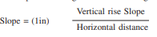
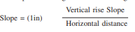

Schedule 1
Code of conduct for members of the Tribunal
1. General conduct
A member of the tribunal must always —(a)act in accordance with the principles of accountability and transparency; and(b)disclose his or her personal interests in any decision to be made in the planning process in which he or she serves or has been requested to serve;(c)abstain completely from direct or indirect participation as an advisor in any matter in which he or she has a personal interest and leave any chamber in which such matter is under deliberation unless the personal interest has been made a matter of public record and the Council has given written approval and has expressly authorised his or her participation.2. A member of the tribunal may not—
(a)use his or her position or privileges as Tribunal member or confidential information obtained as a Tribunal member, for private gain or to improperly benefit another person; or(b)participate as a decision maker concerning a matter in which that Tribunal member or that member’s spouse, family member, partner or business associate, has a direct or indirect personal interest or private business interest.3. Gifts
A member of the tribunal may not receive or seek gifts, favours or any other offer when it might reasonably be inferred that the gifts, favours or offers are intended or expected to influence that member’s objectivity as an advisor or decision-maker in the planning process.4. Undue influence
A member of the tribunal may not—(a)use the power of his or her office to seek or obtain special advantage for private gain or to improperly benefit another person that is not in the public interest;(b)use confidential information acquired in the course of his or her duties to further a personal interest;(c)disclose confidential information acquired in the course of his or her duties unless required by law to do so or by circumstances to prevent substantial prejudice or damage to another person; or(d)commit a deliberately wrongful act that reflects adversely on the Tribunal, the municipality, the government or the planning profession by seeking business by stating or implying that he or she is prepared, willing or able to influence decisions of the Tribunal by improper means.
Schedule 2
Swartland Municipality Develompment Management Scheme
Definitions and interpretation
Woordomskrywings
In this Development Management Scheme, unless the context indicates otherwise:Aabattoir, means a place where animals including poultry or sea-animals, are slaughtered and prepared for distribution to butcheries and food markets;access gate, means a prominent access to or exit from an urban area or a specific part of an urban area which features man- made or natural characteristics and creates a strong feeling of arrival or departure;access steps and porches, means access steps and porches for a building, including low walls and railings, if such steps and porches are not located within the retaining walls of the building;activity corridor, means an area of generally higher intensity urban use or land suitable for intensification, parallel to and on both sides of an activity spine, and includes any higher order transport routes such as railway lines and thoroughfares;activity spine, means a public street, incorporating an existing or planned public transport route, and adjacent land used or intended for mixed use development;additional dwelling unit, means a dwelling unit that may be erected on an agricultural land unit where a permitted dwelling has first been erected, in a zone where ‘additional dwelling unit’ is a consent use, provided that:(a)the additional dwelling unit shall be erected on the same cadastral unit as the dwelling that has first been erected;(b)the additional dwelling unit shall comply with the other relevant requirements specified in this Development Management Scheme;(c)the additional dwelling unit must have a lesser floor area than the dwelling that has first been erected;(d)in the Agricultural Zones 1 and 3 a maximum of one additional dwelling unit can be permitted if the extent of the cadastral unit does not exceed 10 ha, or if it does exceed 10 ha, then a maximum of 2, 3, 4 or 5 additional dwelling units will be permitted if the extent of the cadastral unit exceeds 10, 20, 30 or 40 ha respectively;(e)no alienation of additional dwelling units will be permitted whether by cadastral subdivision or sectional title.adult entertainment enterprise, means an establishment where films, photographs, books or magazines are hired or sold for payment, or where pornographic live performances occur for payment with the focus on the display or description of pornographic or erotic sexual activities or human genitals and includes an escort agency and a massage parlour, except a massage enterprise where massaging for medical or sport purposes is practised by a registered medical practitioner or similar professional person;advertise, with regard to a matter in terms of this Development Management Scheme, means to serve a notice to each owner of land having an interest in the matter in the opinion of the municipal manager and whose address he knows or is able to obtain and, if the said municipal manager so decides, to publish a notice in the Provincial Gazette and in the press wherein:(a)the location where and the hours during which particulars of the matter will be available for inspection, are indicated, and(b)it is mentioned that objections may be lodged with a person as indicated before a date which is also indicated, at a time which is at least 21 days after the date on which the notice is so served or published,and "advertisement" unless otherwise indicated has a corresponding meaning;advertisement, when used in the context of outdoor advertising, means any visible representation of a word, name, letter, figure or object or an abbreviation of a word or name of any sign or symbol, or light which is not intended solely for illumination or warning against danger;advertisement structure, means any physical structure constructed to display an advertisement;Advertising on Roads and Ribbon Development Act, means the Advertising on Roads and Ribbon Development Act, 1940 (Act 21 of 1940);agriculture, means the cultivation of land for crops and other plants, or the keeping and breeding of animals, including sea animals, including oysters and abalone, or the operation of a game farm, including use on an intensive basis of the natural veld or land, and includes only such activities and buildings (including those for accommodation), as are reasonably connected with the main farming activities, but excludes an agricultural industry;agricultural industry, means a business or an enterprise for the treatment and processing of agricultural products on or separate from the farm unit where those agricultural products are grown, due to the nature, perishability or fragility of such agricultural products, and includes, inter alia, wineries tasting and selling facilities, distilleries, breweries and farm packing stores, but does not include service trades;agri-village, means a private settlement of restricted size, established and managed as a lawful enterprise in a rural area and where tenure is restricted to bona fide rural workers and their dependants, from the farms and forestry or conservation areas in the vicinity of the development. Security of tenure does not include the right of ownership but can include a Trust, Communal Property Association or Sectional Title. The development of agri-villages represents a partnership between land owners, labourers and the state;air rights or underground rights, means rights to development, of a defined space above or below a public street, railway line or land area utilised by another mode of transport usage, for specific purposes;animal clinic, means a place where animals are treated, but does not include overnight facilities;animal hospital, means a place where animals are treated and cared for, which includes overnight facilities;antenna, means any system of wires, poles, rods, reflective surfaces, satellite dish, TV antenna or similar devices, used to transmit or receive electronic communication signals or electro-magnetic waves;appeal, means an application to the competent authority for review of a decision made;aquaculture, means the cultivation of water fauna and flora in artificially constructed dams including nets and containers in natural ponds and streams;area of control, when used in the context of outdoor advertisement, means an area where advertising control must be applied, such as maximum, partial or minimum control, in accordance with the visual sensitivity of the area and the traffic safety conditions;associated, when used in the context of an associated use or purpose, means a use, purpose, building or activity which is ancillary and subservient to the lawful dominant use of the land, and "associate" has the same meaning;atrium, means a covered courtyard comprising a void within a building that extends for one storey or more in height, but does not contain floors that penetrate the void; an atrium contains a floor and a roof or ceiling;authority usage, means a use which is practised by or on behalf of a public authority and the characteristics of which are such that it cannot be classified or defined under the other uses of this Development Management Scheme, and includes a use practised by:the State, such as military training centres and installations, police stations, correctional institutions or jails;(a)the Provincial Government, such as road stations or road camps;(b)the municipality, such as fire services, wastewater treatment works, waste control sites, reservoirs, composting installations or water purification works or a municipal office with related uses such as accommodation for staff who are required to be on standby for emergencies, or(c)a public utility, such as a telecommunication facility;average depth, in relation to a land unit, means:(a)the average perpendicular distance between a public street or road and the points at which the side boundaries meet the rear boundary, or(b)in the case of a corner site, the average perpendicular distance between the public street or road and the point at which the side boundaries meet, or(c)in the case of a panhandle site or a very irregular shaped land unit, the average depth as determined by the municipality;average width, in relation to a land, unit means:(a)the average of the length of the street boundary and the rear boundary, or(b)in the case of a corner site, the average of the length of the shortest street boundary or the opposite side boundary, or(c)in the case of a panhandle site or a very irregular shaped land unit, the average width as determined by the municipality;Bbalcony, means a floor projecting outside a building at a level higher than that of the ground floor, enclosed only by low walls, railings or by main containing walls of rooms abutting such projecting floor, and includes a roof, if any, over such a floor and pillars supporting the roof;basement, means part of a building of where the finished floor level is at least 2m below natural ground level, or the ceiling not more than 1m above, a height halfway between the highest and lowest natural ground level immediately contiguous to the building;base zone, means that zone which determines the basic land use and land use provisions for land in terms of this, before the application of any overlay zone;bed and breakfast establishment, means a dwelling or second dwelling unit in which the occupant of the dwelling unit provides lodging and meals for compensation to transient guests who have permanent residence elsewhere, provided that:(a)the dominant use of the dwelling unit concerned shall remain for the living accommodation of a single family, and(b)the land unit complies with the provisions pertaining to a bed and breakfast establishment;billboard, means any screen or board bigger than 4,5m² supported by a freestanding structure, which is to be used or is intended to be used for the purpose of posting, displaying or exhibiting an advertisement, which is also commonly known as an advertising board, whose main function is to advertise non-locality bound products, activities or services;bioregion, means a geographical area that contains an entire ecosystem or several established ecosystems characterised by particular landforms, vegetative cover, human culture and history;biosphere reserve, means areas of land, coastal or marine ecosystems or a combination thereof, which are internationally recognised within the framework of the Man and Biosphere Programme of the United Nations Educational, Scientific and Cultural Organisation (UNESCO);boarding house, means a building, where lodging is provided with or without meals, together with the outbuildings as are normally used therewith, and includes an old age home, a building in which rooms are rented for residential purposes and a residential club, but does not include a dwelling, group housing, a double dwelling, an institution, a place of education, a hotel, a bed and breakfast establishment or flats;boat launching facility, means land used to launch boats into the water and to retrieve boats from the water and includes a boat ramp and slipway;bottle store, means premises where alcoholic drinks are sold primarily in the retail trade on an off-sales basis, and includes an off-sales facility which is under the same management as a licensed hotel;boundary, in relation to a land unit, means one of the cadastral lines separating such unit from another land unit or from a public street or road;builder’s yard, means premises used for the storage of material and equipment which:(a)is required or is normally used for construction work;(b)was obtained from demolition of structures or from excavations of land, or(c)is necessary for or is normally used in land improvements, such as storage of material used for building roads, for the installation of essential services, or for any other construction work (e.g. of sand or bricks), whether for public or private purposes;building, without in any way limiting its ordinary meaning, includes:(b)any external stairs, steps or landings of a building and any gallery, canopy, balcony, stoep, verandah, porch or similar feature of a building;(c)any walls or railings enclosing any feature referred to in (ii); and(d)any other portion of a building;building line, means an imaginary line on a land unit, which defines a distance from a specified boundary, within which the construction of buildings or structures (excluding a boundary fence) are completely or partially prohibited;business premises, means a building or land from which business is conducted, and includes a shop, supermarket, restaurant, office, financial institution and buildings for similar uses, but does not include a place of assembly, place of entertainment, institution, service station, motor repair garage, industry, industrial hive, noxious trade, risk activity, adult entertainment enterprise or bottle store;Ccadastral line, means a line representing the official boundary of a and unit as registered in the Deeds Office or as a record on a diagram or general plan approved by the Surveyor General;camping site, means land on which tents and caravans are utilised as accommodation for visitors, and includes ablution, cooking area, barbeque and other facilities for the use of such visitors;caravan, means a vehicle which has been well equipped for use by persons for living or sleeping purposes, regardless of whether such vehicle is a trailer or not and which can be readily moved;caravan park, means a land unit or part thereof where tents or caravans for short-term holiday accommodation have been planned for and can be accommodated, and includes ablution, cooking and other facilities for the occupants of the caravans;carriageway crossing, means a motor vehicle entrance or exit way, or a combined entrance and exit way, from a land unit to a public road;carport, means a roofed structure, for the housing of motor vehicles, which is open at the entrance and on at least one other side;car wash, means a building or structure equipped for the purpose of washing motor vehicles;cellular telecommunication infrastructure, means, but is not limited to, one of the following:(a)an antenna support structure including any solid or lattice structure, mast pole, monopole, anchor tower, lattice tower, freestanding tower or any structure designed and primarily used to support the antenna;(b)antenna structures including any system for wires, poles, rods or similar devices used for the transmission or reception of electromagnetic waves, attached to a building or mast, and includes cabling between the equipment room and the antenna;(c)a base station site including the land, antenna support structures, and all associated infrastructure such as the antenna, microwave dish, equipment room and access road;(d)an equipment room including a structure to house cellular telecommunication equipment associated with an antenna support structure and/or antenna, which may be a separate building used exclusively for the equipment or may be a container, room or multiple rooms within a building with another specific use, or(e)microwave dishes including any device incorporating a reflective surface that is solid, open mesh, or bar configured in the shape of a shallow dish, cone, horn or something similar, and is used to transmit and/or receive electromagnetic waves;cemetery, means a place where the dead are buried and may include buildings that are necessary for the religious, administrative and clerical uses associated therewith, but does not include a crematorium;clinic, means an institution where patients are given medical treatment or medical-related advice, and may include a medical centre, an outpatients’ centre or a wellness centre with associated uses, provided that a clinic does not contain live-in facilities for more than twenty persons, including staff and patients;commencement date, means the date of commencement of this Development Management Scheme;commercial antenna, means a facility, incorporating a high mast, for the transmission and/or receiving of electromagnetic waves, and includes a television station, a radio station and a cellular communication tower;commercial pet kennel, means kennel services for dogs, cats and similar animals, and includes commercial breeding or boarding kennels, pet motels and training centres;common boundary, in relation to a land unit, means a common boundary with an adjoining land unit and does not include a street boundary;composting, the creation and sale of fertiliser that is allowed to form out of the storing and special treatment of organic residue;conference facility, means a place of gathering, which also supplies meals, and which normally is an additional activity to a primary function such as a hotel, guest house or restaurant, and where the building restrictions will be those of the primary function, except that additional parking may be required;consent, means special permission granted by the municipality, after due consideration of the relevant facts and after a reasonable and lawful process has been followed, in terms of which a specific type of land use or activity is permitted, in addition to the primary use rights applicable to the land concerned;consent use, means an additional use right or a variation of a development management provision that is permitted in terms of the provisions in a particular zone, only with the consent of the municipality;conservational usage, means the use and/or maintenance of land in its natural state with the purpose of conserving the biophysical properties of the land, including the flora and fauna occurring on the land;conservation worthy, when used in the context of a heritage area, means the level of cultural or historical significance of a place and its relative value for conservation, as determined by the municipality;conservation worthy tree, means a protected tree listed under section 12 of the National Forest Act, 1998 (Act 84 of 1998), i.e. a tree taller than 6m, and a tree with a trunk circumference of more than 1,5m measured 1m from the ground, and that was not declared an invader plant within the western cape under section 2(3) of the Conservation of Agricultural Resources Act, 1983 (Act 43 of 1983);correctional institution, means a building where children are housed and trained on instruction by a court of law, and includes a reformatory, place of detention or industrial school, but does not include a jail;coverage, means the total area of a land unit that may be covered by buildings, expressed as a percentage of the net area of such land unit, and shall include:(c)stairs, steps, landings (except entrance landings and steps), galleries, passages and similar features, whether internal or external, and(d)canopies, verandahs, porches, balconies, terraces and similar features, provided that the following portions of buildings shall be disregarded in the calculation of coverage:(i)stoeps, entrance steps and landings;(ii)cornices, chimney breasts, pergolas, flower boxes, water pipes, drainpipes and minor decorative features not projecting more than 0,5m from the wall of the building;(iii)eaves not projecting more than 1 m from the wall of a building, and(iv)a basement, provided that the basement ceiling does not project above the finished ground level;crèche, means a facility for the day care of young children in the absence of their parents, and may provide care for more children than are permitted at a day care centre;crematorium, means a building where the dead are reduced to ash through a process known as ‘cremation’, and includes facilities for associated religious and administrative functions;current use, means the use as determined by the municipality in terms of applicable legislation or that which is practised actually and lawfully on land or in a structure or building or part thereof in the opinion of the municipality, and ‘existing building’ has the same meaning;Dday care centre, means the use of a portion of a dwelling or outbuildings by the occupant to provide day care, pre-school, play group or after school care services for children provided that:(a)the service be primarily day care or educational in nature and not medical;(b)the dominant use of the dwelling shall remain for the living accommodation purposes of a single family; provided that a child care service for 5 or less children may be regarded as an occupational practice, and a child care service for more than 20 children shall be regarded as a crèche or place of education;dBA, means the physical unit used to describe noise level, that is, the A-weighted sound pressure level measured in decibels. The term ‘dBA’ is therefore an abbreviation of the term ‘decibel. ‘A’ frequency weighting is an adjustment made to sound- level measurement to accommodate the response of the human ear. This shall be measured in accordance with accepted scientific principles, as prescribed in the Noise Control Regulations in the Provincial Government of the Western Cape P.N. 627/1998 Noise Control Regulations, as amended, promulgated in terms of ECA;department head, means the head of the department, or the person, that is charged with the administration of this Development Management Scheme;departure use, means the use of land that was considered legal before the date of commencement, but does not comply to the utilisation of land use provisions put forward in this Development Management Scheme and remains a legal use as long as changes requiring building plan approval are not made;develop, in relation to land, means to prepare or develop land for occupation or use, whether by filling, drainage or levelling of areas; the removal of vegetation, the installation of engineering services, the subdivision of land or the construction, alteration or extension of buildings or structures on land, and "development" has a corresponding meaning in relation to land;development framework means a plan or written strategy approved by the municipality and, if applicable, the Provincial Government;development management provisions, means measures, limitations,provisions or requirements that determine to which degree use or development of land will be permitted;display, in relation to a sign, includes, without in any way limiting its ordinary meaning, the erection of any structure for support of such sign;district distributor road, means a public road or street declared by the municipality to be a district distributor road on the basis that it functions as an important distributor of traffic in an area or district;disturbing noise, means the ambient noise level which exceeds the sound level of a zone concerned or, if no zone level has been determined, a noise level which exceeds the sound level of the environment at the same point of measurement by 7 dBA or more, provided that the determination of the sound level of the environment shall be done in accordance with Noise Control Regulations promulgated in terms of NEMA;domestic staff quarters, means an outbuilding, including sanitary and cooking facilities, and used for the accommodation of domestic staff employed at the dwelling concerned;dominant use, means the predominant or major use of land, and may consist of the primary or consent uses permitted on the land;double storey, means a storey above the ground floor. ‘First storey’ has a similar meaning;double dwelling, means a building erected for residential purposes that is designed as a single architectural entity containing two dwelling units on one land unit;dwelling, means a building containing only one dwelling unit;dwelling unit, means a self-contained inter-leading group of rooms with not more than one kitchen, used for the living accommodation and housing of a single family, together with such outbuildings as are ordinarily used therewith;Eeave, means a part of a roof projecting from the facade of a building and includes gutters;ECA, means the Environment Conservation Act, 1989 (Act 73 of 1989);ecosystem, means a self-sustaining and self-regulating community of organisms and the interaction between such organisms with one another and their environment;encroachment agreement, means an agreement between an owner and the municipality relating to the projection of portions of a building or structure from the owner’s land unit onto or over the municipality’s property;engineering services, means infrastructure for the provision of water and electricity, sewerage infrastructure, storm water disposal infrastructure, streets, roads and pedestrian walkways, including all related services and equipment;entrance steps and landings, means steps and landings of a building, including any low walls and railings, if such steps and landings are not within the main containing walls of the building;environment, means the objects, conditions and influences in the direct environment put together, which affect the life and habits of persons or of any other organisms or collection of organisms;environmental impact assessment, means a report concerning the impact on the environment of specified activities, and which shall comply with requirements laid down by NEMA ;environmental management plan, a business plan that establishes and coordinates mitigation, rehabilitation and monitoring measures for the monitoring of the implementation of a proposal and for the monitoring of maintenance after implementation;erection, in relation to a building or structure includes:(a)the building of a new building or structure;(b)the alteration or conversion, or addition to, a building or structure; and(c)the re-erection of a building or structure which has completely or partially been demolished, and ‘erect has a corresponding meaning;equipment room, means a building to accommodate communication equipment associated with telecommunication infrastructure which can be a separate building used exclusively for the equipment or it can be a container, or a room within a building;erf, means the same as ‘land unit’;exhibition centre, means premises where displays, social functions, markets as well as training can take place and includes associated facilities and amenities as well as infrastructure including parking;Ffamily, means:(a)a single person maintaining an independent household, or(b)two or more persons directly related by blood or marriage maintaining a common household, or(c)no more than five unrelated persons maintaining a common household;farm shop, means a building, located on a farm, including storage facilities, from where goods may be sold to the general public and may include a restaurant;filming, means the recording of images, moving or still, whether on film or by video tape, electronically or by any other means, but excludes the video recording of a wedding ceremony or other private celebration or event for the purpose of making a video record thereof, for its participants, or the recording of current affairs or news for immediate release."first storey, means the storey above the ground floor and has the same meaning as ‘double storey’;flats, means a building containing three or more dwelling units, together with such outbuildings as re ordinarily associated therewith; provided further that in those zonings where flats are permissible, a building with less than three dwelling units shall also be permissible in a building approved for flats or purposes other than for flats;flood, means a general and temporary condition of partial or complete inundation of land areas from the overflow of a body of water;flood level, means the level of floodwater that on average occurs every 100 years (also called a 1 in 100 years flood), and means the same as ‘base flood’;floodway, means the channel, river or other watercourse and adjacent land areas that must be kept free of structures and other obstructions, for the base flood to be discharged without the water surface elevation being increased;floor, means the inner, lower surface of a room, garage or basement and includes a terrace or atrium to which the occupants of a building have access;floor factor, means the factor (expressed as a proportion of 1) which is prescribed for the calculation of the maximum floor space of a building or buildings permissible on a land unit, and which is the floor space divided by the nett erf area of the land unit, so that the maximum permissible floor space can be calculated by multiplication of the floor factor with the net erf area;floor space, in relation to a building, means the area of a floor which is covered by a concrete slab, roof or projection, provided that:(a)any area, including a basement, which is reserved solely for parking or loading of vehicles, shall be excluded;(b)external entrance steps and landings, any stoep and any area required for external fire escapes, shall be excluded;(c)a projection including a projection of eaves, and a projection which acts as a sunscreen or an architectural feature, whose projection does not exceed 1m beyond the exterior wall or similar support, shall be excluded;(d)any uncovered internal courtyard, lightwell or other uncovered shaft which has an area in excess of 10m², shall be excluded;(e)any arcade, with a minimum width of 2m, which provides access through the building concerned from public parking, a public street or open space, to a separate public parking area, public street or open space, and which at all times is open to the public, as well as any covered walkway, the roof of which allows light to pass through, shall be excluded;(f)any covered paved area outside and immediately adjoining a building at or below the ground floor level, where such paved area is part of a forecourt, yard, external courtyard, pedestrian walkway, parking area or vehicular access, shall be excluded;(g)subject to (viii) below, any balconies, terraces, stairs, stairwells, verandas, common entrances and common passages covered by a roof shall be excluded; and(h)any stairwells, lift wells or other entrance areas or atriums, in the case of multi-storey buildings, shall only be counted once;provided further that floor space shall be measured from the outer face of the exterior walls or similar supports of such buildings. Where the buildings consist of more than one storey, the total floor space shall be the sum of the floor space of all the storeys, including that of basements;floor space ratio, means the same as ‘floor factor’;food processing, means the manufacturing of food products through the processing of agronomic and stock farming products as well as of already-existing food;four-by-four track (4x4 track), means a series of roads, tracks and routes, designed for use by off-road vehicles as a recreation or adventure facility, and includes buildings normally required for the administration and maintenance thereof, but does not include holiday accommodation or tourist facilities;frail care facility, means a facility that provides short and long term care for people with chronic illnesses and disabilities with the aim of improving the quality of life of patients and their families facing problems associated with life threatening illness, through the prevention and relief of suffering and includes treatment of elderly people, people suffering from diabetes, cardiovascular disease, stroke, accident victims, HIV/ AIDS and other;freestanding base telecommunication station, means a freestanding support structure on land or anchored to land and used to accommodate telecommunication infrastructure for the transmitting or receiving of electronic communication signals and may include an access road to such facility, and bears the same meaning as ‘transmission tower’;funeral parlour, means premises where the dead are prepared to be buried or cremated and includes facilities for associated activities, administration and religious functions;Ggambling facility, means premises for gambling by gaming or wagering, and where there is the opportunity to receive a monetary reward;garage, means a building used for the storage of motor vehicles, but does not include a motor repair garage or service station;grade line, means an imaginary line connecting the highest and the lowest natural levels of ground immediately contiguous to a building;greenhouse, means a structure with the sides primarily made of a transparent material such as glass, perspex or plastic, for the purpose of growing delicate plants or hastening growing of plants under controlled environmental conditions;gross density, means a measure of the number of dwelling units in a specified area, and is calculated, for the purposes of this Development Management Scheme, as follows: gross leasable area, means the total floor space designed for, or capable of, occupation and control by tenants, measured from the centre line of the joint partitions to the inside finished surface of the outside walls, but shall exclude toilets, lift shafts, service ducts, vertical penetrations of floors, interior parking and loading bays;gross parking space, means an area which incorporates one parking bay plus circulation and landscaping space for one parking bay;ground floor, means the lowest floor of a building which is not a basement.ground level, means the same as "natural ground level";ground storey, means the lowest storey of a building, the base of which is the ground floor, but which is not a basement;group house, means a dwelling unit which forms part of a group housing scheme;group housing, and ‘group housing scheme’, means a group of separate and/or linked dwelling units planned, designed and built as a harmonious architectural entity and arranged around or inside a communal open space in a varied and ordered way and where every dwelling unit has a ground floor, and of which the dwelling units may be cadastral subdivided;group housing site, means one or more land units on which a group housing scheme or retirement village may be erected;guest house, means a dwelling that is used for the purpose of letting individual rooms for residential accommodation, with or without meals, and which exceeds the restrictions of a bed and breakfast establishment, provided that:(a)the dwelling is retained in a form which can easily be re-used by a family as a single dwelling, and(b)all amenities and provision of meals shall be for the sole benefit of bona fide lodgers;Hhealth care facility, means a building used for the care of people in a medical, social or social welfare facility, or for the administration thereof, and includes a hospital, clinic or home for the aged, indigent or physically handicapped, but does not include a correctional institution or jail;height, of a building, means a vertical dimension of the building from the grade-line to the highest point of the building measured in meters or in the amount of storey’s or both, provided that—(a)elevator or escalator motor rooms, satellite dishes, ventilation shafts, water tanks, air conditioning plant and equipment on the roof of a building, shall be deemed to constitute a storey, unless it is enclosed within the roof or hidden behind parapet walls not exceeding 2m in height, in which case they shall be deemed to form part of the top storey; and(b)chimneys, flues, masts, antennas, satellite dishes not exceeding 1,5 m in diameter and external geysers with associated equipment not protruding more than 1,5 m above the top of the roof shall not be counted for the purpose of height control;height of a sidewalk,(a)the height at the back of a sidewalk/pedestrian walkway where it is constructed in a road reserve; or(b)the height determined by the municipality where the sidewalk/pedestrian walkway will not be constructed inside the road reserve, and has the same meaning as "level of pavement"heritage conservation area, means an area designated for this purpose by the municipality, in terms of this Development Management Scheme;Heritage Resources Act, means the National Heritage Resources Act, 1999 (Act 25 of 1999);high water mark, means the high-water mark as defined in the National Environmental Management: Integrated Coastal Management Act, 2008 (Act 24 of 2008);hillside area, means an area which has a slope of 1 in 5 or greater;hobby, means an activity done by a person, for enjoyment, normally during leisure time;holiday accommodation, means a harmoniously designed and built holiday development, used for holiday and recreational purposes, whether in private or public ownership, which:(a)consists of a single enterprise in which accommodation is supplied by means of short-term rental or time sharing only;(b)may include ancillary staff accommodation and the provision of camping sites;(c)may include a restaurant and indoor and outdoor recreation facilities, and(d)does not include a hotel or motel;horticulture, means the cultivation of plants and fungi on an intensive scale, including the cultivation of plants and fungi under one roof or in a greenhouse, and also refers to the sale of self-cultivated plants and fungi on a land unit;home occupation, means the practicing of an occupation or trade, or the conducting of an enterprise from a dwelling unit by one or more occupants of the dwelling unit and his or their assistants, provided that the dominant use of the dwelling unit concerned shall remain for the living accommodation of a single family, and the provisions pertaining to home occupation in this Development Management Scheme are adhered to;hospital, means a facility designed as an integrated complex for the diagnosis, care and treatment of human illness, and includes live-in facilities for patients, nurses and staff;hotel, means premises used as a temporary residence for transient guests, where lodging and meals are provided, and may include associated conference and entertainment facilities that are subservient and ancillary to the dominant use which is for hotel purposes, as well as premises which are licensed to sell liquor for consumption on the premises, but does not include an off-sales facility;house tavern, means premises for the conducting of an enterprise from a dwelling or outbuilding, by the occupant of the dwelling concerned, for the sale of alcoholic beverages, and may include consumption of alcoholic beverages by customers on the land unit, provided that the dominant use of the dwelling concerned shall remain for the living accommodation of a single family;house shop, means premises for the conducting of retail trade from a dwelling or outbuilding by one or more occupants of the dwelling concerned, provided that the dominant use of the dwelling concerned shall remain for the living accommodation of a single family;IICNIRP, means International Commission on Non-Ionizing Radiation Protection;industrial hive, means a building or a complex of uniformly designed buildings, containing a mix of retail and manufacturing activities, and arranged in an orderly manner around common spaces, which may include common parking and access;industry, means premises which in the municipality’s opinion, are used as a factory and in which:(a)an article or part of such article is made, manufactured, produced, built, assembled, compiled, printed, ornamented, processed, treated, adapted, repaired, renovated, rebuilt, altered, painted (including spray painting), polished, finished, cleaned, dyed, washed, broken up, disassembled, sorted, packed, chilled, frozen or stored in cold storage;(b)livestock (including poultry) is slaughtered; or(c)electricity is generated for use in processes referred to in (a) and (b) above, provided that industry includes an office, caretaker’s quarters or other uses which are subservient and ancillary to the use of the land as a factory, but does not include a noxious trade or risk activity;informal trading, means the lawful sale of products in areas specifically demarcated for this purpose by the municipality, such as markets and demarcated areas in the business district;institution, means premises used as or intended to be used as a social, health or welfare facility, or for the administration thereof, and includes a hospital, clinic, pharmacy, home for the aged, indigent or handicapped, rehabilitation centre, reformatory or place of detention, whether of a commercial or charitable nature, but does not include a jail;integrated development framework, means a development framework which deals with integration of different strategies and sectoral plans relating to development, such as spatial, economic, social, infrastructure, housing, institutional, fiscal, land reform, transportation, environmental or water plans, to attain the optimal allocation of limited resources in a particular geographic area, and may include an integrated development plan as defined in the Municipal Systems Act;integrated development plan, means a plan envisaged in section 25 of the Municipal Systems Act;intensive stock farming, means the keeping, feeding and breeding of animals on an intensive scale. These animals include poultry and sea-animals including oysters and abalone, on an intensive basis within buildings and structures and includes feeding lots;Kkeeping of animals, means the accommodation of animals;Lland, means land with or without improvements in terms of land development and, includes land covered with water such as marsh or wetlands;landscape plan, means a plan indicating detailed landscape proposals including walkways, paving, plants, water features, recreation areas, engineering services and any other such land uses;landscaping, means the planting or placement of plants for the purpose of protecting and promoting aesthetic appeal, scenic beauty, character and value of land, as well as promotion of public health and safety through the reduction of noise pollution, storm water runoff, air pollution, visual pollution or light glare;land survey certificate, means a certificate issued by a professional land surveyor;land unit, means a portion of land registered or viable to be registered in a deeds registry;level of the pavement, means(a)in the case of a pavement/ footway which has been constructed within a road reserve reserves to the back of the pavement/ foot-way; or(b)the height determined by the municipality, referring to a footway that was not been constructed or is yet to be constructed and "height of the pavement" has the same meaning;licensed hotel, means a building designed to comply with the requirements of a hotel;linked, in relation to the definitions of town housing and group housing, means to be connected by means of a boundary wall or garage;loading zone, means an area measuring not less than 4,5m x 7,5m, which is clearly demarcated for loading and off-loading of goods from commercial vehicles, which also provides vehicular access to a public street at the satisfaction of the municipality;local sign, means the same as ‘permanent sign’;lodge, means premises used as a temporary residence for transient guests, where lodging and meals are provided, and may include associated conference and entertainment facilities that are subservient and ancillary to the dominant use of the premises as a lodge. ‘Lodge’ also implies that there are premises on site which are licensed to sell liquor to be consumed on that same land unit, however does not include an off-sales facility;lodger, means a person who pays rent for bedroom accommodation within another person’s dwelling unit;lodging, means bedroom accommodation which is made available in exchange for payment, and includes the services ordinarily related to such accommodation;Mmain road, means a public street or road which is defined as a main road in terms of the Advertising on Roads and Ribbon Development Act, 1940 (Act 21 of 1940), as well as the Roads Ordinance, 1976 (Ordinance 19 of 1976);maximum floor space, means the greatest total floor space which is allowed for a building or buildings including all the storeys on a land unit, such maximum floor space being calculated by multiplication of the floor factor by the net erf area of the land unit or that portion of the land unit which is situated within a particular zone. This is applicable provided that where the land unit is situated within two or more zones in which different floor factors apply, the maximum floor space for the whole land unit shall be the total of the maximum floor space for each portion of the land unit;medical consulting rooms, means premises, excluding a hospital or clinic, which are used for human medical or medically related consultation, examination or treatment, but does not include live-in facilities;mezzanine, means an intermediate floor in a building between the ground floor and the first floor;Mineral and Petroleum Resources Development Act, 200 (Act 28 of 2002), means the Act that controls the issuing of permits and licenses;mining, means an enterprise which practices the extraction of raw material from the earth, whether by means of surface or underground methods, and includes, but is not limited to, the removal of stone, limestone, sand, clay, kaolin, ores, minerals, gas and precious stones as well as referring to the process of stone crushing;mobile home, means a transportable factory-constructed structure with the necessary service connections, which is designed so that it can be used as a permanent dwelling;mortuary, a place, specifically referring to a funeral home, where dead bodies are kept before burial or cremation;motor vehicle, means a vehicle designed or used for propulsion by means of an internal combustion or electrical engine, and includes a motorcycle, trailer or caravan, but does not include a vehicle moving exclusively on rails;NNational Building Act, means the National Building Regulations and Building Standards Act, 1977 (Act 103 of 1977);National Constitution, means the Constitution of the Republic of South Africa, 1996;natural ground level, means the level of the land surface on a land unit:(a)in its unmodified state, or(b)in a state where the land has been graded, with a grading machine that levels out the surface land area, with the municipality’s permission, for the purposes of development, provided that:(i)any grading of land for the purpose of development shall connect evenly with the existing levels of abutting land units;(ii)where land is excavated, the excavated level is deemed to be the natural level of the ground;(iii)where it is not possible to determine the natural level of the land owing to irregularities or disturbances of the land, the municipality shall determine a level for the purpose of administrating this Development Management Scheme; and(iv)where land is excavated and the excavated material is used to elongate a building site (cut to fill) the municipality shall define a level for the purposes of administering these regulations;nature reserve, means a national park, or some other nature park which is in the ownership of a public authority or has been declared as such in terms of legislation and remains in private ownership. It consists of an area which is utilised as a game park or reserve for fauna and flora in its natural habitat and includes contextual size and impact related accommodation facilities for tourists or holidaymakers;NEMA, means the National Environmental Management Act, 1998 (Act 107 of 1998);nett density, means the density of a specified area, calculated through land set aside for ancillary uses, such as open spaces, streets, schools and business use, being subtracted from the total area, at the satisfaction of the municipality, and the number of residential units being divided by the remaining area that exist or for which planning is being done;nett erf area, means the total area of a land unit, excluding all land reserved for public purposes, such as streets, roads or road widening;noise level, means a reading on an integrated impulse sound level meter taken in accordance with accepted scientific principles, as described in the noise control regulations promulgated in terms of NEMA;noise pollution, means any sound which, in the opinion of the municipality, causes or may cause unreasonable nuisance, or which may disturb the comfort or peace and quiet of a person or persons in the vicinity;non-conforming use, means use of land which was lawful before the commencement date, but which does not conform to the use or land use provisions stipulated in this Development Management Scheme and stays a lawful use as long as no changes requiring building plan approval are made;noxious trade, means an offensive, poisonous or potentially harmful trade, use or activity which due to fumes, emissions, smell, vibration, noise, waste products, the nature of material used, the processes employed, or other causes, is deemed by the municipality to be a potential source of danger, nuisance or offence to the general public or persons in the surrounding area;nursery, means an enterprise for the sale of plants, horticultural products and horticultural equipment;Ooccupant, means any person who physically inhabits a building, a structure or land area, or a person having the charge or management thereof, and includes the representative of any person absent from the area or whose whereabouts is unknown;occupational practice, means the same as ‘home occupation’;offices, means a room or a suite of rooms or a building used for an administrative function or for the conducting of an enterprise primarily concerned with administrative, clerical, financial or professional services, and includes a post office or magistrate’s offices or professional use;office park, means a group of office buildings which are designed and built as a harmonious architectural entity, arranged in an orderly manner within a landscaped environment, and involving shared use and management of amenities such as roads, services, access control or common land;Organ of state, means an organ of the state as defined in Section 239 of the Constitution;outbuilding, means a structure, whether attached to or separate from the main building, which is designed to be normally used for domestic staff quarters, for storing motor vehicles or for general storage purposes, provided that these uses are usually necessary in connection with the main building, however this does not include additional dwelling units;outdoor advertisement, means the action or process of notifying, warning, informing, announcing or any other mode of communicating of information in a visual manner and which takes place outdoors;outdoor recreation facility, means an area where leisure and recreational opportunities are available, primarily outdoor facilities such as, but not limited to, open-air concerts, miniature golf and roller-skating rinks. These are available usually in the interest of commercial gain;overlay zone, means a category of zoning applicable to particular land, which stipulates additional land use provisions for such land in addition to the underlying zoning requirements, and may include parameters relating to consent use restrictions, subdivision, urban renewal, environmental protection or any other purpose as set out in this Development Management Scheme. This is given that overlay zoning may add further land use provisions in a particular area or zone which may be more restrictive or less restrictive than that of the land units which are not covered by the overlay zoning implying that ‘overlay zoning’ has a corresponding meaning;owner, in relation to land, means the person or entity in whose name that land is registered in a deeds registry, and may include the holder of a registered servitude right, or long term lease, or any successor in title;Ppackage of plans, means the hierarchy of plans specified in terms of this Development Management Scheme;panhandle, means a narrowed section of a land unit that provides access to a street;parking bay, means an area measuring no less than 5m x 2,5m for perpendicular parking and 6m x 2,8m for parallel parking, which is clearly outlined and demarcated for the parking of one motor vehicle and which is accessible at the satisfaction of the municipality;parsonage, means a dwelling for the living accommodation of a spiritual leader who is in the full-time service of an organisation which conducts religion in a place of worship, and can include the living accommodation of the spiritual leader’s family as well as a monastery;patio, means a paved roofless area adjacent to and belonging to a building or an open-air courtyard;pergola, means any roofless, horizontal or almost horizontal grid or framework and is applicable if the area seen in the horizontal projection of the solid portions of this grid does not exceed 25% of the total area thereof;permanent sign, means a sign on a specific site, premises or building which is permanently displayed and which refers to an activity, product, service or attraction offered or provided on those premises on that site or inside the building, and has the same meaning as ‘local sign’;petroport, means a facility with direct access from a highway, through-way or main transport route, which provides rest, service and fuel facilities for long-distance trucks and other long-distance vehicular traffic, and includes facilities for emergency vehicle towing services;petrol filling station, means the same as ‘service station’;place of assembly, means a public hall, a hall for public or social functions, a music hall, a concert hall or a hall for display purposes which is not directly related to a commercial enterprise, town hall or civic centre;place of entertainment, means a theatre, cinema, dance hall, karaoke, amusement park, sports centre, billiards room, games arcade, skating rink, or similar place and may include a gambling facility or another use which requires an Entertainment License in terms of the Businesses Act, 1991 (Act 71 of 1991);place of education, means a crèche, pre-primary school, school, college, technical institute, university, research institution, convent, public library, public art gallery, museum or other centre of education, and includes an associated hostel, but excludes a building or land unit which is predominantly used as a certified correctional institution or industrial school or as an institution;place of worship, means a church, synagogue, mosque, temple, chapel or other place for practicing a faith or religion, and includes any building, including a residence, associated therewith, but does not include a funeral parlour, cemetery or crematorium with related chapel;porch, means a roof (not being the roof or balcony) projecting from the outside of a building above a doorway, and forming a covered entrance to such building, and includes any paved area hereunder, any low walls or railings enclosing such paved area and any pillars supporting such roof;Premier, means the Premier of the Western Cape Province;primary distributor road, means a public street declared by the municipality to be a primary distributor road;primary use, in relation to land or buildings, means any use specified in this Development Management Scheme as a primary use, being a use that is permitted without the need to obtain the municipality’s consent except for building plan approval;private open space, means land which is or will be under private ownership, or municipal land on a long-term lease, with or without access control, used primarily as a site for outdoor sports, play, rest or recreation, or as a park, garden, or play area or for nature conservation;private parking, means land, a building or part of a building which is managed by a private individual or institution and which is used exclusively for parking purposes and is not normally accessible to the general public except when payment is involved;private road, means land reserved for the passage or parking of motor vehicles, which is privately owned and does not vest in the municipality or another public authority;proclaimed road, means a road proclaimed in terms of the Advertising on Roads and Ribbon Development Act, 1940 or any other applicable legislation;professional use, means that kind of use which is normally and reasonably associated with professionals such as doctors, dentists, attorneys, architects, engineers and town planners, where services rendered, are separate from trading are one of the distinguishing factors;property, means land together with all buildings and structures on the land;public authority, means a state department, a municipality or a department of the Provincial Government;public garage, means a business where motor vehicles are provided with fuel in exchange for payment, and/or includes trading in motor vehicles, oil, tyres or motor spares, the repair or overhauling of motor vehicles, a restaurant or café together with bathroom facilities, spray painting, panel beating, blacksmith or body work;public housing, means dwelling units which are built with funds granted by a public authority;public nuisance, means any act, omission or condition which in the municipality’s opinion is offensive, induces injury or is dangerous to health, or materially interferes with the ordinary comfort, convenience, peace and quiet of the public, or which adversely affects the safety of the public, considering:(a)the reasonableness of the activities in question in the area concerned, and the impacts which result from these activities; and(b)any noise levels stipulated in an overlay zone applying to the land concerned;public place, means any open or enclosed place, park, street, road or thoroughfare or other similar area of land shown on a general plan or diagram that is for use by the general public and is owned by, or vests in the ownership of, a municipality, and includes a public open space and a servitude for any similar purpose in favour of the general public;public parking, means land that is accessible to the general public for parking purposes with or without a fee;public road or public street, means any land indicated on Surveyor General approved plan, diagram or map, of which the ownership vests in the municipality or another public authority in terms of applicable law, and which has been set aside for vehicular and pedestrian use;publish in the press, means to publish a notice in such newspaper or newspapers as the municipal manager may determine from time to time, or in the Provincial Gazette or in both a newspaper or newspapers as intended herein and the Provincial Gazette, and ‘publication in the press’ has a corresponding meaning;Rracing track, means land used to race, rally and scramble, including go-karts, quad bikes, motorcycles, motorboats as well as racing animals (e.g. horses and dogs), and includes the testing of vehicles and boats;rear boundary, with regard to a land unit, means every boundary situated thereon (other than a street or side boundary) which is parallel to, or is within 45 of being parallel to, every street boundary of such land unit and which does not intersect a street boundary, provided that, in the case of a panhandle land unit, the municipality shall determine which boundary, if any, is the rear boundary;recycling plant, a facility where waste is separated for reprocessing for further use as a product or raw material;register, means the document held by the municipality in connection with all departures, consent uses, site development plans, conditions relating to use rights or special zone land use provisions;rehabilitation centre, means premises or part thereof used or intended to be used to rehabilitate people or animals through physical or mental stimulation;religious leader’s residence, means a building designed as a joint architectural unit on the same land unit as a place of worship;renewable energy structure, means any wind, water or organic matter turbine or solar voltaic apparatus, or grouping thereof that captures and converts wind, water, organic matter or solar radiation into energy for commercial gain irrespective of whether it feeds onto an electricity grid or not, and includes any appurtenant structure or any test facility or structure that may lead to the generation of energy on a commercial basis;residential building, means a building (excluding a dwelling, a group house, a town house or flats) for occupation by persons, together with such outbuildings as are ordinarily used therewith, and includes a boarding house, lodging rooms, a licensed hotel (excluding an off-sales facility), an old-age home, a children’s home and a hostel, but does not include buildings which, either by means of inclusion or exclusion, are mentioned in the definition of "place of education" or "institution";resort shop, means a shop, within a holiday resort, which does not exceed 500m² in floor space, including storage facilities;resource industry, means the process of extracting, mining, winning or quarrying raw materials from the ground including gravel, sand and stone, and includes buildings and activities connected with such operations as well as a crushing plant.;restaurant, means a commercial establishment where meals and liquid refreshments are prepared and served to paying customers for consumption on the site, and includes licensed provision of alcoholic beverages for consumption on the site;rezoning, means amendment of the Development Management Scheme in terms of the By-Law in order to effect a change of zoning in relation to a particular land unit or part thereof or to land units;riding school, means a place or undertaking for the leasing of horses and riding instructions being provided in exchange for payment, and includes the care and stabling of such horses;right of use, in relation to land, means the right to use land in accordance with the zoning thereof, including any lawful departure;risk activity, means an undertaking where the material handled or the processes carried out are liable to cause rapid combustion or give rise to poisonous fumes, or cause explosions, and includes activities involving dangerous and hazardous substances that are controlled in terms of national legislation;road, means a public or private street or road;rooftop base station, means a cell phone base station where antennae are attached to the roof or side of an existing building;SSANS, means South African National Standards;satellite dish antenna, means an apparatus capable of receiving or transmitting communications from a satellite;scenic drive, means a public road or street which has been declared as a scenic drive by the municipality in recognition of the high visual amenity alongside that public road or street, including background vistas of mountains, open country, coastline or urban landscape;scenic drive corridor, means all land within 200m on either side of a scenic drive as measured perpendicularly from the centre line of the road reserve;scrap yard, means a building or land which is utilised for one or more of the following purposes:(a)storing, depositing or collecting of junk or scrap material or articles of which the value depends mainly or entirely on the material used in the manufacture thereof;(b)the dismantling of second-hand vehicles or machines to recover components or materials, and(c)the storing or sale of second-hand parts, pipes, poles, steel, wire, lumber, tyres, bricks, containers or other articles which are suitable to be left in the open without any serious damage being incurred;second dwelling, means another dwelling unit which may, in terms of this Development Management Scheme, be erected on a land unit where a dwelling is also permitted; and such second dwelling may be a separate structure or attached to an outbuilding or may be contained in the same structure as the dwelling; provided that:(a)the second dwelling shall remain on the same land unit as the dwelling; and(b)the second dwelling shall comply with the requirements specified in this Development Management Scheme;secondary use, means a consent use which is stipulated by the municipality, in terms of this Development Management Scheme, as a secondary use in order to indicate that it will probably be supported and approved relatively quickly, provided that it complies with an approved planning policy which has passed through an acceptable public process;Sectional Titles Act, means the Sectional Titles Act, 1986 (Act 95 of 1986);sectoral plan, means any written strategy or plan which deals mainly with one of the sectors or elements or particular subjects that form part of an integrated development plan and which may, for example, be an economic, land reform, environmental, housing, water, service or transport plan;service station, means premises for the retail supply of fuel, and includes trading in motor vehicles, oil, tyres or motor spares, or the repair, overhauling or washing of motor vehicles, but does not include spray-painting, panel beating, blacksmith or body work, provided that any part of a shop or business premises which incorporates facilities for retail supply for the use of motor vehicles, shall be deemed to be a service station;service trade, means an enterprise which:(a)is primarily involved in the rendering of a service to the local community such as the repair of household appliances or the supply of household services;(b)is not likely to be a source of disturbance to surrounding land units; and employs at most ten people;(c)is not liable, in the event of fire, to cause excessive combustion, give rise to poisonous fumes or cause explosions;(d)includes a builder’s yard and allied trades and a laundry, bakery, dairy depot and similar types of uses, but does not include an abattoir, a brick-making site, sewage works, a service station or a motor repair garage;services agreement, means a written agreement which is concluded between a developer of land and the municipality, in terms of which the respective responsibilities of the two parties for the planning, design, provision, installation, financing and maintenance of internal and external engineering services and the standard of such services are determined;setback, means the line delimiting an area, measured from the centre line of a particular public street, within which no building or other structure including a boundary fence, may be erected;shelter, means a unit of accommodation intended for human occupation, constructed of material which need not comply with the standards of durability intended by the National Building Act;shop, means premises used for the retail sale of goods and services individually or in relatively small quantities to the public, and includes a retail concern where goods which are sold in such a concern are manufactured or repaired, provided that the floor space relating to such manufacturing or repairs shall not comprise more than one third of the floor space of the shop, and provided further that "shop" does not include an industry, a service trade, a motor repair garage, a service station, a restaurant, an adult entertainment enterprise, a bottle store or an industrial hive, and if such uses occur on the same land unit as a shop, they shall be regarded as separate uses subject to the relevant separate land use provisions;shooting range, a specific area with targets for the controlled use of firearms that comply with the provisions of the applicable law and or regulations governing the control of firearms. National regulator for compulsory specifications SANS 10353;shopping centre, a group of three or more retail stores or service establishments usually with ample parking facilities and designed to serve a community or neighborhood;side boundary, means a boundary of a land unit other than the street boundary or the rear boundary;sidewalk, means a path (or pavement) along the side of a road that may accommodate moderate changes in height and is normally separated from the vehicular section by a curb. There may also be a strip of vegetation, grass, bushes or trees or a combination of these between the pedestrian section and the vehicular section;site development plan, means a plan which shows detail of proposed development at the level of a site, including:(a)existing biophysical characteristics of the site;(b)the layout of the site, indicating the use of different portions thereof;(c)the position, use and extent of buildings;(d)sketch plans and elevations in regard to proposed structures, including information about their external appearance or outside elevation;(e)the alignment and general specifications of vehicle access, roads, parking areas and pedestrian footpaths;(f)the position and extent of private, public and communal space;(g)typical details of fencing or boundary walls around the perimeter of the site as well as within the site;(h)electricity supply and external lighting proposals;(i)provision for the disposal of storm water, sewage and refuse;(k)external signage details;(l)general landscaping proposals including vegetation to be preserved, vegetation to be removed, vegetation to be planted, external paving, and measures for stabilising outdoor areas where applicable;(m)the phasing of the development;(n)the proposed development in relation to existing and finished ground levels, including excavations and cut and fill;(o)statistical information about the extent of the proposed development, floor space allocations and sizes as well as the provision of parking, and(p)any other details as may reasonably be required by the municipality;slope, means the degree of deviation of a surface from the horizontal, usually expressed as a ratio and calculated for the purpose of this Development Management Scheme Regulations as follows:special area, means an area of historical, cultural or ecological significance, or a biosphere zone, to which, over and above the zoning restrictions, additional guidelines regarding management and development must be applied;special usage, means a use which is such, or in respect of which the land use provisions are such, that it is not otherwise provided for in this Development Management Scheme, which is defined fully and in respect whereof the land use parameters are defined fully by means of conditions of approval or by means of provisions applying to the special zone, and includes conservation usage;stoep, means an uncovered paved area or projecting floor outside and immediately adjoining a building, at or below the level of the ground floor thereof, and includes any low walls or railings enclosing such paved areas or floors;storey, means that portion of a building included between the surface of any floor and the surface of the next floor above, or if there is no floor above, the wall plate, provided that:(a)a basement does not constitute a storey;(b)a roof structure, or dome which forms part of the roofstructure, shall not constitute a separate storey unless the space within the roof or dome is designed for, or used for, human occupation, in which case it is deemed to be a storey; and(c)any storey which is higher than 4m but equal to or less than 8m in height, shall, for the purpose of height measurement, be deemed to be 2 storeys, and every additional 4m in height or portion thereof, shall be deemed to be an additional storey;street, in the context of provisions pertaining to street building lines, setbacks, street boundaries, street corners, off-street parking, site access or loading requirements, includes a public street and a private road;street boundary, means the common boundary of a land unit with a street, provided that where a part of a land unit is reserved in terms of the Development Management Scheme Regulations or any other law for the purpose of a new street or street widening, the street boundary of the land unit is the boundary of such proposed new street or proposed street widening;structure, without in any way limiting its ordinary meaning, includes any building, shelter, wall, fence, pillar, pergola, steps, landing, terrace, sign, ornamental architectural features, swimming pool, fuel pump and underground tank, as well as any portion of a structure;structure plan, means a plan referred to in section 16 of the Western Cape Land Use Planning Act, 2014;subdivide and subdivision, in relation to land, means to subdivide land whether by means of:(b)the allocation, with a view to a separate registration of land units, of undivided portions thereof in any manner; or(c)the preparation thereof for such subdivision;subdivisional area, means land zoned as subdivisional area or alternatively land zoned in a manner which shall allow subdivision as contemplated in section 20 of the By-Law;subdivisional plan, means a plan which reflects the prescribed information in relation to intended subdivision, including but without being limited to, the relative location of the proposed subdivided land units, public places and public streets on a land unit that is to be subdivided;substitution scheme, means a Development Management Scheme which replaces any other zoning scheme regulations or a part thereof;supermarket, means a retail concern with a net retail floor space of not less than 500m², which is utilised for sales on a basis of self-service and where the goods for sale fall in one or more of the following categories:(c)household cleaning agents;(f)home and garden equipment;Systems Act, means the Local Government: Municipal Systems Act, 2000 (Act 32 of 2000);Ttasting facility means a place for tasting and selling of alcoholic beverages;telecommunication infrastructure, means:(a)any part of the infrastructure of a telecommunication network for radio/ wireless communication including voice, data and video telecommunications, which may include antennae;(b)any support structure, equipment room, radio equipment and optical communications equipment (laser or infra- red) provided by cellular network operators or any other telecommunication providers;(c)all ancillary structures needed for the operation of telecommunication infrastructure, provided that fibre optic installations and point to point copper (cable) installations are excluded from this definition;terrace, means an area to which the occupants of a building have access, created on a flat roof over a portion of a storey, resulting from the setback of a part of the building above such a storey;title, in relation to tenure, means land ownership, and includes all forms of ownership that can be taken up in a title deed;token zone, means the zoning of a relatively small part of a land unit which differs from the zoning of the larger part of the land unit;total floor space, in relation to a building, means the sum of the floor space of all the storeys of such a building, including basements;tourist facilities, means amenities for tourists or visitors such as lecture rooms, restaurants, gift shops, restrooms or recreational facilities, conference facilities, reception facilities and market, but does not include a hotel or overnight accommodation;town house, means a dwelling unit forming part of a town housing scheme;town housing and town housing scheme, means a housing development which is a row or group of linked or attached dwelling units, designed and built as a harmonious architectural entity, of which every dwelling unit has a ground floor and which can be cadastrally subdivided;town housing site, means a land unit or more than one land unit on which a town housing scheme has been erected or is to be erected;traffic impact assessment, means a study of demand for travel generated by a proposed development in relation to the existing and planned road system, where the development generates more than 275 trips or increases daily trips by more than 20% above existing levels;traffic impact statement, means a statement of demand for travel generated by a proposed development in relation to the existing and planned road system, where the development generates less than 275 trips or increases daily trips by less than 20% above existing levels;transmission tower, means any support structure and associated infrastructure of more than 3m in height, that is used for the transmission and/ or reception of electromagnetic waves; and includes telecommunication, cellular telecommunication, radio, television and satellite transmission;transport usage, means an undertaking based on the provision of a transport service, and includes both public and private transport facilities, such as airports, airfields, railway stations, bus depots, taxi ranks, public transport interchanges and associated uses;Uurban conservation, means the development or maintenance of the built environment in a prescribed manner, aimed at maximisation of its historic, aesthetic or social attributes and the enhancement of the value of the area, both for present and future use;urban edge, means a demarcated line which may or may not follow cadastral boundaries, together with an interrelated policy which serves to determine, manage, direct and control the outer limit of urban expansion;use, in addition to its ordinary meaning, includes earmarked use or intention to use;use right, with regard to land, the right to use the land according to the zoning thereof including any lawful departure or consent use previously granted in terms of applicable land use legislation;use zone, means the part of this Development Management Scheme which is shown on the zoning map by means of a specific notation or bordering or any other distinguishing manner, in order to identify permitted use of the land;utility usage, means a use or an element of infrastructure that is required to provide engineering or associated services for the proper functioning of urban development, and includes water reservoirs and purification works, electricity substations and transmission lines, waste water pump stations and treatment works (sewage), but does not include roads, parking or other transport usage;Vverandah, means a covered area, not being an area which is part of a yard or parking area, or a projecting floor outside and immediately adjoining a building at or below the level of the ground floor thereof, and includes both such areas of the floor and roof or other feature covering it, as well as any low walls or railings enclosing such paved area or floor;Wwall of remembrance, means a place where human ashes and corresponding plaques are placed, or only plaques for the dead are placed, and where space for remembering the dead is created;warehouse, means premises used primarily for the storage of goods, except those that are offensive or dangerous, and includes premises used for business of a predominantly wholesale nature, as well as for rendering of services, but does not include premises used for business of a predominantly retail nature;waste disposal site, means a place where household, commercial or industrial products are stored, salvaged, treated or disposed of in a lawful manner, and includes sanitary infill;winery, means a place where wine is made and may include a selling area for the general public and a wine-tasting area;Zzone, when used as a noun, means land which has been designated for a particular zoning, irrespective of whether it comprises one or more land units or parts of land units;zone, when used as a verb in relation to land, means to designate land for a particular zoning;zoning, when used as a noun, means a category of directions regulating the development of land and setting out the purposes for which the land may be used and the land use or land use provisions applicable in respect of the said category of directions, as determined by the Development Management Scheme Regulations;zoning map, means an approved map or approved maps showing the zones and land units in respect of land situated within the area of jurisdiction of the municipality.
gross leasable area, means the total floor space designed for, or capable of, occupation and control by tenants, measured from the centre line of the joint partitions to the inside finished surface of the outside walls, but shall exclude toilets, lift shafts, service ducts, vertical penetrations of floors, interior parking and loading bays;gross parking space, means an area which incorporates one parking bay plus circulation and landscaping space for one parking bay;ground floor, means the lowest floor of a building which is not a basement.ground level, means the same as "natural ground level";ground storey, means the lowest storey of a building, the base of which is the ground floor, but which is not a basement;group house, means a dwelling unit which forms part of a group housing scheme;group housing, and ‘group housing scheme’, means a group of separate and/or linked dwelling units planned, designed and built as a harmonious architectural entity and arranged around or inside a communal open space in a varied and ordered way and where every dwelling unit has a ground floor, and of which the dwelling units may be cadastral subdivided;group housing site, means one or more land units on which a group housing scheme or retirement village may be erected;guest house, means a dwelling that is used for the purpose of letting individual rooms for residential accommodation, with or without meals, and which exceeds the restrictions of a bed and breakfast establishment, provided that:(a)the dwelling is retained in a form which can easily be re-used by a family as a single dwelling, and(b)all amenities and provision of meals shall be for the sole benefit of bona fide lodgers;Hhealth care facility, means a building used for the care of people in a medical, social or social welfare facility, or for the administration thereof, and includes a hospital, clinic or home for the aged, indigent or physically handicapped, but does not include a correctional institution or jail;height, of a building, means a vertical dimension of the building from the grade-line to the highest point of the building measured in meters or in the amount of storey’s or both, provided that—(a)elevator or escalator motor rooms, satellite dishes, ventilation shafts, water tanks, air conditioning plant and equipment on the roof of a building, shall be deemed to constitute a storey, unless it is enclosed within the roof or hidden behind parapet walls not exceeding 2m in height, in which case they shall be deemed to form part of the top storey; and(b)chimneys, flues, masts, antennas, satellite dishes not exceeding 1,5 m in diameter and external geysers with associated equipment not protruding more than 1,5 m above the top of the roof shall not be counted for the purpose of height control;height of a sidewalk,(a)the height at the back of a sidewalk/pedestrian walkway where it is constructed in a road reserve; or(b)the height determined by the municipality where the sidewalk/pedestrian walkway will not be constructed inside the road reserve, and has the same meaning as "level of pavement"heritage conservation area, means an area designated for this purpose by the municipality, in terms of this Development Management Scheme;Heritage Resources Act, means the National Heritage Resources Act, 1999 (Act 25 of 1999);high water mark, means the high-water mark as defined in the National Environmental Management: Integrated Coastal Management Act, 2008 (Act 24 of 2008);hillside area, means an area which has a slope of 1 in 5 or greater;hobby, means an activity done by a person, for enjoyment, normally during leisure time;holiday accommodation, means a harmoniously designed and built holiday development, used for holiday and recreational purposes, whether in private or public ownership, which:(a)consists of a single enterprise in which accommodation is supplied by means of short-term rental or time sharing only;(b)may include ancillary staff accommodation and the provision of camping sites;(c)may include a restaurant and indoor and outdoor recreation facilities, and(d)does not include a hotel or motel;horticulture, means the cultivation of plants and fungi on an intensive scale, including the cultivation of plants and fungi under one roof or in a greenhouse, and also refers to the sale of self-cultivated plants and fungi on a land unit;home occupation, means the practicing of an occupation or trade, or the conducting of an enterprise from a dwelling unit by one or more occupants of the dwelling unit and his or their assistants, provided that the dominant use of the dwelling unit concerned shall remain for the living accommodation of a single family, and the provisions pertaining to home occupation in this Development Management Scheme are adhered to;hospital, means a facility designed as an integrated complex for the diagnosis, care and treatment of human illness, and includes live-in facilities for patients, nurses and staff;hotel, means premises used as a temporary residence for transient guests, where lodging and meals are provided, and may include associated conference and entertainment facilities that are subservient and ancillary to the dominant use which is for hotel purposes, as well as premises which are licensed to sell liquor for consumption on the premises, but does not include an off-sales facility;house tavern, means premises for the conducting of an enterprise from a dwelling or outbuilding, by the occupant of the dwelling concerned, for the sale of alcoholic beverages, and may include consumption of alcoholic beverages by customers on the land unit, provided that the dominant use of the dwelling concerned shall remain for the living accommodation of a single family;house shop, means premises for the conducting of retail trade from a dwelling or outbuilding by one or more occupants of the dwelling concerned, provided that the dominant use of the dwelling concerned shall remain for the living accommodation of a single family;IICNIRP, means International Commission on Non-Ionizing Radiation Protection;industrial hive, means a building or a complex of uniformly designed buildings, containing a mix of retail and manufacturing activities, and arranged in an orderly manner around common spaces, which may include common parking and access;industry, means premises which in the municipality’s opinion, are used as a factory and in which:(a)an article or part of such article is made, manufactured, produced, built, assembled, compiled, printed, ornamented, processed, treated, adapted, repaired, renovated, rebuilt, altered, painted (including spray painting), polished, finished, cleaned, dyed, washed, broken up, disassembled, sorted, packed, chilled, frozen or stored in cold storage;(b)livestock (including poultry) is slaughtered; or(c)electricity is generated for use in processes referred to in (a) and (b) above, provided that industry includes an office, caretaker’s quarters or other uses which are subservient and ancillary to the use of the land as a factory, but does not include a noxious trade or risk activity;informal trading, means the lawful sale of products in areas specifically demarcated for this purpose by the municipality, such as markets and demarcated areas in the business district;institution, means premises used as or intended to be used as a social, health or welfare facility, or for the administration thereof, and includes a hospital, clinic, pharmacy, home for the aged, indigent or handicapped, rehabilitation centre, reformatory or place of detention, whether of a commercial or charitable nature, but does not include a jail;integrated development framework, means a development framework which deals with integration of different strategies and sectoral plans relating to development, such as spatial, economic, social, infrastructure, housing, institutional, fiscal, land reform, transportation, environmental or water plans, to attain the optimal allocation of limited resources in a particular geographic area, and may include an integrated development plan as defined in the Municipal Systems Act;integrated development plan, means a plan envisaged in section 25 of the Municipal Systems Act;intensive stock farming, means the keeping, feeding and breeding of animals on an intensive scale. These animals include poultry and sea-animals including oysters and abalone, on an intensive basis within buildings and structures and includes feeding lots;Kkeeping of animals, means the accommodation of animals;Lland, means land with or without improvements in terms of land development and, includes land covered with water such as marsh or wetlands;landscape plan, means a plan indicating detailed landscape proposals including walkways, paving, plants, water features, recreation areas, engineering services and any other such land uses;landscaping, means the planting or placement of plants for the purpose of protecting and promoting aesthetic appeal, scenic beauty, character and value of land, as well as promotion of public health and safety through the reduction of noise pollution, storm water runoff, air pollution, visual pollution or light glare;land survey certificate, means a certificate issued by a professional land surveyor;land unit, means a portion of land registered or viable to be registered in a deeds registry;level of the pavement, means(a)in the case of a pavement/ footway which has been constructed within a road reserve reserves to the back of the pavement/ foot-way; or(b)the height determined by the municipality, referring to a footway that was not been constructed or is yet to be constructed and "height of the pavement" has the same meaning;licensed hotel, means a building designed to comply with the requirements of a hotel;linked, in relation to the definitions of town housing and group housing, means to be connected by means of a boundary wall or garage;loading zone, means an area measuring not less than 4,5m x 7,5m, which is clearly demarcated for loading and off-loading of goods from commercial vehicles, which also provides vehicular access to a public street at the satisfaction of the municipality;local sign, means the same as ‘permanent sign’;lodge, means premises used as a temporary residence for transient guests, where lodging and meals are provided, and may include associated conference and entertainment facilities that are subservient and ancillary to the dominant use of the premises as a lodge. ‘Lodge’ also implies that there are premises on site which are licensed to sell liquor to be consumed on that same land unit, however does not include an off-sales facility;lodger, means a person who pays rent for bedroom accommodation within another person’s dwelling unit;lodging, means bedroom accommodation which is made available in exchange for payment, and includes the services ordinarily related to such accommodation;Mmain road, means a public street or road which is defined as a main road in terms of the Advertising on Roads and Ribbon Development Act, 1940 (Act 21 of 1940), as well as the Roads Ordinance, 1976 (Ordinance 19 of 1976);maximum floor space, means the greatest total floor space which is allowed for a building or buildings including all the storeys on a land unit, such maximum floor space being calculated by multiplication of the floor factor by the net erf area of the land unit or that portion of the land unit which is situated within a particular zone. This is applicable provided that where the land unit is situated within two or more zones in which different floor factors apply, the maximum floor space for the whole land unit shall be the total of the maximum floor space for each portion of the land unit;medical consulting rooms, means premises, excluding a hospital or clinic, which are used for human medical or medically related consultation, examination or treatment, but does not include live-in facilities;mezzanine, means an intermediate floor in a building between the ground floor and the first floor;Mineral and Petroleum Resources Development Act, 200 (Act 28 of 2002), means the Act that controls the issuing of permits and licenses;mining, means an enterprise which practices the extraction of raw material from the earth, whether by means of surface or underground methods, and includes, but is not limited to, the removal of stone, limestone, sand, clay, kaolin, ores, minerals, gas and precious stones as well as referring to the process of stone crushing;mobile home, means a transportable factory-constructed structure with the necessary service connections, which is designed so that it can be used as a permanent dwelling;mortuary, a place, specifically referring to a funeral home, where dead bodies are kept before burial or cremation;motor vehicle, means a vehicle designed or used for propulsion by means of an internal combustion or electrical engine, and includes a motorcycle, trailer or caravan, but does not include a vehicle moving exclusively on rails;NNational Building Act, means the National Building Regulations and Building Standards Act, 1977 (Act 103 of 1977);National Constitution, means the Constitution of the Republic of South Africa, 1996;natural ground level, means the level of the land surface on a land unit:(a)in its unmodified state, or(b)in a state where the land has been graded, with a grading machine that levels out the surface land area, with the municipality’s permission, for the purposes of development, provided that:(i)any grading of land for the purpose of development shall connect evenly with the existing levels of abutting land units;(ii)where land is excavated, the excavated level is deemed to be the natural level of the ground;(iii)where it is not possible to determine the natural level of the land owing to irregularities or disturbances of the land, the municipality shall determine a level for the purpose of administrating this Development Management Scheme; and(iv)where land is excavated and the excavated material is used to elongate a building site (cut to fill) the municipality shall define a level for the purposes of administering these regulations;nature reserve, means a national park, or some other nature park which is in the ownership of a public authority or has been declared as such in terms of legislation and remains in private ownership. It consists of an area which is utilised as a game park or reserve for fauna and flora in its natural habitat and includes contextual size and impact related accommodation facilities for tourists or holidaymakers;NEMA, means the National Environmental Management Act, 1998 (Act 107 of 1998);nett density, means the density of a specified area, calculated through land set aside for ancillary uses, such as open spaces, streets, schools and business use, being subtracted from the total area, at the satisfaction of the municipality, and the number of residential units being divided by the remaining area that exist or for which planning is being done;nett erf area, means the total area of a land unit, excluding all land reserved for public purposes, such as streets, roads or road widening;noise level, means a reading on an integrated impulse sound level meter taken in accordance with accepted scientific principles, as described in the noise control regulations promulgated in terms of NEMA;noise pollution, means any sound which, in the opinion of the municipality, causes or may cause unreasonable nuisance, or which may disturb the comfort or peace and quiet of a person or persons in the vicinity;non-conforming use, means use of land which was lawful before the commencement date, but which does not conform to the use or land use provisions stipulated in this Development Management Scheme and stays a lawful use as long as no changes requiring building plan approval are made;noxious trade, means an offensive, poisonous or potentially harmful trade, use or activity which due to fumes, emissions, smell, vibration, noise, waste products, the nature of material used, the processes employed, or other causes, is deemed by the municipality to be a potential source of danger, nuisance or offence to the general public or persons in the surrounding area;nursery, means an enterprise for the sale of plants, horticultural products and horticultural equipment;Ooccupant, means any person who physically inhabits a building, a structure or land area, or a person having the charge or management thereof, and includes the representative of any person absent from the area or whose whereabouts is unknown;occupational practice, means the same as ‘home occupation’;offices, means a room or a suite of rooms or a building used for an administrative function or for the conducting of an enterprise primarily concerned with administrative, clerical, financial or professional services, and includes a post office or magistrate’s offices or professional use;office park, means a group of office buildings which are designed and built as a harmonious architectural entity, arranged in an orderly manner within a landscaped environment, and involving shared use and management of amenities such as roads, services, access control or common land;Organ of state, means an organ of the state as defined in Section 239 of the Constitution;outbuilding, means a structure, whether attached to or separate from the main building, which is designed to be normally used for domestic staff quarters, for storing motor vehicles or for general storage purposes, provided that these uses are usually necessary in connection with the main building, however this does not include additional dwelling units;outdoor advertisement, means the action or process of notifying, warning, informing, announcing or any other mode of communicating of information in a visual manner and which takes place outdoors;outdoor recreation facility, means an area where leisure and recreational opportunities are available, primarily outdoor facilities such as, but not limited to, open-air concerts, miniature golf and roller-skating rinks. These are available usually in the interest of commercial gain;overlay zone, means a category of zoning applicable to particular land, which stipulates additional land use provisions for such land in addition to the underlying zoning requirements, and may include parameters relating to consent use restrictions, subdivision, urban renewal, environmental protection or any other purpose as set out in this Development Management Scheme. This is given that overlay zoning may add further land use provisions in a particular area or zone which may be more restrictive or less restrictive than that of the land units which are not covered by the overlay zoning implying that ‘overlay zoning’ has a corresponding meaning;owner, in relation to land, means the person or entity in whose name that land is registered in a deeds registry, and may include the holder of a registered servitude right, or long term lease, or any successor in title;Ppackage of plans, means the hierarchy of plans specified in terms of this Development Management Scheme;panhandle, means a narrowed section of a land unit that provides access to a street;parking bay, means an area measuring no less than 5m x 2,5m for perpendicular parking and 6m x 2,8m for parallel parking, which is clearly outlined and demarcated for the parking of one motor vehicle and which is accessible at the satisfaction of the municipality;parsonage, means a dwelling for the living accommodation of a spiritual leader who is in the full-time service of an organisation which conducts religion in a place of worship, and can include the living accommodation of the spiritual leader’s family as well as a monastery;patio, means a paved roofless area adjacent to and belonging to a building or an open-air courtyard;pergola, means any roofless, horizontal or almost horizontal grid or framework and is applicable if the area seen in the horizontal projection of the solid portions of this grid does not exceed 25% of the total area thereof;permanent sign, means a sign on a specific site, premises or building which is permanently displayed and which refers to an activity, product, service or attraction offered or provided on those premises on that site or inside the building, and has the same meaning as ‘local sign’;petroport, means a facility with direct access from a highway, through-way or main transport route, which provides rest, service and fuel facilities for long-distance trucks and other long-distance vehicular traffic, and includes facilities for emergency vehicle towing services;petrol filling station, means the same as ‘service station’;place of assembly, means a public hall, a hall for public or social functions, a music hall, a concert hall or a hall for display purposes which is not directly related to a commercial enterprise, town hall or civic centre;place of entertainment, means a theatre, cinema, dance hall, karaoke, amusement park, sports centre, billiards room, games arcade, skating rink, or similar place and may include a gambling facility or another use which requires an Entertainment License in terms of the Businesses Act, 1991 (Act 71 of 1991);place of education, means a crèche, pre-primary school, school, college, technical institute, university, research institution, convent, public library, public art gallery, museum or other centre of education, and includes an associated hostel, but excludes a building or land unit which is predominantly used as a certified correctional institution or industrial school or as an institution;place of worship, means a church, synagogue, mosque, temple, chapel or other place for practicing a faith or religion, and includes any building, including a residence, associated therewith, but does not include a funeral parlour, cemetery or crematorium with related chapel;porch, means a roof (not being the roof or balcony) projecting from the outside of a building above a doorway, and forming a covered entrance to such building, and includes any paved area hereunder, any low walls or railings enclosing such paved area and any pillars supporting such roof;Premier, means the Premier of the Western Cape Province;primary distributor road, means a public street declared by the municipality to be a primary distributor road;primary use, in relation to land or buildings, means any use specified in this Development Management Scheme as a primary use, being a use that is permitted without the need to obtain the municipality’s consent except for building plan approval;private open space, means land which is or will be under private ownership, or municipal land on a long-term lease, with or without access control, used primarily as a site for outdoor sports, play, rest or recreation, or as a park, garden, or play area or for nature conservation;private parking, means land, a building or part of a building which is managed by a private individual or institution and which is used exclusively for parking purposes and is not normally accessible to the general public except when payment is involved;private road, means land reserved for the passage or parking of motor vehicles, which is privately owned and does not vest in the municipality or another public authority;proclaimed road, means a road proclaimed in terms of the Advertising on Roads and Ribbon Development Act, 1940 or any other applicable legislation;professional use, means that kind of use which is normally and reasonably associated with professionals such as doctors, dentists, attorneys, architects, engineers and town planners, where services rendered, are separate from trading are one of the distinguishing factors;property, means land together with all buildings and structures on the land;public authority, means a state department, a municipality or a department of the Provincial Government;public garage, means a business where motor vehicles are provided with fuel in exchange for payment, and/or includes trading in motor vehicles, oil, tyres or motor spares, the repair or overhauling of motor vehicles, a restaurant or café together with bathroom facilities, spray painting, panel beating, blacksmith or body work;public housing, means dwelling units which are built with funds granted by a public authority;public nuisance, means any act, omission or condition which in the municipality’s opinion is offensive, induces injury or is dangerous to health, or materially interferes with the ordinary comfort, convenience, peace and quiet of the public, or which adversely affects the safety of the public, considering:(a)the reasonableness of the activities in question in the area concerned, and the impacts which result from these activities; and(b)any noise levels stipulated in an overlay zone applying to the land concerned;public place, means any open or enclosed place, park, street, road or thoroughfare or other similar area of land shown on a general plan or diagram that is for use by the general public and is owned by, or vests in the ownership of, a municipality, and includes a public open space and a servitude for any similar purpose in favour of the general public;public parking, means land that is accessible to the general public for parking purposes with or without a fee;public road or public street, means any land indicated on Surveyor General approved plan, diagram or map, of which the ownership vests in the municipality or another public authority in terms of applicable law, and which has been set aside for vehicular and pedestrian use;publish in the press, means to publish a notice in such newspaper or newspapers as the municipal manager may determine from time to time, or in the Provincial Gazette or in both a newspaper or newspapers as intended herein and the Provincial Gazette, and ‘publication in the press’ has a corresponding meaning;Rracing track, means land used to race, rally and scramble, including go-karts, quad bikes, motorcycles, motorboats as well as racing animals (e.g. horses and dogs), and includes the testing of vehicles and boats;rear boundary, with regard to a land unit, means every boundary situated thereon (other than a street or side boundary) which is parallel to, or is within 45 of being parallel to, every street boundary of such land unit and which does not intersect a street boundary, provided that, in the case of a panhandle land unit, the municipality shall determine which boundary, if any, is the rear boundary;recycling plant, a facility where waste is separated for reprocessing for further use as a product or raw material;register, means the document held by the municipality in connection with all departures, consent uses, site development plans, conditions relating to use rights or special zone land use provisions;rehabilitation centre, means premises or part thereof used or intended to be used to rehabilitate people or animals through physical or mental stimulation;religious leader’s residence, means a building designed as a joint architectural unit on the same land unit as a place of worship;renewable energy structure, means any wind, water or organic matter turbine or solar voltaic apparatus, or grouping thereof that captures and converts wind, water, organic matter or solar radiation into energy for commercial gain irrespective of whether it feeds onto an electricity grid or not, and includes any appurtenant structure or any test facility or structure that may lead to the generation of energy on a commercial basis;residential building, means a building (excluding a dwelling, a group house, a town house or flats) for occupation by persons, together with such outbuildings as are ordinarily used therewith, and includes a boarding house, lodging rooms, a licensed hotel (excluding an off-sales facility), an old-age home, a children’s home and a hostel, but does not include buildings which, either by means of inclusion or exclusion, are mentioned in the definition of "place of education" or "institution";resort shop, means a shop, within a holiday resort, which does not exceed 500m² in floor space, including storage facilities;resource industry, means the process of extracting, mining, winning or quarrying raw materials from the ground including gravel, sand and stone, and includes buildings and activities connected with such operations as well as a crushing plant.;restaurant, means a commercial establishment where meals and liquid refreshments are prepared and served to paying customers for consumption on the site, and includes licensed provision of alcoholic beverages for consumption on the site;rezoning, means amendment of the Development Management Scheme in terms of the By-Law in order to effect a change of zoning in relation to a particular land unit or part thereof or to land units;riding school, means a place or undertaking for the leasing of horses and riding instructions being provided in exchange for payment, and includes the care and stabling of such horses;right of use, in relation to land, means the right to use land in accordance with the zoning thereof, including any lawful departure;risk activity, means an undertaking where the material handled or the processes carried out are liable to cause rapid combustion or give rise to poisonous fumes, or cause explosions, and includes activities involving dangerous and hazardous substances that are controlled in terms of national legislation;road, means a public or private street or road;rooftop base station, means a cell phone base station where antennae are attached to the roof or side of an existing building;SSANS, means South African National Standards;satellite dish antenna, means an apparatus capable of receiving or transmitting communications from a satellite;scenic drive, means a public road or street which has been declared as a scenic drive by the municipality in recognition of the high visual amenity alongside that public road or street, including background vistas of mountains, open country, coastline or urban landscape;scenic drive corridor, means all land within 200m on either side of a scenic drive as measured perpendicularly from the centre line of the road reserve;scrap yard, means a building or land which is utilised for one or more of the following purposes:(a)storing, depositing or collecting of junk or scrap material or articles of which the value depends mainly or entirely on the material used in the manufacture thereof;(b)the dismantling of second-hand vehicles or machines to recover components or materials, and(c)the storing or sale of second-hand parts, pipes, poles, steel, wire, lumber, tyres, bricks, containers or other articles which are suitable to be left in the open without any serious damage being incurred;second dwelling, means another dwelling unit which may, in terms of this Development Management Scheme, be erected on a land unit where a dwelling is also permitted; and such second dwelling may be a separate structure or attached to an outbuilding or may be contained in the same structure as the dwelling; provided that:(a)the second dwelling shall remain on the same land unit as the dwelling; and(b)the second dwelling shall comply with the requirements specified in this Development Management Scheme;secondary use, means a consent use which is stipulated by the municipality, in terms of this Development Management Scheme, as a secondary use in order to indicate that it will probably be supported and approved relatively quickly, provided that it complies with an approved planning policy which has passed through an acceptable public process;Sectional Titles Act, means the Sectional Titles Act, 1986 (Act 95 of 1986);sectoral plan, means any written strategy or plan which deals mainly with one of the sectors or elements or particular subjects that form part of an integrated development plan and which may, for example, be an economic, land reform, environmental, housing, water, service or transport plan;service station, means premises for the retail supply of fuel, and includes trading in motor vehicles, oil, tyres or motor spares, or the repair, overhauling or washing of motor vehicles, but does not include spray-painting, panel beating, blacksmith or body work, provided that any part of a shop or business premises which incorporates facilities for retail supply for the use of motor vehicles, shall be deemed to be a service station;service trade, means an enterprise which:(a)is primarily involved in the rendering of a service to the local community such as the repair of household appliances or the supply of household services;(b)is not likely to be a source of disturbance to surrounding land units; and employs at most ten people;(c)is not liable, in the event of fire, to cause excessive combustion, give rise to poisonous fumes or cause explosions;(d)includes a builder’s yard and allied trades and a laundry, bakery, dairy depot and similar types of uses, but does not include an abattoir, a brick-making site, sewage works, a service station or a motor repair garage;services agreement, means a written agreement which is concluded between a developer of land and the municipality, in terms of which the respective responsibilities of the two parties for the planning, design, provision, installation, financing and maintenance of internal and external engineering services and the standard of such services are determined;setback, means the line delimiting an area, measured from the centre line of a particular public street, within which no building or other structure including a boundary fence, may be erected;shelter, means a unit of accommodation intended for human occupation, constructed of material which need not comply with the standards of durability intended by the National Building Act;shop, means premises used for the retail sale of goods and services individually or in relatively small quantities to the public, and includes a retail concern where goods which are sold in such a concern are manufactured or repaired, provided that the floor space relating to such manufacturing or repairs shall not comprise more than one third of the floor space of the shop, and provided further that "shop" does not include an industry, a service trade, a motor repair garage, a service station, a restaurant, an adult entertainment enterprise, a bottle store or an industrial hive, and if such uses occur on the same land unit as a shop, they shall be regarded as separate uses subject to the relevant separate land use provisions;shooting range, a specific area with targets for the controlled use of firearms that comply with the provisions of the applicable law and or regulations governing the control of firearms. National regulator for compulsory specifications SANS 10353;shopping centre, a group of three or more retail stores or service establishments usually with ample parking facilities and designed to serve a community or neighborhood;side boundary, means a boundary of a land unit other than the street boundary or the rear boundary;sidewalk, means a path (or pavement) along the side of a road that may accommodate moderate changes in height and is normally separated from the vehicular section by a curb. There may also be a strip of vegetation, grass, bushes or trees or a combination of these between the pedestrian section and the vehicular section;site development plan, means a plan which shows detail of proposed development at the level of a site, including:(a)existing biophysical characteristics of the site;(b)the layout of the site, indicating the use of different portions thereof;(c)the position, use and extent of buildings;(d)sketch plans and elevations in regard to proposed structures, including information about their external appearance or outside elevation;(e)the alignment and general specifications of vehicle access, roads, parking areas and pedestrian footpaths;(f)the position and extent of private, public and communal space;(g)typical details of fencing or boundary walls around the perimeter of the site as well as within the site;(h)electricity supply and external lighting proposals;(i)provision for the disposal of storm water, sewage and refuse;(k)external signage details;(l)general landscaping proposals including vegetation to be preserved, vegetation to be removed, vegetation to be planted, external paving, and measures for stabilising outdoor areas where applicable;(m)the phasing of the development;(n)the proposed development in relation to existing and finished ground levels, including excavations and cut and fill;(o)statistical information about the extent of the proposed development, floor space allocations and sizes as well as the provision of parking, and(p)any other details as may reasonably be required by the municipality;slope, means the degree of deviation of a surface from the horizontal, usually expressed as a ratio and calculated for the purpose of this Development Management Scheme Regulations as follows:special area, means an area of historical, cultural or ecological significance, or a biosphere zone, to which, over and above the zoning restrictions, additional guidelines regarding management and development must be applied;special usage, means a use which is such, or in respect of which the land use provisions are such, that it is not otherwise provided for in this Development Management Scheme, which is defined fully and in respect whereof the land use parameters are defined fully by means of conditions of approval or by means of provisions applying to the special zone, and includes conservation usage;stoep, means an uncovered paved area or projecting floor outside and immediately adjoining a building, at or below the level of the ground floor thereof, and includes any low walls or railings enclosing such paved areas or floors;storey, means that portion of a building included between the surface of any floor and the surface of the next floor above, or if there is no floor above, the wall plate, provided that:(a)a basement does not constitute a storey;(b)a roof structure, or dome which forms part of the roofstructure, shall not constitute a separate storey unless the space within the roof or dome is designed for, or used for, human occupation, in which case it is deemed to be a storey; and(c)any storey which is higher than 4m but equal to or less than 8m in height, shall, for the purpose of height measurement, be deemed to be 2 storeys, and every additional 4m in height or portion thereof, shall be deemed to be an additional storey;street, in the context of provisions pertaining to street building lines, setbacks, street boundaries, street corners, off-street parking, site access or loading requirements, includes a public street and a private road;street boundary, means the common boundary of a land unit with a street, provided that where a part of a land unit is reserved in terms of the Development Management Scheme Regulations or any other law for the purpose of a new street or street widening, the street boundary of the land unit is the boundary of such proposed new street or proposed street widening;structure, without in any way limiting its ordinary meaning, includes any building, shelter, wall, fence, pillar, pergola, steps, landing, terrace, sign, ornamental architectural features, swimming pool, fuel pump and underground tank, as well as any portion of a structure;structure plan, means a plan referred to in section 16 of the Western Cape Land Use Planning Act, 2014;subdivide and subdivision, in relation to land, means to subdivide land whether by means of:(b)the allocation, with a view to a separate registration of land units, of undivided portions thereof in any manner; or(c)the preparation thereof for such subdivision;subdivisional area, means land zoned as subdivisional area or alternatively land zoned in a manner which shall allow subdivision as contemplated in section 20 of the By-Law;subdivisional plan, means a plan which reflects the prescribed information in relation to intended subdivision, including but without being limited to, the relative location of the proposed subdivided land units, public places and public streets on a land unit that is to be subdivided;substitution scheme, means a Development Management Scheme which replaces any other zoning scheme regulations or a part thereof;supermarket, means a retail concern with a net retail floor space of not less than 500m², which is utilised for sales on a basis of self-service and where the goods for sale fall in one or more of the following categories:(c)household cleaning agents;(f)home and garden equipment;Systems Act, means the Local Government: Municipal Systems Act, 2000 (Act 32 of 2000);Ttasting facility means a place for tasting and selling of alcoholic beverages;telecommunication infrastructure, means:(a)any part of the infrastructure of a telecommunication network for radio/ wireless communication including voice, data and video telecommunications, which may include antennae;(b)any support structure, equipment room, radio equipment and optical communications equipment (laser or infra- red) provided by cellular network operators or any other telecommunication providers;(c)all ancillary structures needed for the operation of telecommunication infrastructure, provided that fibre optic installations and point to point copper (cable) installations are excluded from this definition;terrace, means an area to which the occupants of a building have access, created on a flat roof over a portion of a storey, resulting from the setback of a part of the building above such a storey;title, in relation to tenure, means land ownership, and includes all forms of ownership that can be taken up in a title deed;token zone, means the zoning of a relatively small part of a land unit which differs from the zoning of the larger part of the land unit;total floor space, in relation to a building, means the sum of the floor space of all the storeys of such a building, including basements;tourist facilities, means amenities for tourists or visitors such as lecture rooms, restaurants, gift shops, restrooms or recreational facilities, conference facilities, reception facilities and market, but does not include a hotel or overnight accommodation;town house, means a dwelling unit forming part of a town housing scheme;town housing and town housing scheme, means a housing development which is a row or group of linked or attached dwelling units, designed and built as a harmonious architectural entity, of which every dwelling unit has a ground floor and which can be cadastrally subdivided;town housing site, means a land unit or more than one land unit on which a town housing scheme has been erected or is to be erected;traffic impact assessment, means a study of demand for travel generated by a proposed development in relation to the existing and planned road system, where the development generates more than 275 trips or increases daily trips by more than 20% above existing levels;traffic impact statement, means a statement of demand for travel generated by a proposed development in relation to the existing and planned road system, where the development generates less than 275 trips or increases daily trips by less than 20% above existing levels;transmission tower, means any support structure and associated infrastructure of more than 3m in height, that is used for the transmission and/ or reception of electromagnetic waves; and includes telecommunication, cellular telecommunication, radio, television and satellite transmission;transport usage, means an undertaking based on the provision of a transport service, and includes both public and private transport facilities, such as airports, airfields, railway stations, bus depots, taxi ranks, public transport interchanges and associated uses;Uurban conservation, means the development or maintenance of the built environment in a prescribed manner, aimed at maximisation of its historic, aesthetic or social attributes and the enhancement of the value of the area, both for present and future use;urban edge, means a demarcated line which may or may not follow cadastral boundaries, together with an interrelated policy which serves to determine, manage, direct and control the outer limit of urban expansion;use, in addition to its ordinary meaning, includes earmarked use or intention to use;use right, with regard to land, the right to use the land according to the zoning thereof including any lawful departure or consent use previously granted in terms of applicable land use legislation;use zone, means the part of this Development Management Scheme which is shown on the zoning map by means of a specific notation or bordering or any other distinguishing manner, in order to identify permitted use of the land;utility usage, means a use or an element of infrastructure that is required to provide engineering or associated services for the proper functioning of urban development, and includes water reservoirs and purification works, electricity substations and transmission lines, waste water pump stations and treatment works (sewage), but does not include roads, parking or other transport usage;Vverandah, means a covered area, not being an area which is part of a yard or parking area, or a projecting floor outside and immediately adjoining a building at or below the level of the ground floor thereof, and includes both such areas of the floor and roof or other feature covering it, as well as any low walls or railings enclosing such paved area or floor;Wwall of remembrance, means a place where human ashes and corresponding plaques are placed, or only plaques for the dead are placed, and where space for remembering the dead is created;warehouse, means premises used primarily for the storage of goods, except those that are offensive or dangerous, and includes premises used for business of a predominantly wholesale nature, as well as for rendering of services, but does not include premises used for business of a predominantly retail nature;waste disposal site, means a place where household, commercial or industrial products are stored, salvaged, treated or disposed of in a lawful manner, and includes sanitary infill;winery, means a place where wine is made and may include a selling area for the general public and a wine-tasting area;Zzone, when used as a noun, means land which has been designated for a particular zoning, irrespective of whether it comprises one or more land units or parts of land units;zone, when used as a verb in relation to land, means to designate land for a particular zoning;zoning, when used as a noun, means a category of directions regulating the development of land and setting out the purposes for which the land may be used and the land use or land use provisions applicable in respect of the said category of directions, as determined by the Development Management Scheme Regulations;zoning map, means an approved map or approved maps showing the zones and land units in respect of land situated within the area of jurisdiction of the municipality.Table A: zoning categories
| TABLE A: ZONING CATEGORIES |
|---|
| KEY |
|---|
| ZONING |
NOTATION |
Color |
| Residential Zone 1: Low density |
Yellow |
|
| Residential Zone 2: Medium density |
Yellow with black hatching |
|
| Residential Zone 3: High density |
Yellow with black cross hatching |
|
| Residential Zone 4: Incrimental Housing |
Yellow with black checker pattern |
|
| Residential Rural Zone 5: Rural area |
Yellow with green dots |
|
| General Residential Zone 1: Group housing |
Orange |
|
| General Residential Zone 2: Town housing |
Orange with black hatching |
|
| General Residential Zone 3: Flats |
Orange with black cross hatching |
|
| Business Zone 1: General business |
Blue |
|
| Business Zone 2: Neighbourhood business |
Blue with black hatching |
|
| Business Zone 3: Service Station |
Blue with black cross hatching |
 |
| Business Zone 4: Petro Port |
White with blue outline |
|
| Industrial Zone 1: Light industry |
Purple with black hatching |
|
| Industrial Zone 2: General industry |
Purple |
|
| Industrial Zone 3: Risk industry |
Purple with black cross hatching |
|
| Industrial Zone 4: Extraction industry |
White with purple outline |
|
| Community Zone 1: Place of instruction |
Light Blue |
|
| Community Zone 2: Place of worship |
Grey |
|
| Community Zone 3: Institution |
Grey with black hatching |
|
| Authority Zone: Government |
Red |
|
| Transport Zone 1: Transport usage |
Light brown with black hatching |
|
| Transport Zone 2: Roads |
Light brown |
|
| Transport Zone 3: Parking |
Light brown with black letter P |
|
| Open Space Zone 1: Public open space |
Dark green |
|
| Open Space Zone 2: Private open space |
Light green |
|
| Open Space Zone 3: Nature reserve |
Light green with black hatching |
|
| Open Space Zone 4: Cemetry |
Light green with grey dots |
|
| Resort Zone |
Pink |
|
| Agriculture Zone 1: Agriculture |
Green with sthick black hatching |
|
| Agriculture Zone 2: Agricultural industry |
Green with sthick purple hatching |
|
| Agriculture Zone 3: Small holdings |
Green with sthick yellow hatching |
|
| Undetermined Zone |
Dark brown |
|
| Special Zone |
White with light blue outline |
|
| Subdivisional Area |
White with red outline |
|
| TABLE B— ZONING CATEGORIES |
|---|
| ZONING |
|---|
| Residential |
Primary uses |
Consent uses |
| Residential Zone 1: Low Density |
Dwelling.Additional use right: Filming.
|
Second Dwelling or Double Dwelling House, Bed & Breakfast Establishment, Guest House, Day Care Centre, Place of Education, Place of Worship, Home Occupation, House Shop, House Tavern |
| Residential Zone 2: Medium density |
Dwelling,Additional use right: Filming.
|
Second Dwelling or Double Dwelling Bed & Breakfast Establishment, Day Care Centre, Guest House, House Shop, House Tavern, Home Occupation |
| Residential Zone 3: Mixed density Estate housing |
Dwelling, Private open space.Additional use right: Filming.
|
Group Housing, Town Housing, Flats, Hotel, Restaurant, Place of Assembly, Home Occupation. |
| Residential Zone 4: Incremental housing |
Dwelling, Second dwelling, Bed & Breakfast Establishment, Shelter.Additional use right: Filming
|
Double Dwelling House, Day Care Centre, Place of Education, House Tavern, House Shop, Home Occupation. |
| Residential Zone 5: Rural-residential |
Dwelling, Agricultural.Additional use right: Filming.
|
Second Dwelling or Double Dwelling, Bed & Breakfast Establishment, Guest House, Tourist Facility, Day Care Centre, Place of Education, Riding School, Nursery, Gardening, Commercial Pet Kennels, Food Processing, Home Occupation, Transmission Tower, Rooftop Base Station, House Shop, House Tavern, Service Trade |
| General Residential |
Primary uses |
Consent uses |
| General Residential Zone 1: Group Housing |
Group housing, Dwelling.Additional use right: Filming.
|
Home occupation. |
| General Residential Zone 2: Town Housing |
Town housing, Dwelling.Additional use: Filming.
|
Flats, Home occupation. |
| General Residential Zone 3: Flats |
Flats, Guest house, Boarding house, Dwelling, Residential Building, Lodge, Group Housing, Town Housing.Additional use right: Filming.
|
Shop, Institution, Place of Education, Place of Assembly, Home Occupation, Transmission Tower, Rooftop Base Station. |
| Business |
Primary uses |
Consent uses |
| Business Zone 1: General business |
Business Premises, Shopping Centre, Flats, Offices, Office Park, Restaurant, Service Trade, Medical Consulting Rooms, Public Parking, Animal Clinic, Animal Hospital, Nursery, Rooftop Base Station, Tasting Facility, Bottle Store, Filming. |
Service station, Hotel, Funeral parlour, Car Wash, Residential Building, Place of Assembly, Place of Entertainment, Adult Entertainment Enterprise, Institution, Transmission Tower. |
| Business Zone 2: Neighbourhood Business |
Business Premises, Shopping Centre, Medical Consulting Rooms, Offices, Flats, Public Parking, Animal Clinic, Rooftop Base Station, Filming. |
Place of Assembly, Place of Entertainment, Restaurant, Bottle store, Service Trade, Car wash, Nursery, Lodge, Tasting Facility, Transmission Tower |
| Business Zone 3: Service station |
Service Station, Car Wash, Rooftop Base Station, Filming |
Shop, Business Premises, Restaurant, Tasting Facility, Transmission tower |
| Business Zone 4: Petroport |
Petroport, Shop, Restaurant, Rooftop Base Station, Filming, Transmission Tower |
Public Garage, Tourist Facility, Holiday Accommodation, Lodge, Tasting Facility |
| Industrial |
Primary uses |
Consent uses |
| Industrial Zone 1: Light industry |
Service Trade, Industrial Hive, Warehouse, Car Wash, Service Station, Public Parking, Transmission Tower, Rooftop Base Station, Filming. |
Industry, Public Garage, Shop, Restaurant, Place of Entertainment, Place of Worship, Bottle Store, Offices, Office Park, Adult Entertainment Enterprise. |
| Industrial Zone 2: General industry |
Industry, Service Trade, Warehouse, Transport Usage, , Service Station, Car Wash, Public Parking, Industrial Hive, Service station, Public Garage, Transmission Tower, Rooftop Base Station, Filming. |
Shop, Bottle store, Place of Education, Place of Worship, Place of Assembly, Place of Entertainment, Adult Entertainment Enterprise, Restaurant, Funeral Parlour, Landfill Site, Scrapyard, Recycling Plant |
| Industrial Zone 3: Risk industry |
Noxious trade, Abattoir, Risk Activity, Industry, Transmission Tower, Rooftop Base Station, Filming |
Service Trade, Warehouse, Scrapyard, Transport Usage, Shop, Service Station, Waste disposal site, Crematorium, Public Parking, Recycling Plant. |
| Industrial Zone 4: Extractive industry |
Mining, Transmission Tower, Rooftop Base Station, Filming. |
Industry, Risk activity. |
| Community |
Primary use |
Consent use |
| Community Zone 1: Education |
Place of Education,Additional use right: Social Functions, Filming.
|
Conference Facility, Place of Assembly, Place of Worship, Institution, Transmission Tower, Rooftop Base Station. |
| Community Zone 2: Worship |
Place of Worship, Religious Leader’s Residence, Rooftop Base Station. Additional use right: Social Functions, Filming. |
Place of Assembly, Place of Education, Cemetery, Wall of Remembrance, Institution, Transmission tower. |
| Community Zone 3: Institution |
Institution. Additional use right: Filming. |
Place of Assembly, Place of Education, Transmission Tower, Rooftop Base Station. |
| Authority |
Primary uses |
Consent uses |
| Authority Zone: Government |
Authority Usage, Transmission Tower, Rooftop Base Station. Filming. |
Any use determined by the municipality. |
| Transport |
Primary uses |
Consent uses |
| Transport Zone 1: Transport usage |
Transport usage, Public Parking, Transmission tower, Rooftop Base Station, Filming. |
Shop, Offices, Hotel, Restaurant, Bottle store, Warehouse, Industry, Service Trade, Service Station, Place of Assembly, Place of Entertainment, Institution. |
| Transport Zone 2: Roads |
Public Street, Private Road, Public Parking, Private Parking, Filming. |
Any use determined by the municipality. |
| Transport Zone 3: Parking |
Public Parking, Private Parking, Transmission tower, Rooftop Base Station, Filming |
Shop, Business Premises, Service Station |
| Open Space |
Primary uses |
Consent uses |
| Open Space Zone 1: Public Open Space |
Public Open Space, Conservation Usage, Transmission Tower, Rooftop Base Station, Filming. |
Cemetery, Wall of remembrance, Camping site, Boat launching facility, Racing track, |
| Open Space Zone 2: Private Open Space |
Private open space, Conservation usage, Transmission tower, Rooftop base station, Filming. |
Cemetery, Wall of remembrance, Camping site, 4x4 route, Boat launching facility, Racing track. |
| Open Space Zone 3: Nature reserve |
Nature reserve, Conservation usage, Filming. |
Tourist facility, Holiday accommodation, 4x4 route, Transmission tower, Rooftop base station, Boat launching facility |
| Open Space Zone 4: Cemetery |
Cemetery, Wall of Remembrance, Private Open Space, Conservation Usage, Filming. |
Crematorium, Place of Worship, Funeral Parlour. |
| Resort |
Primary uses |
Consent uses |
| Resort Zone: Resort |
Holiday Accommodation, Lodge, Guest House, Conservation Usage, Private Open Space, |
Tourist Facility, Resort Shop, Conference Facility, Transmission Tower, Rooftop Base Station, Boat Launching Facility, Filming. |
| Agriculture |
Primary uses |
Consent uses |
| Agricultural Zone 1: Agriculture |
Agriculture, Filming, |
Additional Dwelling Unit, Bed & Breakfast Enterprise, Guest House, Lodge, Place of Education, Day Care Centre, Tourist Facility, Farm Shop, Aquaculture, Horticulture, Intensive Stock Farming, Nursery, Riding School, Service Trade, Mining, 4x4 Route, Commercial Pet Kennel, Conservation Usage, Agri-village, Composting, Race Track, Boat Launching Facility, Conference Facility, Exhibition Centre, Transmission Tower, Rooftop Base Station, Renewable Energy Structure, Shooting Range |
| Agricultural Zone 2: Agriculture Industry |
Agriculture, Filming. |
Dwelling, Tourist Facility, Farm Shop, Nursery, Intensive Stock Farming, Horticulture, Composting. |
| Agricultural Zone 3: Smallholdings |
Agriculture, Filming. |
Additional Dwelling Unit, Farm stall, Bed & Breakfast Establishment, Guest House, Lodge, Tourist Facility, Day Care Centre, Place of Education, Exhibition Centre, Riding School, Nursery, Intensive Stock Farming, Horticulture, Commercial Pet Kennel, Composting, Food Processing, Home Occupation, Transmission Tower, Rooftop Base Station. |
| Undetermined |
Primary uses |
Consent uses |
| Undetermined Zone |
None. |
None. |
| Special |
Primary uses |
Consent uses |
| Special Zone |
Special usage. |
Any use determined by the municipality. |
| Sub-divisional area |
Consent uses |
Consent uses |
| Subdivisional Area Zone |
All zonings as described. |
As applicable to relevant zonings. |
Chapter 1
Residential zones
General policy statement:The following general policies shall apply in the residential zones, except where the policies and principles are superseded by an approved spatial development framework or spatial development plan;•Residential zones are intended to provide neighbourhoods with single family dwelling units with various densities and to protect the character and nature of residential areas. The general purpose of the residential zones is to present a comfortable, healthy, safe and pleasant environment for living and to promote the stability of residential areas by the protection of the character of the areas. There are, however, opportunities under controlled circumstances for work opportunities at home as well as low intensity mixed use development which is normally associated with residential uses, subject to approval by the municipality;•Opportunities are created under Residential Zone 3 for innovative design solutions and land use provisions that are specific to the premises to make various life styles, such as residential golf estates, marinas and horse-riding estates, possible;•In recognition of housing backlogs and present socio-economic realities, provision is made under Residential Zone 4 for informal housing in specific areas. In such areas building and planning standards are relaxed, but still with the purpose to upgrade them to an acceptable standard as soon as possible. When this standard is reached, the relevant land must be rezoned to Residential Zone 2.Residential zone 1: low density (R1)
Colour notation: Yellow.Objective:The objective of this zone is to provide low to medium density residential development on relatively large erven and to protect the quality and character of such areas. Limited provision of employment and additional accommodation opportunities are possible as primary and consent uses, provided that the dominant use of the land remains residential and the impact of such use does not adversely affect the surrounding residential area.1.1.Use of land:The following use restrictions apply to land in this zone:(a)Primary use: dwelling.(b)Consent uses: second dwelling or double dwelling, bed-and-breakfast establishment, guest house, day care centre, place of education, place of worship, home occupation, house shop, house tavern.(c)Additional use rights:The occupant of a dwelling may:(i)Erect a second dwelling unit subject to paragraph 1.1.4(a)(ii)Rent out rooms in the dwelling, subject to paragraph 1.1.6; and(iii)Permit filming on the property subject to paragraph 1.1.10;1.1.1Land use provisions:The following land use provisions apply:(a)CoverageSubject to the provisions of paragraph 1.1.4(g) :(i)the maximum coverage for erven with a net area of less than or equal to 1000m² is 50%, and(ii)the maximum coverage for erven with a net area larger than 1000m² is 500 m², subject to the condition that if the municipality is convinced that there will not be any substantial negative impact, the coverage of 500m² for a land unit with an area larger than 1000m² may be increased, provided that such coverage does not exceed 40%.(b)Height(i)The height of a dwelling may not exceed 8m, measured parallel from the grade line to the wall plate, in all cases, and 10,5m measured from the grade line to the highest point of the roof in the case of pitched roofs;(ii)The general provisions relating to earth walls, retaining structures, support structures and similar constructions in this By-Law shall apply.(c)Building lines(i)Street building lineThe street building line is determined as follows: Where the average depth of the land unit,(a)does not exceed 20m, the street building line is 3m; or(b)exceeds 20m and the street building line is a public road, the street building line is 4m.(ii)Side building lineThe side building line is 1,5m, subject to the provisions applicable in respect of all zones.(iii)Rear building lineThe rear building line is 2m, subject to the general provisions applicable with respect to all zones.(iv)Garages and carportsGarages and carports may be erected under the circumstances described in the general provisions, as applicable in respect of all zones.(v)Exceeding of building linesEaves may exceed the prescribed street or side building line by a maximum of 0,75m, and the municipality may approve of the erection of an outbuilding or second dwelling unit which exceeds a side building line, subject to the following:(i)that the street building line is adhered to;(ii)that such building may not exceed the height of one storey;(iii)that no doors or windows may be permitted in any wall of such building facing the relevant side boundary, and(iv)that another entrance than through a building will be provided, at least 1m wide, from a street to each unbuilt part of the relevant land unit, excluding a courtyard.1.1.2Subdivision and density standardsThe following subdivision and density provisions shall apply:(a)Minimum subdivision size(i)The zoning map may designate areas within this zone where a minimum subdivision size is specified for a land unit.(ii)Where a minimum subdivision size is specified in terms of (a)(i) above, the net erf area of erven created by a new subdivision or any remainder to be zoned as Residential Zone 1, shall not be less than the minimum size specified.(b)Maximum density(i)The zoning map may designate areas within this zone where a maximum density is specified for a land unit, area or precinct.(ii)Where a maximum density is specified in terms of (b)(i) above, the gross density of development on the land unit, area or precinct shall not exceed the maximum density specified.1.1.3Home occupationThe following provisions shall apply where a portion of a dwelling or dwelling unit is used for the purposes of home occupation:(a)the dominant use of the dwelling or dwelling unit shall be for the living accommodation of a single family;(b)no portion of such dwelling, and no home occupation, shall be used for the purposes of a noxious trade, a risk activity or the sale of alcoholic beverages;(c)no goods for sale shall be publicly displayed and no external evidence of the home occupation shall be visible from the street, except for an advertising sign in accordance with (d);(d)no advertising sign shall be displayed other than a single un-illuminated sign or notice not projecting over a street, and such sign shall not exceed 2m² in area and shall indicate only the name, telephone number and profession or occupation of the occupant;(e)on-site parking must be provided at the satisfaction of the municipality;(f)the space used for an activity associated with a home occupation shall not occupy more than 25% of the total floor area of the dwelling on the land unit or 50m², whichever is the most restrictive;(g)no products, goods, or supplies connected with the home occupation may be stored on the land unit outside a building;(h)no more than four persons in total may be engaged in home occupation activities on a land unit, including the occupant or occupants and any assistants;(i)no more than one commercial vehicle with a gross weight exceeding 10 000 kg, may be utilised for the home occupation, provided that a vehicle used by an occupant exclusively for personal purposes shall not be regarded as a commercial vehicle;(j)the hours of operation shall not extend beyond the hours of 07h30 to 17h30; and(k)any new structure, or alteration to the existing dwelling or outbuilding, shall conform to the residential character of the area concerned.1.1.4Second dwelling unit, double dwelling(a)A second dwelling unit, of which the floor area does not exceed 60m², shall be regarded as an additional use right and not as a consent use;(b)In granting its consent for a second dwelling unit or double dwelling, the municipality may impose, but is not limited to, the following conditions:(i)Total floor space of a second dwelling unit shall not exceed 120m², while the total floor space of a dwelling unit in a double dwelling is not subject to this restriction;(ii)A second dwelling unit shall be constructed in an architectural style, with external materials, finishes and colours, compatible to the main dwelling;(iii)second dwelling unit shall not exceed one storey in height;(iv)(both dwelling units in a double dwelling shall be designed to give the appearance of a single large dwelling, and both units may have a ground storey or one unit may be on the ground storey and one on the storey above;(v)the municipality may stipulate minimum subdivision sizes and maximum density ratios for specified areas, as a requirement in granting consent for a second dwelling unit or double dwelling;(vi)the dwelling units in a double dwelling may be separately alienated in terms of the Sectional Titles Act;(vii)a second dwelling unit or a dwelling unit in a double dwelling shall not be deemed as sufficient reason for the municipality to approve subdivision of the land unit containing a second dwelling or double dwelling;(viii)coverage, including all buildings, shall be at most 66% if there is deviation from the coverage parameter of the relevant residential zoning;(ix)at least one additional parking bay shall be provided on the land unit, and(x)the municipality’s relevant municipal services department has certified that capacity is available on the services network in the area in which such second dwelling or double dwelling is to be constructed.1.1.5Domestic staff quartersAn outbuilding, consistent the definition of domestic staff quarters, limited to a floor space of 30m².1.1.6Bed and breakfast establishment, accommodation of lodgersIn granting its consent for a bed and breakfast establishment, or where rooms are let to lodgers by an occupant of a dwelling, the municipality may impose, but is not limited to, the following conditions:(a)the dominant use of the land unit must remain as a dwelling for the living accommodation of a single family;(b)no more than three rooms per land unit shall be used for bedroom accommodation for paying guests or lodgers, who may be supplied with lodging or meals at any time;(c)a register of guests and lodgers must be kept, and completed when rooms are let, and the register must be produced for inspection on request by a municipality official;(d)every guest room must be attached to the dwelling, or second dwelling unit, whichever is applicable;(e)guest rooms may not be converted to, or used as separate dwelling units;(f)only meals which are supplied to guests or lodgers who have lodging at the bed and breakfast establishment, are permitted;(g)no advertising sign shall be displayed other than a sign or notice not projecting over a public street, and such sign may not exceed 1m² in area;(h)on-site parking must be provided at the satisfaction of the municipality, subject to the parking areas being provided with a permanent dust free surface whether it be tar, concrete, paving or any other material, as approved by the municipality beforehand, and the parking bays need to be clearly demarcated, and(i)where a land unit contains both a bed and breakfast establishment and rooms which are available for letting to lodgers, no more than six persons are permitted at any one time, as paying guests or lodgers.1.1.7Day care centreIn granting approval for a day care centre, the municipality may impose, but is not limited to, the following conditions:(a)no more than 20 children shall be enrolled at the day care centre at any time, or be present on the relevant land unit;(b)the provision of the day care service is restricted to the hours of 06H00 to 18h00 and a minimum area of indoor play space and outdoor play space are to be provided in accordance with the following table, provided that where no outdoor play space can be provided, the indoor play space must be adjusted according to the table below:(c)an activity area of 4m² per child must be provided on the premises.
| Indoor Play Space |
Outdoor Play Space |
|
(i) A play space for play, eat and sleep must be provided;(ii) An indoor play space for each child, with a minimum of 1.5m² free, unlimited floor space must be available;(iii) If no outside play space is available on the premises, an indoor play space with a free, unlimited floor space of 3m² per child must be provided;(iv) The play space may not create a health nuisance.
|
(i) An outdoor play space of at least 2m² must be provided for each child;(ii) Separate outdoor play spaces must be provided for different age groups.
|
Residential zone 2: medium density (R2)
Colour notation: Yellow.Objective:The objective of this zone is to provide development on relatively small erven and to protect the quality and character of such areas. Limited provision of employment and additional accommodation opportunities are possible, provided that the dominant use of the land remains residential and the impact of such uses does not adversely affect the surrounding residential area.1.2Use of land:The following use restrictions apply to land in this zone:(a)Primary use: dwelling.(b)Consent uses: second dwelling or double dwelling bed and breakfast establishment, day care centre, guest house, house shop, house tavern, home occupation.(c)Additional use rights: The letting out of rooms in the dwelling subject to paragraph 1.2.5, and filming on the property subject to paragraph 1.2.9.1.2.1Land use provisions:The following land use provisions apply:(a)CoverageThe maximum coverage is 60%.(b)Height(i)The height of a dwelling may not exceed 8m, measured parallel from the grade line to the wall plate, in all cases, and 10,5m measured from the grade line to the highest point of the roof in the case of pitched roofs;(ii)The general provisions relating to earth walls, retaining structures, support structures and similar constructions in this By-Law shall apply.(c)Building lines(i)Street building lineThe street building line is 2m and is subject to the general provisions applicable to all zones.(ii)Side building lineThe side building line is 1m and is subject to the general provisions applicable to all zones.(iii)Rear building lineThe rear building line is 1m and is subject to the general provisions applicable to all zones.(d)Window and door placementAny portion of a building which contains a window or door facing directly onto a side or rear boundary, shall comply to the safety distance as determined by the National Building Regulations. The portion of the building required to be placed back from the boundary shall include the window or door, together with such additional length of wall as is required to make up a total length of at least 3m.(e)Garages and carportsGarages and carports may be erected under the circumstances described in the general provisions applicable to all zones.(f)Parking and accessParking and access must be provided on the land unit in accordance with the provisions of paragraph 13.1 applicable to all zones, and also subject to the parking areas being provided with a permanent dust free surface whether it be tar, concrete, paving or any other material, as approved by the municipality beforehand, and the parking bays being clearly demarcated.1.2.2Subdivision and density standardsThe following subdivision and density provisions shall apply:(a)Minimum subdivision area(i)The zoning map may designate areas within this zone where a minimum subdivision size is specified for a land unit;(ii)Where a minimum subdivision size is specified in terms of (a)(i) above, the nett erf area of erven created by a new subdivision or any remainder to be zoned as Residential Zone 2, shall not be less than the minimum size specified.(b)Maximum density(i)The zoning map may designate areas within this zone where a maximum density is specified for a land unit, area or precinct;(ii)Where a maximum density is specified in terms of (b)(i) above, the gross density of development on a land unit, area or precinct shall not exceed the maximum density specified.1.2.3Second dwelling unit, double dwellingThe land use provisions applicable to a second dwelling unit and double dwelling in this zone shall be the same as those applicable in the Residential Zone 1.1.2.4Home occupationThe land use provisions applicable to home occupation in this zone shall be the same as those applicable in Residential Zone 1; provided that no more than 4 persons in total may be engaged in home occupation activities on a land unit, including the occupant or occupants and any assistants.1.2.5Bed and breakfast establishment, accommodation of boardersThe land use provisions applicable to a bed and breakfast establishment and boarders in a Residential Zone 1 shall also apply in this zone.1.2.6Day care centreSee the provisions under paragraph 1.1.7.1.2.7House shopIn granting its consent for a house shop, the municipality may impose, but is not limited to, the following conditions:(a)the extent and position of the retail component must be clearly defined on a plan, and shall not exceed 25m² or 50% of total floor space (excluding any toilet, change room and storeroom), whichever is the lesser area;(b)in addition to the house shop, the land unit must contain a dwelling which shall be occupied by the proprietor of the house shop;(c)any new structure, or alteration to the existing dwelling or outbuilding, shall conform to the residential character of the area concerned;(d)no more than three persons, including the occupant of the dwelling, are permitted to be engaged in retail activities on the land unit;(e)only one sign shall be permitted and shall not exceed 1m² in area, and shall not exceed the land unit boundaries with any part of it, while it shall indicate only the name of the owner, name of the business and nature of the retail trade;(f)the following are not permitted in a house shop:(i)sale of liquor or alcoholic beverages;(ii)storage or sale of gas and gas containers;(v)snooker or pool tables.1.2.8House tavernIn granting its consent for a house tavern, the municipality may impose, but is not limited to, the following conditions:(a)the extent and position of the house tavern must be clearly identified on a plan to be approved by the municipality, and the municipality may restrict the floor area or specific location of the house tavern on the land unit;(b)in addition to the house shop, the land unit must contain a dwelling which shall be occupied by the proprietor of the house tavern;(c)the municipality may restrict the maximum number of patrons, operating hours, number of staff and signage relating to the house tavern;(d)the municipality may require structural alterations to the land unit for fire or health reasons, and to ensure that the impact of the house tavern on neighbouring uses is minimized;(e)the owner of the house tavern must obtain a liquor license in terms of the relevant legislation, and in the event of the liquor license being withdrawn or suspended, the municipality’s consent for the operation of the house tavern shall automatically lapse; and(f)only one sign shall be permitted, and shall not exceed 1m² in area, and shall not exceed the land unit boundaries with any part of it, while it shall indicate only the name of the owner, name of the business and nature of the retail trade.1.2.9FilmingThe additional use right for filming does however not allow filming without the relevant permit that must be obtained in terms of Swartland Municipality Filming By-Law for individual filming activities on the relevant property. The additional use right within this zone relate to all shoot types as defined in the Schedule contained in the Filming By-Law. The provision of a filming permit will be governed by the regulations as contained in the Filming By-Law.The primary right of a residential property must be maintained for residential use with filming to be done in association with the dwelling.1.2.10Domestic Staff QuartersRefer to the provisions of paragraph 1.1.5.Residential zone 3: mixed density (R3)
Estate housingColour notations: Yellow.Objective:The objective of this zone is to provide a high degree of flexibility for low to medium density residential projects which have integrated site and design features, and which require individual design solutions and individually tailored development control provisions. This zone does not accommodate a resort, but is particularly suitable for residential estates that are governed by a homeowners’ association, with access control and co-ordinated design requirements (such as golf estates, equestrian estates and residential marinas).1.3.Use of land:The following use restrictions apply to land in this zone:(a)Primary uses: dwelling, private open space.(b)Consent uses: group housing, town housing, flats, hotel, restaurant, place of assembly, home occupation.(c)Additional use right: allow for filming on the property subject to paragraph 1.3.3.1.3.1Land use provisions:The following land use provisions shall apply:(a)the municipality may stipulate conditions with regard to the use of buildings and land, density, height, coverage, layout, building design, open space, landscaping, parking, access and environmental management;(b)a site development plan must be submitted at the satisfaction of the municipality;(c)the constitution for a homeowners’ association must be submitted at the satisfaction of the municipality, and all owners of land within this zone shall be members of an approved home owners’ association;(d)architectural guidelines and a system of architectural control must be submitted at the satisfaction of the municipality;(e)an environmental management plan must be submitted at the satisfaction of the municipality, and(f)the land unit must be developed:(i)in accordance with the site development plan, architectural guidelines and environmental management plan as approved by the municipality, and(ii)to the satisfaction of the municipality.1.3.2Home occupationThe municipality may grant its consent for home occupation in this zone provided that:(a)no consent application shall be considered unless the owner has obtained the prior written comment of the relevant homeowners’ association, and;(b)if the municipality grants its consent, such consent will be subject to the same conditions applicable in Residential Zones 1 and 2 relating to a dwelling or dwelling unit which is used for the purpose of home occupation, and the municipality may also impose additional conditions which may be even more restrictive.1.3.3FilmingThe additional use right for filming does not allow filming without the relevant permit that must be obtained in terms of the Swartland Municipality Filming By-Law for individual filming activities on the relevant property. The additional use right within this zone relate to all shoot types as defined in the Schedule contained in the Filming By-Law. The provision of a filming permit will be governed by the regulations as contained in the Filming By-Law.The primary right of a residential property must be maintained for residential use with filming to be done in association with the dwelling.1.3.4Domestic staff quartersRefer to the provisions of paragraph 1.1.5.Residential zone 4: incremental housing (R4)
Colour notation: Yellow.Objective:The objective of this zone is to allow for upgrading and incremental housing transforming informal settlements into formal settlements. In recognition of the realities of poor and marginalized communities, land use provisions are not restrictive and local employment generation is encouraged within this zone. Once the upgrading of an area has reached an appropriate stage, as determined by the municipality, it is contemplated that the area may be rezoned to Residential Zone 2 or another such zone.1.4Use of land:The following use restrictions apply to land in this zone:(a)Primary uses: dwelling, second dwelling unit, bed and breakfast establishment, shelter.(b)Consent uses: double dwelling, day care centre, place of education, house tavern, house shop, home occupation.(c)Additional use rights which the municipality may grant as consent uses, are the following:(i)an occupant of any dwelling, second dwelling unit or shelter may utilize such unit for any social, educational, religious, occupational or business purpose subject to the following conditions:(aa)the dominant use of the land unit shall remain residential; and(bb)the use concerned shall not interfere with the amenity of the neighbourhood.(ii)land zoned for road purposes forming an integral part of the land zoned as residential zone 4, may be used for business purposes, provided that any structure used will be of a temporary nature and provided that the municipality may terminate such uses should the municipality be of the opinion that they will interfere with the pedestrian or vehicle movement or with amenities of the neighbourhood or if such use causes a public nuisance.(iii)filming on the property subject to paragraph 1.4.2.1.4.1Land use provisions:The following land use provisions shall apply:(a)CoverageThe maximum coverage is 80%.(b)HeightNo building shall exceed a height of two storeys.(c)Building lines(i)Street building lineThe street building line is 1m.(ii)Side building lineIf the municipality is satisfied that adequate fire protection measures exist, a land unit may have a zero side building line on one side boundary, provided that there is at least a 1m side building line on the other side boundary, and that the combined distance between two structures on adjacent land units amounts to 2m. If, in the municipality’s opinion, there are inadequate fire protection measures on the land unit, the side building line shall be at least 1m from both side boundaries.(iii)Rear building lineThe rear building line is 1m, provided further that if a mid-block sewerage system is installed, a rear building line of 2m may be imposed by the municipality.(d)Garages and carportsGarages and carports may be erected under the circumstances described in the general provisions, as applicable in respect of all zones.(e)Parking and access(i)Parking shall be provided on the land unit in accordance with the following table:
| Use of land or building Parking standard |
Parking Standard |
| Shelter |
No parking required |
| Dwelling, Double Dwelling |
One parking bay if required by the municipality |
| Second dwelling, home occupation, bed and breakfast establishment |
As required by the municipality |
| Place of Education, Place of worship, House shop, House tavern |
As required by the municipality |
Residential zone 5: rural residential (R5)
Notation: Yellow with green dotsPurpose:This zoning accommodates larger residential properties also used for agricultural purposes where agriculture, as secondary reason for occupation of the property can be utilised.1.5.Use of landThe following land use restrictions are applicable to land in this zone:(a)Primary use: dwelling, agriculture;(b)Consent uses: second dwelling or double dwelling, bed-and-breakfast operation, guest house, tourism facility day care centre, place of education, riding school, nursery, horticulture, commercial pet shelters, food processing, home occupation, transmission tower, roof base station, house shop, house tavern service trade;(c)Additional use rights:(i)The occupier of a dwelling may let rooms in the dwelling, subject to paragraph 1.5.6;(ii)Filming is allowed on the property subject to paragraph 1.5.10 ; and(iii)A second dwelling may be erected subject to paragraph 1.5.4.1.5.1Land use provisionsThe following land use provisions are applicable:(a)Coverage: the maximum coverage is 40%.(b)Height:(i)The height of a dwelling may not exceed 8m, measured parallel from the grade line to the wall plate, in all cases, and 10,5m measured from the grade line to the highest point of the roof in the case of pitched roofs;(ii)The general provisions relating to earth walls, retaining structures, support structures and similar constructions in this By-Law shall apply.(c)Building Lines: Building lines in respect of all boundaries are 6m.(d)Garages and carportsGarages and carports may be erected under the circumstances described in the general provisions, as applicable in respect of all zones.(e)Encroachment of building lines:A roof overhang may exceed the prescribed street- or side building line with not more than 0,75m, and the municipality may approve the construction of an outbuilding or second dwelling which encroaches a side building line, subject to:(i)the street building line being adhered to;(ii)such building not exceeding one storey;(iii)that no doors or windows in any wall of such building which faces the side boundary, be allowed;(iv)that an entrance, other than through a building, at least 1m wide from a street to every other vacant part of the relevant land unit, except a courtyard, be provided.1.5.2Subdivision and density standardsThe following subdivision and density provisions are applicable;Minimum subdivision size(i)the zoning map may indicate areas in this zone where a minimum subdivision size is specified;(ii)the net erf surface of erven created by a new subdivision or of any remainder which is to be zoned as Residential Zone 5, may not be less than the specified minimum size where specified in terms of (a)(i) above.1.5.3Domestic staff quartersSee provisions under paragraph 1.1.5 above.1.5.4Second dwelling, double dwellingSee provisions under paragraph 1.4.2 above.1.5.5Home occupationSee provisions under paragraph 1.4.3 above1.5.6Bed-and- breakfast operation, accommodation of boardersSee provisions under paragraph 1.4.4 above1.5.7Day care centreSee provisions under paragraph 1.1.7 above.1.5.8Places of educationExcept for boundary walls and fences, no building erected or used for this purpose may be located closer than 10m from the boundary of the relevant land unit.1.5.9House shopSee provisions of paragraph 1.2.7 above.1.5.10FilmingThe additional use right for filming does however not allow filming without the relevant permit that must be obtained in terms of Swartland Municipality Filming By-Law for individual filming activities on the relevant property. The additional use right within this zone relate to all shoot types as defined in the Schedule contained in the Filming By-Law. The provision of a filming permit will be governed by the regulations as contained in the Filming By-Law.The primary right of a residential property must be maintained for residential use with filming to be done in association with the residential use.Chapter 2
General residential zones
General policy statement:The following general policies and principles shall apply in theGeneral Residential Zones unless these policies and principles are superseded by an approved spatial development framework or spatial development plan:•Higher density residential development needs to be encouraged in suitable areas to help manage the pressure of urban growth and reduce urban sprawl. The general residential zones aim to provide a healthy, safe and pleasant environment for urban living at higher densities;•The general residential zones are designed to provide opportunities for multi-family residential development at a variety of densities;•Within the general residential zones there are controlled opportunities for home occupation and low intensity mixed use development. However, it is important to balance these needs with the need to protect the character and amenity of the residential area.General zone 1: group housing (GR1)
Colour notation: Orange.Objective:The objective of this zone is to encourage residential development of a medium density, with a coordinated design, and to accommodate group housing where special attention is given to aesthetics, architectural form and the interrelationship between components of the group housing scheme.2.1.Use of land:The following use restrictions apply to land in this zone:(a)Primary use: group housing, dwelling.(b)Consent use: home occupation.(c)Additional use right: filming on the property subject to paragraph 2.1.5.2.1.1Land use provisions:The following land use provisions shall apply to group housing sites:(a)Design principles(i)The principles that are reflected in the definition of "group housing", must be closely followed and implemented;(ii)Special attention must be given to aesthetics, architectural co-ordination, urban design and landscaping.(b)DensityThe maximum gross density for group housing sites is 25 dwelling units per hectare.(c)Height(i)The height of a dwelling may not exceed 8m, measured parallel from the grade line to the wall plate, in all cases, and 10,5m measured from the grade line to the highest point of the roof in the case of pitched roofs;(ii)The general provisions relating to earth walls, retaining structures, support structures and similar constructions in this By-Law shall apply.(d)Open space(i)Each dwelling unit shall have access to an outdoor living area, which may include private, public or communal open space but excludes roads, service yards and parking areas;(ii)A minimum outdoor living area of 50m² per dwelling unit shall be provided on the erf containing the dwelling unit, and a minimum of 50m² per dwelling unit shall be provided as public or communal open space within the group housing site;(iii)Where there is no distinction between public or communal open space, and an outdoor living area is provided on each erf, the open space requirements shall be replaced by a combined open space requirement of at least 100m² per dwelling unit within the group housing site;(iv)If, in the opinion of the municipality, sufficient outdoor living area has been provided on each erf, where public or communal open space has been provided appropriately in the environment (partly or completely), the minimum requirements for public or communal open space per dwelling unit may be decreased.(e)Service yardA service yard shall be provided for each dwelling unit, or a combined service yard may be provided for several units. Service yards shall be of an adequate area and screened by a wall, at the satisfaction of the municipality.(f)StoreroomA storeroom with a minimum inner floor space of 2m² must be provided on each group erf if no lock-up garage is provided on the erf.(g)Building lines(i)Street building lines shall be 2m to ensure safe parking and traffic circulation;(ii)Side and rear building lines(aa)internal side and rear building lines may be zero unless the municipality requires a building line for firefighting purposes, and(bb)where a group housing site abuts on another zone or another group housing site, the side and rear building lines shall be 2m.(h)Parking and access(i)Parking and access shall be provided in accordance with paragraph 13.1;(ii)at least two parking bays are required per group house; both can be provided at such group house, or some of the required number of parking bays at some of the group houses and the rest in the form of communal parking for the relevant group housing scheme, or the total requirement in the form of communal parking.(i)Internal street widthThe minimum internal road reserve width is 8m, provided that the municipality may require a greater road reserve width where it is of the opinion that the vehicular use or length of road justifies greater road reserve width.2.1.2Site development planA site development plan of the proposed group housing scheme, must be submitted at the satisfaction of the municipality, and the municipality’s approval in respect of the proposed development must be attained in terms of paragraph 12.7.2.1.3Proximity of group housing schemesThe municipality shall not approve the establishment of an additional group housing scheme adjacent to, or near an existing group housing scheme unless, in its opinion, the following minimum conditions are adhered to:(a)Adequate provision must be made outside any walls surrounding the additional group housing scheme for landscaping, either on the group housing site, in the road reserve, or on public open space in the vicinity of the group housing site;(b)any boundary walls or fences situated between the additional group housing site and a public street, must be designed and constructed to allow adequate visual contact between the additional group housing site and the public street, and(c)a plan, acceptable to the municipality, must be prepared, which co-ordinates the provision of public amenities, including community facilities, public streets, public open space and public transport requirements.2.1.4Home occupationThe municipality may grant its consent for home occupation in this zone, provided that:(a)no consent application shall be considered unless the owner has obtained the prior written comment of the relevant home owners’ association, and(b)if the municipality grants its consent, such consent will be subject to the same conditions applicable to Residential Zones 1 and 2 relating to a dwelling or dwelling unit which is used for the purpose of home occupation, and the municipality may also impose additional conditions which may be even more restrictive.2.1.5FilmingThe additional use right for filming does however not allow filming without the relevant permit that must be obtained in terms of Swartland Municipality Filming By-Law for individual filming activities on the relevant property. The additional use right within this zone relate to all shoot types as defined in the Schedule contained in the Filming By-Law. The provision of a filming permit will be governed by the regulations as contained in the Filming By-Law.The primary right of a residential property must be maintained for residential use with filming to be done in association with the residential use.General residential zone 2: town tousing (GR2)
Colour notation: Orange with black hatching.Objective:The objective of this zone is to encourage residential development of a greater density than for General Residential Zone 1 while retaining the emphasis on design co-ordination and a modest scale in terms of height. Opportunities are also provided for small-scale integration of flats within the co-ordinated scheme.2.2Use of land:The following use restrictions apply to land in this zone:(a)Primary use: town housing, dwelling.(b)Consent uses: flats, home occupation.(c)Additional use right: allow for filming on the property subject to paragraph 2.2.4.2.2.1Land use provisions:The following land use provisions shall apply to town housing development:(a)Design principles(i)The principles which are reflected in the definition of "town housing", shall be closely followed and implemented;(ii)Special attention shall be given to aesthetics, architectural co-ordination, urban design and landscaping.(b)DensityThe maximum gross density for town housing sites shall be 50 units per hectare.(c)CoverageThe maximum coverage is 50%.(d)Height(i)The height of a dwelling may not exceed 8m, measured parallel from the grade line to the wall plate, in all cases, and 10,5m measured from the grade line to the highest point of the roof in the case of pitched roofs;(ii)The general provisions relating to earth walls, retaining structures, support structures and similar constructions in this By-Law shall apply.(e)Building lines(i)Street building lines shall be 2m to ensure safe parking and traffic circulation;(ii)Side and rear building lines(aa)internal side and rear building lines may be zero except if the municipality requires a building line for firefighting purposes, and(bb)where a town housing site abuts another zone or another town housing site, the side and rear building lines shall be 2m.(f)Parking and access(i)Parking and access shall be provided in accordance with paragraph 13.1;(ii)at least 2 parking bays are required per town house; both can be provided at such town house, or some of the required number of parking bays at some of the town houses and the rest in the form of communal parking for the relevant town housing scheme or the total requirement in the form of communal parking.(g)Internal street widthThe minimum internal road reserve width is 8m provided that the municipality may require a greater road reserve width where it is of the opinion that the vehicular use or length of road justifies such greater road reserve width.2.2.2Site development planA site development plan of the proposed town housing scheme must be submitted to the municipality and the municipality’s approval thereof, in terms of paragraph 12.7 obtained.2.2.3Home occupationThe municipality may grant its consent for home occupation in this zone provided that:(a)no consent application shall be considered unless the owner has obtained prior written comment of the relevant home owners’ association, and(b)if the municipality grants its consent, such consent will be subject to the same conditions applicable in single residential zones 1 and 2 relating to a dwelling or dwelling unit which is used for the purpose of home occupation, and the municipality may also impose additional conditions which may be even more restrictive.2.2.4FilmingThe additional use right for filming does however not allow filming without the relevant permit that must be obtained in terms of Swartland Municipality Filming By-Law for individual filming activities on the relevant property. The additional use right within this zone relate to all shoot types as defined in the Schedule contained in the Filming By-Law. The provision of a filming permit will be governed by the regulations as contained in the Filming By-Law.The primary right of a residential property must be maintained for residential use with filming to be done in association with the residential use.General residential zone 3: flats (GR3)
Colour notation: Orange with black cross hatching.Objective:The objective of this zone is to encourage higher density residential development and multi-family buildings of medium height.2.3Use of land:The following use restrictions apply to land in this zone:(a)Primary uses: flats, guest house, boarding house, dwelling, residential building, lodge, group housing, town housing.(b)Consent uses: shop, institution, place of education, place of assembly, home occupation, transmission tower, rooftop base station.(c)Additional use right: allow for filming on the property subject to paragraph 2.3.9.2.3.1Land use provisionsThe following land use provisions shall apply to flats, boarding houses and guest houses.(a)Floor factorThe floor factor shall not exceed 2.0.(b)CoverageThe maximum coverage is 40%.(c)HeightNo building shall exceed a total height of 21m.(d)Building lines(i)Street building lineThe street building line is 5m.(ii)Side and rear building linesSide and rear building lines shall be 5m.(e)Open space(i)Every block of flats, boarding house, lodge, guest house or, for any other land use in this zone, each dwelling unit, shall have access to an outdoor living area, which may include private or communal open space but excludes roads, service yards and parking areas;(ii)A minimum outdoor living area of 10% of the gross land unit area shall be provided;(iii)The outdoor living area may include an open courtyard within the complex and shall have reasonable dimensions and be situated where it can be used equitably by all occupants.(f)Parking and accessParking and access shall be provided on the land unit in accordance with paragraph 13.1.2.3.2Site development planThe municipality may require a site development plan to be submitted to its satisfaction in terms of paragraph 12.7 for consideration and approval, provided that the municipality may require amendments to the site development plan to address reasonable concerns relating to access, parking, architectural form, urban design, landscaping, engineering services or similar matters.2.3.3Group housingThe land use provisions applicable to group housing in General Residential Zone 1 shall also apply to group housing in this zone.2.3.4Town housingThe land use provisions applicable to town housing in the General Residential Zone 2 shall also apply to town housing in this zone.2.3.5Institutions, places of education, places of assemblyThe land use provisions which respectively apply to an institution, place of education and a place of assembly in Community Zone 1 shall also apply in this zone. However, in cases where the institution, place of education or place of assembly is situated within a building that is also used for flats or a boarding house, the coverage, height and building line requirements for the flats or boarding house shall apply.2.3.6Home occupationThe municipality may grant its consent for home occupation in this zone provided that:(a)no consent application shall be considered unless the owner has obtained the prior written comment of the relevant homeowners’ association, and(b)if the municipality grants its consent, such consent will be subject to the same conditions applicable in Residential Zones 1 and 2 relating to a dwelling or dwelling unit which is used for the purpose of home occupation, and the municipality may also impose additional conditions which may be even more restrictive.2.3.7ShopThe municipality may grant a consent use for a shop to be incorporated within the ground floor of a block of flats, provided that the gross leasable area of the shop does not exceed 500m², or 25% of the floor space of the ground floor, whichever is the lesser.2.3.8Rooftop base stationA rooftop base station’s antenna support structure or equipment room that is not part of the building may not extend more than 2,5m in height above the top of the building to which it is attached without the prior approval of the municipality, within any zone in terms of these regulations.2.3.9FilmingThe additional use right for filming does however not allow filming without the relevant permit that must be obtained in terms of Swartland Municipality Filming By-Law for individual filming activities on the relevant property. The additional use right within this zone relate to all shoot types as defined in the Schedule contained in the Filming By-Law. The provision of a filming permit will be governed by the regulations as contained in the Filming By-Law.The primary right of a residential property must be maintained for residential use with filming to be done in association with the residential use.Chapter 3
Business zones
General policy statement:The following general policies and principles shall apply in the business zones unless these policies and principles are superseded by an approved spatial development framework or spatial development plan:•The business zones are designed to provide locations for a wide range of economic activities, and to include mixed land uses such as residential and community development. Different business zones permit different levels of development intensity;•Provisions are included to encourage, where appropriate, the use of detailed urban design criteria to achieve specific urban environments and mix of uses;•The business zones are intended to be in context with the scale and intensity of development in the surrounding area. Low intensity business zones are appropriate for local neighbourhood shops, while high intensity business centres are appropriate for a central business district that accommodates a full range of compatible land uses;•Particular business zones are provided for petrol filling stations and associated development because of important road access implications.Business zone 1: general business (BZ1)
Colour notation: Blue.Objective:The objective of this zone is to provide for mixed use development, general business activities and intensive business opportunity with relatively few restrictions in order to promote urban viability and economic growth.3.1.Use of land:The following use restrictions apply to land in this zone:(a)Primary uses: business premises, shopping centre, flats, offices, office park, restaurant, service trade, medical consulting rooms, public parking, animal hospital, nursery, rooftop base station, wine shop, filming, tasting facility, bottle store.(b)Consent uses: service station, hotel, funeral parlour, car wash, residential building, place of assembly, place of entertainment, adult entertainment enterprise, institution, bottle store, transmission tower.3.1.1Land use provisions:The following land use provisions apply:(a)Floor factorThe floor factor of the land unit shall not exceed 3.0.(b)CoverageThe maximum coverage is 100%.(c)Height(i)No building may exceed a height of 6 storeys;(ii)Notwithstanding the definition of a "storey", the ground storey of a building in Business Zone 1 may extend 4m from the surface of the ground floor to the surface of the next floor above.(d)Setback(i)The municipality may require that all buildings or structures on the land unit are set back at least 8m from the centre line of the abutting public street or streets;(ii)The provisions of paragraph 12.2.1 shall apply.(e)Street building lineThe street building line is zero subject to the following:(i)the setback regulation;(ii)a 5m street building line may be required where the street boundary abuts a declared road, and(iii)minor architectural and sun screen features may project or extend beyond the street building line provided that such features are situated above the ground storey and do not project more than 1m into the street.(f)Side and rear building lineThe side and rear building lines may be zero, provided that:(i)a building or portion of a building which is erected on the side boundary of a land unit shall have no doors, windows, ventilation openings or other openings inserted in any wall on such boundary, unless the municipality is satisfied that such opening will not adversely affect any future development on adjacent land units, and(ii)where the side boundary of a Business Zone 1 land unit abuts a residential zone land unit, the side building line on the business zone shall be 3m from that side of the rear or side boundary, subject to paragraph 12.2.1.(g)Canopies or balconiesThe municipality may require, and may permit, a canopy or balcony projection over the street boundary in accordance with the conditions stipulated for a canopy or balcony projection in Business Zone 2.(h)Projection over the street boundaryNotwithstanding the street building line, the municipality may permit a projection of the building over the street boundary subject to the following conditions:(i)The projection may not encroach over the 1,5m street boundary;(ii)The projection may extend from the building at a level between the ground storey and the storey above that, or if not, then one storey higher;(iii)The ground floor level of the projection shall be used exclusively as a public pedestrian way, with or without a colonnade;(iv)The projection shall provide at least 2,8m clearance above the level of the pavement,(v)The floor space of the additional storey that may be erected over the ground floor level of the projection shall not be included in the calculation of maximum floor space.(i)Public pedestrian way along the street boundaryIf the owner provides a public pedestrian way of at least 3m wide on the land unit, which is situated alongside the street boundary, is open to a public street and is accessible to the public at all times, the maximum floor space of a building which contains a public pedestrian way, may be increased by twice the area of the public pedestrian way.(j)Street cornersThe municipality may require that the owner of a building, situated at a public street corner which the municipality considers to be significant, shall incorporate in the building architectural features which focus visual interest on the corner, and which emphasize the importance of pedestrian movement around the corner. Such features may include building cut-offs, walkthrough covered arcades, plazas or other elements.(k)Parking and access(i)Parking and access shall be provided on the land unit in accordance with paragraph 13.1; Primary use, excluding places of assembly: 1 parking bay per 25m² of the total floor space shall be provided;(ii)Places of assembly: one parking bay for every 4 seats provided in the building.For the purpose of loading and off-loading goods from vehicles, space or spaces shall be provided on the site and at the satisfaction of the municipality as follows:
| Total floor space of building (to nearest m²) |
Required loading and off-loading area |
| 0 – 2 500 m² |
1 loading bay |
| 2 501 – 5 000m² |
2 loading bays |
| 5 001 – 10 000 m² |
3 loading bays |
| Each additional 10 000 m² or portion thereof |
1 additional loading bay |
Business zone 2: neighbourhood business (BZ2)
Colour notation: Blue with black cross hatching.Objective:The objective of this zone is to provide for low intensity commercial and mixed-use development which satisfies the needs of the local precinct for commodities and personal services. Such development should be limited in extent and must be able to integrate with the adjacent precinct without adversely affecting the amenities of the residential precinct.3.2Use of land:The following use restrictions apply to land in this zone:(a)Primary uses: business premises, shopping centre, medical consulting rooms, offices, flats, public parking, , rooftop base station, wine shop, filming(b)Consent uses: offices, place of assembly, place of entertainment, restaurant, bottle store, service trade, car wash, nursery, lodge, tasting facility, transmission tower.3.2.1Land use provisions:The following land use provisions apply:(a)Floor factorNo building in this zone may exceed a floor factor of 1.5 whereby not less than 0.75 may be used for dwelling purposes above the ground floor.(b)CoverageThe maximum coverage is 75%.(c)Height(i)No building shall exceed a height of 2 storeys;(ii)Notwithstanding the definition of "storey", the ground storey of a building in Business Zone 2 may extend to 4m from the surface of the ground floor to the surface of the next floor above.(d)Setback(i)The municipality may require that all buildings or structures on the land unit are setback at least 6,5m from the centre line of the abutting street or streets;(ii)The provisions of paragraph 12.2.1 shall apply.(e)Street building line(i)The street building line is subject to:(aa)the setback regulation, and(bb)a 5m street building line that may be required where the street boundary abuts a declared road;(ii)Minor architectural and sunscreen features may project or extend beyond the street building line provided that such features are situated above the ground storey and do not project more than 1m beyond the street boundary.(f)Side building lineThe side building lines may be zero, provided that:(i)a building or portion of a building which is erected on the side boundary of a land unit shall have no doors, windows or ventilation or other openings inserted in any wall on such boundary, unless the municipality is satisfied that such opening will not adversely affect any future development on adjacent land units, and(ii)where the side boundary of a Business Zone 2 land unit abuts a single or general residential zone land unit, the side building line on the Business Zone 2 land unit shall be 3m, subject to paragraph 12.2.1.(g)Rear building lineThe rear building line is 3m, subject to paragraph 12.2.1.(h)Canopies and balconiesThe municipality may require, and may permit, a canopy or balcony projection over the street boundary in accordance with the following conditions:(i)the canopy shall not project nearer than 1000mm to a vertical plane through the street boundary or proposed kerb line;(ii)no portion of a canopy projection shall be less than 2,8m above the pavement, and(iii)the municipality may lay down more restrictive requirements relating to the dimensions, design and materials of the canopy or balcony.(i)Street cornersThe municipality may require that the owner of a building, situated at a public street corner which the municipality considers to be significant, shall incorporate in the building architectural features which focus visual interest on the corner, and which emphasize the importance of pedestrian movement around the corner. Such features may include building cut-offs, walkthrough covered arcades, plazas or other elements.(j)Parking and access(i)One parking bay per 25m² of the total floor space is required in respect of all the primary and consent uses, except for dwelling units and places of assembly;(ii)One point two five (1.25) parking bays for every dwelling unit and 1 additional parking bay for every 4 dwelling units. Of the parking bays described above, one uncovered parking bay for every 4 dwelling units must be provided on the premises and demarcated clearly and appropriately by means of a notice board, at the satisfaction of the municipality, and be indicated for use by visitors to the premises;(iii)Places of assembly: a minimum-area shall be provided on the basis of one parking bay for every 4 seats which are provided in the building;(iv)As an alternative to the stated parking requirement, the owner may, with the consent of the municipality, if the municipality is of the opinion that it is undesirable or impractical from a planning point of view to provide all the parking bays on the site, acquire a prescribed area of land for the relevant parking facilities elsewhere in a position approved by the municipality, provided that he registers a notarial deed of servitude for such land to the effect that the municipality and the public shall have free access thereto for the purpose of parking, and that the owner is obliged to level this land, to provide it with a surface and to maintain it at the satisfaction of the municipality, and that the costs of registration of the servitude shall be borne by the owner.(k)ScreeningThe municipality may require that:(i)any part of the land unit which is used for the storage or loading of goods, shall be screened with a suitable brick wall or concrete wall or suitable landscaping, and(ii)any external utility service or equipment which is required for a building, whether on the roof, side of the building or ground, shall be appropriately screened from view, and such screening shall be integrated with the building in terms of materials, colour, shape and size and shall be to the municipality’s satisfaction.(l)AdvertisingAdvertising must occur by means of advertisement signs and no pictures on walls will be allowed.3.2.2Site development planThe municipality may require that a site development plan be submitted to its satisfaction in terms of paragraph 12.7 for consideration and approval, provided that the municipality may require amendments to the site development plan to address reasonable concerns relating to access, parking, architectural form, urban design, landscaping, engineering services or similar concerns.3.2.4FilmingThe primary use right for filming does however not allow filming without the relevant permit that must be obtained in terms of Swartland Municipality Filming By-Law for individual filming activities on the relevant property. The primary use right within this zone relate to all shoot types as defined in the Schedule contained in the Filming By-Law. The provision of a filming permit will be governed by the regulations as contained in the Filming By-Law.Business zone 3: service station (BZ3)
Colour notation: Blue with black hatching.Objective:The objective of this zone is to provide opportunities in urban areas, for the erection of service stations, motor repair garages and associated facilities.3.3Use of land:The following use restrictions apply to land in this zone:(a)Primary uses: service station, car wash, rooftop base station, filming(b)Consent uses: shop, business premises, restaurant, tasting facility, transmission tower.3.3.1Land use provisions:The following land use provisions apply:(a)Floor factorThe maximum floor factor on the land unit is 2.5.(b)CoverageThe maximum coverage is 75%.(c)HeightNo building may exceed a height of three storeys and no structure, including a billboard, shall exceed a height of 10m measured from a point halfway on the grade-line.(d)Setback(i)The municipality may require that all buildings or structures on the land unit are set back at least 8m from the centre line of the abutting public street or streets;(ii)The provisions of 12.2.1 shall apply.(e)Street building lineThe street building line is 5m in the case of a declared road and 3m i n the case of other roads, subject, however, to the provisions of paragraph 12.2.1.(f)Side and rear building lineThe side and rear building lines may be zero, provided that:(i)a building or portion of a building which is erected on the side boundary of a land unit shall have no doors, windows or ventilation or other openings inserted in any wall on such boundary, unless the municipality is satisfied that such opening will not adversely affect any future development on adjacent land units, and(ii)where the side boundary of a Business Zone 3 land unit abuts a residential zone land unit, the side building line on the Business Zone 3 erf shall be 3m from that side of the side or rear boundary, subject to paragraph 12.2.1.(g)ParkingAt least 4 parking bays per repair bay and one parking bay per 50m² of the gross leas able area devoted to spares and sales activities shall be provided, with a minimum of eight parking bays on the land unit.(h)Site access requirements(i)The total width of vehicle carriageway crossings shall, where they cross the street boundary, not exceed 10m, regardless of whether such vehicle carriageway crossings are separate or combined;(ii)A wall, at least 100mm thick and 200mm high, shall be erected on the street boundary between different vehicle carriageway crossings. The wall shall continue along such boundary unless the land unit is otherwise enclosed;(iii)Vehicle carriageway crossings shall be limited to two per site, unless the total length of a street boundary exceeds 30m, in which case one additional carriageway crossing may be permitted;(iv)Notwithstanding the provisions of (iii), where the total length of the street boundary exceeds 30m, one additional entrance and exit or one additional combined entrance and exit will be allowed;(v)At the point where the street boundary is crossed, a vehicle carriageway crossing or combined vehicle carriageway crossing, may not be located closer than:(aa)30m to the intersection of a declared road with any other road of a like status;(bb)30m to the nearest point of an intersection where traffic is controlled, or is proposed to be controlled, by a traffic signal or traffic island, and(cc)10m from the corner of an intersection not referred to above, if such intersection is not splayed, or 5m from the point where the splay meets the road boundary if such intersection is splayed.(i)ScreeningAny part of a land unit where a service station which is used for the repair of motor vehicles, or for the storage of inoperable motor vehicles, of parts of motor vehicles, of empty containers such as oil drums and packing cases, or of any other scrap whatsoever, is located, shall be enclosed with a brick or concrete screen wall, at the satisfaction of the municipality, at least 1,8m high, or shall be contained in a building.(j)AdvertisingAdvertising must occur by means of advertisement signs and no pictures on walls will be allowed.3.3.2Site development planThe municipality may require a site development plan to be submitted to its satisfaction in terms of paragraph 12.7 for consideration and approval, provided that the municipality may require amendments to the site development plan to address reasonable concerns relating to access, parking, architectural form, urban design, landscaping, engineering services or similar matters.3.3.3FilmingThe primary use right for filming does however not allow filming without the relevant permit that must be obtained in terms of Swartland Municipality Filming By-Law for individual filming activities on the relevant property. The primary use right within this zone relate to all shoot types as defined in the Schedule contained in the Filming By-Law. The provision of a filming permit will be governed by the regulations as contained in the Filming By-Law.Business zone 4: petroport (BZ4)
Colour notation: White with blue outline.Objective:The objective of this zone is to make the realisation of petro ports possible, to provide facilities for motorists along main routes in order to prevent exhaustion of drivers and to provide facilities for long distance road users.3.4Use of land:The following use restrictions apply to land in this zone:(a)Primary uses: petro port, shop, restaurant, transmission tower, rooftop base station, filming.(b)Consent uses: Public garage, tourist facility, holiday accommodation, lodge, tasting facility.3.4.1Land use provisions:The following land use provisions apply:(a)Site development planA site development plan must be submitted in terms of paragraph 12.7 for consideration and approval, provided that:(i)the site development plan shall give attention to vehicle carriageway crossings and circulation, vehicle and pedestrian safety, risk management of fuel pumps and fuel tanks, the screening of areas used for storage purposes, visual impact on the surrounding rural environment, aesthetics, landscaping, impact softening on adjoining land uses, and location of buildings, indicators and structures, and(ii)the site development plan shall comply with the development parameters as stipulated hereunder.(b)CoverageThe maximum coverage is 50%.(c)HeightNo building may exceed a height of 2 storeys.(d)Street building lineThe street building line is 10m.(e)Side and rear building linesThe side and rear building lines are 3m.(f)ParkingParking shall be provided as follows: In the case of:(i)public garages: 4 parking bays per repair bay, and(ii)all other uses: one parking bay per 25m² building area plus 8 additional parking bays.(g)LightingLighting shall be provided in a manner that shall not adversely affect the safety of the users of the abutting street. Parking areas shall be lit at the satisfaction of the municipality.(h)Billboards and advertising boardsBillboards and advertising boards shall be restricted to signs directly related to the activities of the petro port. The height of the signs on the site shall be restricted to 12m.(i)Retail componentRetail facilities and associated storage areas shall not exceed 100m². Per fuel pump.(j)Landscaping planA landscaping plan shall be submitted to the municipality for approval. At least 20% of the land unit, which may include picnic areas, shall be set aside for landscaping purposes.3.4.2FilmingThe primary use right for filming does however not allow filming without the relevant permit that must be obtained in terms of Swartland Municipality Filming By-Law for individual filming activities on the relevant property. The primary use right within this zone relate to all shoot types as defined in the Schedule contained in the Filming By-Law. The provision of a filming permit will be governed by the regulations as contained in the Filming By-Law.Chapter 4
Industrial zones
General policy statement:The following general policies and principles shall apply in the industrial zones unless these policies and principles are superseded by an approved spatial development framework or spatial development plan.• The industrial zones are designed to accommodate manufacturing and related industrial processes. These cover a wide range of uses, from light industrial uses which have limited impact on surrounding areas, to hazardous or noxious uses which have a potentially high impact and need to be carefully managed;• The different zones are based on the degree of potential impacts resulting from the different activities and processing of materials, including impacts associated with noxious, risk and extractive processes;• Industrial development often has requirements in terms of road and waste infrastructure, and it is important for industrially zoned land to remain reserved for industrial purposes so that optimal utilisation of this infrastructure can be ensured;• Limited opportunities are given for consent uses associated with industrial areas, such as factory shops.Industrial zone 1: light industry (IZ1)
Colour notation: Purple with black hatching.Objective:The objective of this zone is to accommodate industrial uses and service trades that may be exercised without nuisance to other land or the general public. Such uses may be located next to business uses and near residential areas, and do not present a potentially negative impact on the character or amenity of such areas.4.1.Use of land:The following use restrictions apply to land in this zone:(a)Primary uses: service trade, industrial hive, warehouse, car wash, service station, public parking, transmission tower, rooftop base station, filming subject to paragraph 4.1.6(b)Consent uses: industry, public garage, shop, restaurant, place of entertainment, place of worship, bottle store, offices, office park, adult entertainment enterprise.(c)Additional use rights:The occupants of light industrial or service trade premises may sell goods which have been completely or partially manufactured on the land unit, and such other goods as the municipality may permit, provided that:(i)the total floor space devoted to the sale of goods shall not exceed 10% of the total floor space of all the buildings on the land unit, and(ii)such other goods that are offered for sale but that have not been manufactured on the land, relating to the goods that are manufactured or partially completed on the land.4.1.1Land use provisions:The following land use provisions apply (except in regard to service stations and industrial hives):(a)Floor factorThe floor factor on the land unit shall not exceed 1.5.(b)CoverageThe maximum coverage is 75%.(c)Height(i)No height restriction applies to an industry, service trade, warehouse or transport usage;(ii)Other buildings shall not exceed 10m in height measured from a point halfway on the grade-line, provided that where a greater height is shown to be important for the function of a building, the municipality may grant permission for such greater height.(d)Street building lineThe street building line is 5m, subject to paragraph 12.2.(e)Side building line(i)Where an external wall is constructed of brick, cement bricks or concrete and there are no openings in such external wall, and the land unit abuts another industrial zone, a zero building line is permitted;(ii)Where the land unit abuts a zone that is not an industrial zone, a 3m side building line or the building line as applicable in that specific zone, whichever is the largest, shall apply;(iii)In all other cases a 3m side building line shall apply.(f)Rear building line(i)A rear building line is 0m provided that the municipality may require building lines of up to 3m if it is considered to be in the interest of public health and safety.(ii)In cases where a building extends to both side building lines, and there is no other means of obtaining access to the rear of the land unit, other than through the building, at least one opening in the external wall of the building shall be provided to the rear boundary, and such opening shall be protected by automatic fire shutters at the satisfaction of the municipality.(g)Boundary wallsWhere a land unit has a common boundary with another land unit that is not zoned for industrial purposes, the municipality may require a 2,1m high wall to be erected along the boundary to its satisfaction.(h)Parking and accessParking shall be provided in accordance with the following table as well as paragraph 13.1:The number of parking bays to be provided on the premises, shall bare relation to the total floor area of the building and the total number of employees on the premises or a part thereof:
| Parking bays in relation to the floor area of the building |
|---|
| 1 Parking bay for every 100m² floor area or part thereof up to 1 500m² |
| 1 Parking bay for every 200m² floor area or part thereof above 1 500m². |
| 25% of the abovementioned parking bays shall be set aside for use by visitors and must be indicated as such by means of road signs. |
| Parking bays in relation to the number of employees on the premises |
|---|
| Up to 25 employees. |
1 parking bay for every 4 persons or part thereof. |
| Thereafter, for the next 25 Employees. |
1 parking bay for every 5 persons or part thereof. |
| Thereafter, for the next 50 Employees. |
1 parking bay for every 10 persons or part thereof |
| Thereafter, for any further number of employees. |
1 parking bay for every 25 persons or part thereof. |
| Total floor space of building (to nearest m²) |
Required loading and off-loading area |
| 0 – 2 500m² |
1 loading bay |
| 2 501 – 5 000m² |
2 loading bays |
| 5 001 – 10 000m² |
3 loading bays |
| Every additional 10 000m² or portion thereof |
1 additional loading bay |
Industrial zone 2: general industry (IZ2)
Colour notation: Purple.Objective:The objective of this zone is to accommodate all forms of industry,except noxious trades and risk activities, in order to promote the manufacturing sector of the economy. Allowance is made for non-industrial activities, but these should not compromise the general use of the area zoned for industry. It is accepted that the intensive nature of the industrial activity or the scale of the operation could generate some negative impact on adjacent land.4.2Use of land:The following use restrictions apply to land in this zone:(a)Primary uses: industry, service trade, warehouse, transport usage, car wash, public parking, industrial hive, service station, public garage, transmission tower, rooftop base station, filming.(b)Consent uses: shop, bottle store, place of education, place of worship, place of assembly, place of entertainment, adult entertainment enterprise, restaurant, funeral parlour, waste disposal site, scrap yard, recycling plant.(c)Additional use rights:The occupant of an industry or service trade may sell goods which have been completely or partially manufactured on the land unit, and other such goods as the municipality may permit, provided that:(i)the total floor space devoted to the sale of goods shall not exceed 10% of the total floor space of all the buildings on the land unit, and(ii)such other goods that are offered for sale but that have not been manufactured on the land unit, are connected with the goods that are manufactured or partially manufactured on the land unit.4.2.1Land use provisions:The following land use provisions apply (service stations and industrial hives are not included) :(a)Floor factorThe floor factor on the land unit shall not exceed 2.0.(b)CoverageThe maximum coverage is 75%.(c)Height(i)No height restriction applies to an industry, service trade, warehouse or transport usage;(ii)Other buildings shall not exceed 21m in height measured from a point halfway on the grade-line, provided that where a greater height is shown to be important for the function of a building, the municipality may grant a departure for such greater height.(d)Street building lineThe street building line is 5m subject to paragraph 12.2.(e)Side building lines(i)Where an external wall is constructed of brick, cement brick or concrete, and there are no openings in such external walls, and the land unit abuts another industrially-zoned land unit, a zero building line is permitted;(ii)Where the land unit abuts a zone that is not an industrial zone, a 3m side building line or the more restrictive building line as applicable in the other specific zone, whichever is the larger, shall apply;(iii)In all other cases a 3m side building line shall apply.(f)Rear building lines(i)A rear building line may me 0m provided that the municipality may require building lines up to 3m in the public’s interest or in the interest of health and safety.(ii)In cases where a building extends to both side boundaries of the land unit, and there is no other means of obtaining access to the rear of the land unit, other than through the building, at least one opening in the external wall of the building shall be provided to the rear boundary, and the municipality may require that such opening shall be protected by automatic fire shutters at the satisfaction of the municipality.(g)Boundary wallsWhere a land unit has a common boundary with another land unit that is not zoned for industrial purposes, the municipality may require a 2,1m high wall to be erected along the boundary to its satisfaction.(h)Parking and accessParking shall be provided in accordance with the following table:The number of parking bays to be provided on the premises, shall be in relation to the total floor area of the building and the total number of employees on the premises or a part thereof:
| Parking bays in relation to floor area of the building |
|---|
| 1 Parking bay for every 100m² floor area or part thereof up to 1 500m², and |
| 1 Parking bay for every 200m² floor area or part thereof above 1 500m²- |
| 25% of the abovementioned parking bays shall be set aside for use by visitors and must be indicated as such by means of road signs. |
| Parking bays in relation to the number of employees on the premises |
|---|
| Up to 25 employees. |
1 parking bay for every 4 persons or part thereof |
| Thereafter, for the next 25 Employees. |
1 parking bay for every 5 persons or part thereof. |
| Thereafter, for the next 50 Employees. |
1 parking bay for every 10 persons or part thereof |
| Thereafter, for any further number of employees. |
1 parking bay for every 25 persons or part thereof. |
| Total floor space of building (to nearest m²) |
Required loading and off-loading area |
| 0 – 2 500m² |
1 loading bay |
| 2 501 – 5 000m² |
2 loading bays |
| 5 001 – 10 000m² |
3 loading bays |
| Every additional 10 000m² or portion thereof |
1 additional loading bay |
Industrial zone 3: risk industry (IZ3)
Colour notation: Purple with black cross hatching.Objective:The objective of this zone is to provide for those industries which are noxious in terms of smell, product, waste or other objectionable consequence of their operation, or which carry a high risk in the event of fire or accident. While other uses are permitted with consent, the municipality must ensure that there is suffıcient capacity for noxious trade in the limited areas suitable for this zone. Risk industry should not be located close to residential areas.4.3Use of land:The following use restrictions apply to land in this zone:(a)Primary uses: Noxious trade, abattoir, risk activity, transmission tower, rooftop base station, industry, filming(b)Consent uses: Service trade, warehouse, scrap yard, transport usage, shop, service station, waste disposal site, crematorium, public parking, recycling plant.(c)Additional use rights:The occupant of a risk industry may sell goods which have been completely or partially manufactured on the land unit, and such other goods as the municipality may permit, provided that:(i)the total floor space devoted to the sale of goods shall not exceed ten percent (10%) of the total floor space of all the buildings on the land unit, and(ii)such other goods that are offered for sale but that have not been manufactured on the land unit, relate to the goods that are manufactured or partially completed on the land unit.4.3.1Environmental impact::(a)No land shall be utilised for Industrial Zone 3: risk industry, unless an environmental impact assessment has been undertaken, and the municipality is satisfied with the conclusions of the environmental impact assessment;(b)No activity, which includes storage of on-site hazardous substances, shall be permitted unless a risk management and prevention plan has been approved by the municipality.4.3.2Land use provisions:The following land use provisions apply:(a)Floor factorThe floor factor on the land unit shall not exceed 2.0.(b)CoverageThe maximum coverage is 75%.(c)Height(i)No height restriction applies to a noxious trade, risk activity or industry;(ii)Other buildings shall not exceed 10m in height measured from a point half-way on the grade line, provided that where a greater height is shown to be important for the function of the building, the municipality may grant permission for such greater height.(d)Building lines(i)The street building line is 5m;(ii)The side and rear building lines are 3m.(e)Parking and accessParking shall be provided in accordance with the following table as well as paragraph 13.1:The number of parking bays to be provided on the premises, shall bare relation to the total floor area of the building and the total number of employees on the premises or a portion thereof:
| Parking bays in relation to floor area of the building |
|---|
| 1 Parking bay for every 100m² floor area of portion thereof up to 1 500m², and |
| 1 Parking bay for every 200m² floor area or portion thereof above 1 500m². |
| 25% of the abovementioned parking bays shall be set aside for use by visitors and must be indicated as such by means of road signs. |
| Parking bays in relation to the number of employees on the premises |
|---|
| Up to 25 employees |
1 parking bay for every 4 persons or part thereof. |
| Thereafter, for the next 25 employees |
1 parking bay for every 5 persons or part thereof. |
| Thereafter, for the next 50 employees |
1 parking bay for every 10 persons or part thereof |
| Thereafter, for any further number of employees |
1 parking bay for every 25 persons or part thereof |
| Total floor space of building (to nearest m²) |
Required loading and off-loading area |
| 0 – 2 500m² |
1 loading bay |
| 2 501 – 5 000m² |
2 loading bays |
| 5 001 – 10 000m² |
3 loading bays |
| Every additional 10 000m² or portion thereof 1 |
additional loading bay |
Industry zone: extractive industry (IZ4)
Colour notation: White with purple outline.Objective:The objective of this zone is to provide for the use of land for the extraction of minerals and other raw materials as well as to allow associated business operations to a limited extent.4.4Use of land:The following use restrictions apply to land in this zone:(a)Primary use: mining, transmission tower, rooftop base station, filming(b)Consent uses: industry, risk activity.4.4.1Land use provisions:The following land use provisions apply:(a)Application requirements(i)The owner shall comply with national and provincial statutory requirements applicable to mining, including but not limited to:(aa)the permits and licenses necessary in accordance with the Mineral and Petroleum Development Act, 2002 (Act 28 of 2002);(ii)Any application to rezone a land unit to accommodate industrial zone 4 shall contain an explanation of the measures that will be implemented to address safety and environmental concerns, including but not limited to:(aa)control of drainage, sedimentation and erosion;(bb)preservation of natural vegetation and wildlife habitats;(cc)protection of surface and subsurface water;(dd)preservation of topsoil;(ee)provision for restoration and the re-use of the site;(ff)provision for noise and visual buffering;(gg)accommodation of heavy traffic and vehicles on roadways, and(hh)provision for a phased programme of commitments and liabilities commensurate with the restoration requirements;(iii)In the assessment of an application to conduct industrial activities in this zone, particular consideration shall be given to the potential nuisance or risk such activity may pose to the surrounding area and persons or community.(b)Site development planA site development plan shall be submitted at the satisfaction of the municipality in terms of paragraph 12.7 for consideration and approval.(c)Operational requirementsThe following provisions shall apply during the operation of an extractive industry:(i)The owner or operator of an extractive industry shall:(a)notify the municipality of any seasonal, temporary or permanent shutdown occurrences;(b)not increase drainage and water runoff to any adjacent land unit or watercourse, and(c)provide adequate on-site dust control to the satisfaction of the municipality.(ii)Haulage routes for vehicles and equipment travelling to and from the site shall be subject to the approval of the municipality;(iii)The municipality may impose such other conditions and land use provisions, as it deems necessary.4.4.2FilmingThe primary use right for filming does however not allow filming without the relevant permit that must be obtained in terms of Swartland Municipality Filming By-Law for individual filming activities on the relevant property. The primary use right within this zone relate to all shoot types as defined in the Schedule contained in the Filming By-Law. The provision of a filming permit will be governed by the regulations as contained in the Filming By-Law.Chapter 5
Community zones
General policy statement:The following general policies shall apply in the community zones except where the policy and principles are subordinate to an approved spatial development framework or spatial development plan:• Community zones are designed to accommodate a range of social uses directed at serving local community needs such as educational, religious and health facilities. Provision is also made for higher order facilities that serve the broader community;• The diversity of development requirements for community uses is recognized and land use provisions, including the use of site development plans, are directed at mitigating negative impacts on surrounding areas;• Nevertheless community buildings constitute important social and urban design focal points, and prominent architectural forms should be encouraged.Community zone 1: education (CZ1)
Colour notation: Light blueObjective:The objective of this zone is to provide for the entire spectrum of educational facilities, together with controlled provision for other reconcilable community uses.5.1.Use of land:The following use restrictions apply to land in this zone:(a)Primary use: place of education.(b)Consent uses: conference facility, place of assembly, place of worship, institution, transmission tower, rooftop base station.(c)Additional use rights: A land unit in this zone may occasionally be used for social functions and filming provided:(i)the social functions are incidental and related to the activities permitted in this zone,(ii)the social functions do not, in the municipality’s opinion, generate excessive or prolonged disturbance such as noise; and(iii)filming on the property is subject to paragraph 5.1.2.5.1.1Land use provisions:The following land use provisions apply:(a)Floor factorThe floor factor may not exceed 1.0.(b)CoverageThe maximum coverage is 60%.(c)HeightNo building may exceed a height of 3 storeys.(d)Street building lineThe street building line is 10m.(e)Side and rear building lineThe side and rear building lines are 5m.(f)Parking and accessOne parking bay per class room shall be provided together with one bus parking bay per 20 learners. One parking bay per 4 seats applicable for other uses.(g)Site development planThe municipality may require a site development plan to be submitted in terms of paragraph 12.7 for consideration and approval, provided that the municipality may require amendments to the site development plan to address reasonable concerns relating to access, parking, architectural form, urban design, landscaping, engineering services or similar matters.5.1.2FilmingThe additional use right for filming does however not allow filming without the relevant permit that must be obtained in terms of Swartland Municipality Filming By-Law for individual filming activities on the relevant property. The additional use right within this zone relate to all shoot types as defined in the Schedule contained in the Filming By-Law. The provision of a filming permit will be governed by the regulations as contained in the Filming By-Law.Community zone 2: worship (CZ2)
Colour notation: Grey with black cross.Objective:The objective of this zone is to provide for places where communities can congregate and worship according to the custom of their specific faith or religion.5.2Use of land:The following use restrictions apply to land in this zone:(a)Primary uses: place of worship, religious leader’s residence, rooftop base station.(b)Consent uses: place of assembly, place of education, cemetery, wall of remembrance, institution, transmission tower.(c)Additional use rights: A land unit in this zone may occasionally be used for social functions and filming provided that:(i)the social functions are incidental and related to the activities permitted in this zone;(ii)the social functions do not, in the municipality’s opinion, generate excessive or prolonged disturbance such as noise; and(iii)filming on the property is subject to paragraph 5.2.2.5.2.1Land use provisions:The following land use provisions apply:(a)Floor factorThe floor factor may not exceed 1.0.(b)CoverageThe maximum coverage is 60%.(c)HeightNo building may exceed a height of 2 storeys, except for a bell tower, steeple, minaret or similar architectural feature designed to accentuate the significance of the building as a place of worship.(d)Street building lineThe street building line is 10m.(e)Side and rear building linesThe side and rear building lines are 5m.(f)Parking and accessOne parking bay per 4 seats shall be provided.(g)Site development planThe municipality may require a site development plan to be submitted to its satisfaction in terms of paragraph 12.7 for consideration and approval, provided that the municipality may require amendments to the site development plan to address reasonable concerns relating to access, parking, architectural form, urban design, landscaping, engineering services or similar matters.5.2.2FilmingThe additional use right for filming does however not allow filming without the relevant permit that must be obtained in terms of Swartland Municipality Filming By-Law for individual filming activities on the relevant property. The additional use right within this zone relate to all shoot types as defined in the Schedule contained in the Filming By-Law. The provision of a filming permit will be governed by the regulations as contained in the Filming By-Law.The primary right of the community use must be maintained with filming to be done in association with the primary use.Community zone 3: institution (CZ3)
Colour notation: Grey with black hatching.Objective:The objective of this zone is to provide health facilities that are located conveniently in relation to the local and general community, but will restrict negative impact on adjoining areas.5.3Use of land:The following use restrictions apply to land in this zone:(a)Primary uses: institution.(b)Consent uses: place of assembly, place of education, transmission tower, rooftop base station.(c)Additional use right: filming on the property subject to paragraph 5.3.25.3.1Land use provisions:The following land use provisions apply:(a)Floor factorThe floor factor may not exceed 1.0.(b)CoverageThe maximum coverage is 60%.(c)HeightNo building may exceed a total height of 21m.(d)Street building lineThe street building line is 10m.(e)Side and rear building linesThe side and rear building lines are 5m.(f)Parking and access1parking bay per bed shall be provided.(g)Site development planThe municipality may require a site development plan to be submitted to its satisfaction in terms of paragraph 12.7 for consideration and approval, provided that the municipality may require amendments to the site development plan to address reasonable concerns relating to access, parking, architectural form, urban design, landscaping, engineering services or similar matters.5.3.2FilmingThe additional use right for filming does however not allow filming without the relevant permit that must be obtained in terms of Swartland Municipality Filming By-Law for individual filming activities on the relevant property. The additional use right within this zone relate to all shoot types as defined in the Schedule contained in the Filming By-Law. The provision of a filming permit will be governed by the regulations as contained in the Filming By-Law.Chapter 6
Authority zone
General policy statement:The following general policies and principles shall apply in the authority zone unless these policies and principles are superseded by an approved spatial development framework or a spatial development plan:• Government sites, whether national, provincial or municipal, shall be zoned according to their use, not ownership;• Notwithstanding the above, government activities which cannot be classified into other zones, should be included in this zone;• Certain government or parastatal activities, such as prisons and military bases, may have impacts on adjacent areas that cannot be prevented but should be mitigated.Authority zone 1: government (AU)
Colour notation: Red.Objective:The objective of this zone is to provide for land for uses normally undertaken by central, provincial and municipal government agencies, and which do not fall into another zoning category.6.1.Use of land:The following use restrictions apply to land in this zone:(a)Primary use: authority usage, transmission tower, rooftop base station, filming(b)Consent uses: any use determined by the municipality.6.1.1Land use provisions:The following land use provisions apply:(a)No structure shall be erected nor land used in this zone, unless it is considered by the municipality to be consistent with "authority usage", or a use associated with authority usage;(b)The municipality shall determine the land use provisions applicable to land units in this zone.6.1.2FilmingThe primary use right for filming does however not allow filming without the relevant permit that must be obtained in terms of Swartland Municipality Filming By-Law for individual filming activities on the relevant property. The primary use right within this zone relate to all shoot types as defined in the Schedule contained in the Filming By-Law. The provision of a filming permit will be governed by the regulations as contained in the Filming By-Law.Chapter 7
Transport zones
General policy statement:The following general policies shall apply to the transport zones:• Transport zones are designed to facilitate effıcient operation of the various transport systems. There is a close relationship between transportation and development, and appropriate development can help to promote public transport. Provision is made for controlled mixed use development in certain transport zones, provided that the operation of the transport system is not compromised;• Ideally, transport systems run along defined corridors, and there are opportunities for air rights and underground rights, whereby appropriate development can be constructed at a different level to the transport system without the operation of the system being compromised.Transport zone 1: transport usage (TZ1)
Colour notation: Light brown with black hatching.Objective:The objective of this zone is to reserve land for transportation systems, excluding private roads and public streets, but including all other transport undertakings serving the community, such as airports, airfields, heliports, harbours, railway lines, bus depots, taxi ranks, cable car stations, and modal interchanges.7.1.Use of land:The following use restrictions apply to land in this zone:(a)Primary uses: transport usage, public parking, transmission tower, rooftop base station, filming(b)Consent uses: shop, offices, hotel, restaurant, bottle store, warehouse, industry, service trade, service station, place of assembly, place of entertainment, institution.7.1.1Land use provisions:The following land use provisions apply:(a)Floor factorThe floor factor shall not exceed 2.0.(b)CoverageThe maximum coverage is 80%.(c)HeightThe municipality may determine a height restriction for specific land units in this zone.(d)Building lines(i)The street building line is zero, except where the street boundary abuts a declared road, in which case a 5m street building line may be required;(ii)The side and rear building lines are nil, except where the boundary abuts a zone which is not a transport zone, in which case the side and rear building lines are 3m.(e)Parking and accessParking and access shall be provided on the land unit as required by the municipality.(f)Air rights and underground rightsThe municipality may grant permission for air or underground rights above or below land in this zone, provided that:(i)The municipality is satisfied that the structural components, clearance and operational characteristics are sufficient to ensure safe and efficient operation of the transport usage, and(ii)an agreement defining the extent of rights, ownership and maintenance obligations relating to such building or premises, is concluded between the parties concerned and is approved by the municipality.7.1.2FilmingThe primary use right for filming does however not allow filming without the relevant permit that must be obtained in terms of Swartland Municipality Filming By-Law for individual filming activities on the relevant property. The primary use right within this zone relate to all shoot types as defined in the Schedule contained in the Filming By-Law. The provision of a filming permit will be governed by the regulations as contained in the Filming By-Law.Transport zone 2: roads (TZ2)
Colour notation: Light brown.Objective:The objective of this zone is to provide for public streets and private roads, whether constructed or still to be constructed.7.2Use of land:The following use restrictions apply to land in this zone:(a)Primary uses: public street, private road, public parking, private parking, filming(b)Consent uses: any other uses determined by the municipality subject to the following:(i)such uses do not, in the municipality’s opinion, compromise the movement of vehicles or pedestrians in the vicinity;(ii)such land should be rezoned if the use constitutes a significant and permanent change from the primary use, and if this Development Management Scheme provide a more suitable alternative zone, and(iii)any public street, or any portion of land indicated as a public street on an approved plan that has not lapsed, shall be deemed to be zoned as Transport Zone 2: roads.7.2.1Land use provisionsThe following land use provisions apply:(a)Street hawkersUse of the road reserve in a public street for business by street vendors, peddlers or hawkers, is permitted subject to compliance with any applicable municipality By-Laws relating to street vendors, peddlers or hawkers.(b)Construction and deposit of materialsNo person shall:(i)construct a private crossing, bridge or culvert onto or across a public street;(ii)construct or lay a sidewalk on a public street;(iii)construct a veranda, a stoep, a wall, steps or any other projection in or over a public street, or(iv)deposit or leave any goods, articles, building materials or waste in a public street other than for a reasonable period during loading, off-loading or removal thereof.(c)Air rights and underground rightsThe municipality may grant permission for air or underground rights above or below land zoned for transport usage as consent uses, provided that:(i)the municipality is satisfied that structural components, clearance and operational characteristics are sufficient to ensure safe and efficient operation of the transport usage, and(ii)an agreement defining the extent of rights, ownership and maintenance obligations relating to such building or premises is concluded between the parties concerned and is approved by the municipality.(d)Proposed public street, street widening and street closureAny reference on the zoning map to proposed public streets, proposed street widening or proposed street closure shall be subject to paragraph 12.8.7.2.2FilmingThe primary use right for filming does however not allow filming without the relevant permit that must be obtained in terms of Swartland Municipality Filming By-Law for individual filming activities on the relevant property. The primary use right within this zone relate to all shoot types as defined in the Schedule contained in the Filming By-Law. The provision of a filming permit will be governed by the regulations as contained in the Filming By-Law.Transport zone 3: parking (TZ3)
Colour notation: Light brown with black letter P.Objective:The objective of this zone is to provide for parking of operable motor vehicles on a temporary basis in order to meet a parking demand, with or without a fee. Such parking may be provided in buildings as well as open parking lots and may be privately or publicly owned.7.3Use of land:The following use restrictions apply to land in this zone:(a)Primary uses: public parking, private parking, transmission tower, rooftop base station, filming(b)Consent uses: shop, business premises, service station.7.3.1Land use provisions:The municipality shall determine the land use provisions applicable to land units in this zone, in accordance with the objective of this zone.7.3.2FilmingThe primary use right for filming does however not allow filming without the relevant permit that must be obtained in terms of Swartland Municipality Filming By-Law for individual filming activities on the relevant property. The primary use right within this zone relate to all shoot types as defined in the Schedule contained in the Filming By-Law. The provision of a filming permit will be governed by the regulations as contained in the Filming By-Law.Chapter 8
Conservation and open space zones
General policy statement:The following general policies and principles shall apply in conservation and open space zones unless these policies and principles are superseded by an approved spatial development framework or spatial development plan:• Provision is made for different types of open space, depending on the different functions of those open spaces. Public open space has a particularly important status because of its contribution to the general public interest and the diffıculty of replacing public open space once lost. For these reasons, public open space needs to be differentiated from private open space, and the status of public open space should not be changed without very careful consideration;• Certain open spaces have special significance as nature areas, whether public or private, and need to be clearly identified in terms of the zoning map. These areas may also be subject to other requirements in terms of environmental legislation regarding their use;• Cemeteries have sometimes been included in the public open space zone, but they have a different function and characteristics, and should rather be zoned separately. A zone is created for this purpose in this Development Management Scheme.Open space zone 1: public open space (OS1)
Colour notation: Dark green.Objective:The objective of this zone is to provide for active and passive recreational areas on public land, in order to promote recreation, enhance the aesthetic appearance of an area, maintain fauna and flora and protect areas of undeveloped landscapes, including forest areas, hills, swamps and the coast line.8.1.Use of land:The following use restrictions apply to land in this zone:(a)Primary uses: public open space, conservation usage, transmission tower, rooftop base station, filming.(b)Consent uses: cemetery, wall of remembrance, camping site, boat launching facility, racing track.8.1.1Land use provisions:The municipality shall determine the land use provisions applicable to land units in this zone, in accordance with the objective of this zone.8.1.2FilmingThe primary use right for filming does however not allow filming without the relevant permit that must be obtained in terms of Swartland Municipality Filming By-Law for individual filming activities on the relevant property. The primary use right within this zone relate to all shoot types as defined in the Schedule contained in the Filming By-Law. The provision of a filming permit will be governed by the regulations as contained in the Filming By-Law.Open space zone 2: private open space (OS2)
Colour notation: Light green.Objective:The objective of this zone is to provide for active and passive recreational areas on private land, in order to promote recreation, enhance the aesthetic appearance of an area, maintain fauna and flora and protect areas of undeveloped landscapes, including forest areas, hills, wetlands and the coast line.8.2Use of land:The following use restrictions apply to land in this zone:(a)Primary uses: private open space, conservation usage, transmission tower, rooftop base station, filming(b)Consent uses: cemetery, wall of remembrance, camping site, 4x4 route, boat launching facility, racing track.8.2.1Land use provisions:The municipality shall determine the land use provisions applicable to land units in this zone and in accordance with the objective of this zone.8.2.2FilmingThe primary use right for filming does however not allow filming without the relevant permit that must be obtained in terms of Swartland Municipality Filming By-Law for individual filming activities on the relevant property. The primary use right within this zone relate to all shoot types as defined in the Schedule contained in the Filming By-Law. The provision of a filming permit will be governed by the regulations as contained in the Filming By-Law.Open space zone 3: nature reserve (OS3)
Colour notation: Light green with black hatching.Objective:The objective of Open Space Zone 3: nature reserve is to provide for nature reserves owned publicly or privately, which have been proclaimed as such in terms of any law.8.3Use of land:The following use restrictions apply to land in this zone:(a)Primary uses: nature reserve, conservation usage, filming.(b)Consent uses: tourist facility, holiday accommodation, 4x4 route, transmission tower, rooftop base station, boat launching facility.8.3.1Land use provisions:The following land use provisions apply:(a)An environmental management plan shall be prepared at the satisfaction of the municipality, and(b)The municipality shall determine the land use provisions for the land unit, based on the aims of this zone and the circumstances of the land, and in accordance with an approved environmental management plan.8.3.2FilmingThe primary use right for filming does however not allow filming without the relevant permit that must be obtained in terms of Swartland Municipality Filming By-Law for individual filming activities on the relevant property. The primary use right within this zone relate to all shoot types as defined in the Schedule contained in the Filming By-Law. The provision of a filming permit will be governed by the regulations as contained in the Filming By-Law.Open space zone 4: cemetery (OS4)
Colour notation: Light green with black letter C.Objective:The objective of this zone is to provide for land that is reserved for the burial of the deceased and associated activities.8.4Use of land:The following use restrictions apply to land in this zone:(a)Primary uses: cemetery, wall of remembrance, private open space, conservation usage, filming(b)Consent uses: crematorium, place of worship, funeral parlour.8.4.1Land use provisions:(a)The municipality shall determine the land use provisions applicable to land units in this zone, in accordance with the objective of this zone;(b)Parking shall be provided on the land unit in accordance with paragraph 13.1.8.4.2FilmingThe primary use right for filming does however not allow filming without the relevant permit that must be obtained in terms of Swartland Municipality Filming By-Law for individual filming activities on the relevant property. The primary use right within this zone relate to all shoot types as defined in the Schedule contained in the Filming By-Law. The provision of a filming permit will be governed by the regulations as contained in the Filming By-Law.Chapter 9
Resort zone
General policy statement:The objective of this zone is to promote tourist and holiday facilities in areas with special environmental or recreational attributes, and to encourage access to these facilities by the general public. At the same time care is needed to minimise potential negative impacts of development on fragile environments. The guiding principle should be that a resort must not detract from the amenity that attracted the holiday facilities in the first place, nor should it cause a public nuisance for other people living and working in the vicinity. This zone should only be used in exceptional cases and is normally applied to tourist developments outside established built up areas.Resort zone: resort (RE)
Colour notation: Pink.Objective:The objective of this zone is to promote tourist and holiday facilities in areas with special environmental or recreational attributes, and to encourage access to these facilities by the general public. At the same time care is necessary to minimize potential negative impacts of development on fragile environments. The guiding principle should be that a resort must not detract from the pleasantness that attracted the holiday facilities in the first place, nor should it cause a public nuisance for other people living and working in the vicinity.9.1.Use of land:The following use restrictions apply to land in this zone:(a)Primary uses: holiday accommodation, lodge, guest house, conservation usage, private open space.(b)Consent uses: tourist facility, resort shop, conference facility, transmission tower, rooftop base station, boat launching facility, filming.9.1.1Land use provisions:The following land use provisions apply:(a)The municipality shall stipulate development parameters regarding density, height, coverage, layout, building design, landscaping, parking, access and the use of buildings or land;(b)A site development plan shall be submitted at the satisfaction of the municipality in terms of paragraph 12.6;(c)A landscape plan and environmental management plan shall be prepared to the municipality’s satisfaction;(d)The municipality may require that a qualified landscape architect forms part of the design team that prepares the site development plan, and to supervise implementation of the landscape proposals;(e)The municipality may require an environmental management plan to form part of any civil and building contracts for development on the land.9.1.2FilmingThe primary use right for filming does however not allow filming without the relevant permit that must be obtained in terms of Swartland Municipality Filming By-Law for individual filming activities on the relevant property. The primary use right within this zone relate to all shoot types as defined in the Schedule contained in the Filming By-Law. The provision of a filming permit will be governed by the regulations as contained in the Filming By-Law.Chapter 10
Agriculture and rural zones
General policy statement:The following general policies and principles will apply in the agricultural zones except where the policies and principles are subordinate to an approved spatial development framework or spatial plan:• Agricultural land must generally be protected against development that renders the land less suitable for agriculture, or detracts from its aesthetic or cultural value. Undesirable subdivision of farms must not be permitted and economically viable units must be maintained. Subdivision and rezoning of agricultural land should only be considered when this will help to promote sustainable development;• Bona fide agricultural activities should not be subject to unreasonable limitations, because the economic viability of the agricultural sector is important. Complementary activities to conventional agriculture will also assist with the viability of the sector. To this end compatible uses, listed as consent uses, can be considered to enhance economic viability of farms;• Aside from sustaining a valuable economic resource, preservation of agricultural land can help to promote stability of the urban edge, conserve wetlands and other naturally sensitive areas, as well as maintain rural characteristics that are valued by the community.Agricultural zone 1: agriculture (AZ1)
Colour notation: Dark green with thick black hatching.Objective:The objective of this zone is to promote and protect agriculture on large farms as an important economic, environmental and cultural resource. Limited provision is made for non-agricultural uses to provide rural communities in more remote areas with the opportunity to increase the economic potential of their land, provided that these uses do not present a significant negative impact on the primary agricultural resource.10.1.Use of land:The following use restrictions apply to land in this zone:(a)Primary use: agriculture, filming(b)Consent uses: additional dwelling unit, bed and breakfast establishment, guest house, lodge, tourist facility, place of education, day care centre, farm shop, aquaculture, intensive stock farming, horticulture, nursery, riding school, service trade, mining, 4x4 route, commercial pet kennel, bed and breakfast establishment, conservation usage, agri-village, composting, racing track, boat launching facility, conference facility, exhibition centre, transmission tower, rooftop base station, renewable energy structure, shooting range.10.1.1Land use provisions:The following land use provisions apply:(a)Floor space:No farm shop may exceed a floor space of 500m², provided that the municipality may relax this requirement if the municipality is of the opinion that this would be necessary due to the extent or nature of products offered.(b)Building line:The building line restriction is 30m in respect of all boundaries.(c)Parking:Parking and access shall be provided in accordance with 14.1.(d)Height:(i)The height of a dwelling may not exceed 8m, measured parallel from the grade line to the wall plate, in all cases, and 10,5m measured from the grade line to the highest point of the roof in the case of pitched roofs;(ii)The general provisions relating to earth walls, retaining structures, support structures and similar constructions in this By-Law shall apply.(iii)Agricultural buildings other than dwellings shall not exceed 12m in height above a point half-way on the grade line to the ridge of the roof, provided that where the municipality is satisfied that a greater height is necessary for the functioning of the building, it may permit such greater height.10.1.2Site development planThe municipality may require that a site development plan be submitted to its satisfaction in terms of paragraph 12.6 in respect of consent uses.10.1.3Bed and breakfast establishmentThe land use provisions applicable to a bed and breakfast establishment in the Residential Zone 1 shall also apply in this zone.10.1.4Home occupationThe municipality may grant its consent for a home occupation in this zone provided that:(a)no consent application shall be considered unless prior written consent from the relevant owner has been obtained, and(b)if the municipality grants consent, such consent will be subject to the same conditions applicable in Residential Zones 1 and 2 relating to a dwelling or dwelling unit which is used for the purpose of home occupation, and the municipality may also impose additional conditions which may be less restrictive or more restrictive.10.1.5Renewable energy structureSpecial provisions applying to a Renewable Energy Structure:(a)Definitions applicable to these measures(i)"Appurtenant structure" means any structure or accessory necessary for, or directly associated with generation of renewable energy;(ii)"Site" means the land utilised for Renewable energy structures, regardless of cadastral boundaries, and inclusive of Renewable energy structures.(b)Land use restrictions(i)Height:(a)A maximum height of 200m for a wind turbine, measured from the mean ground level of the footprint of each structure to the highest point of the blade;(b)The height of a structure for solar generation facilities will be technology-dependent;(c)The height of buildings is restricted to a maximum of 85m and is measured from the mean ground level of the footprint of the building to the highest point of the roof.(ii)Setback:In the case of a wind turbine, a distance equal to 1,5 times the overall blade tip height of the turbine, measured from:(a)the nearest residential, commercial or critical agricultural structures such as animal housing, outbuildings, store rooms, but excluding structures such as water troughs, feed dispensers and windmills;(b)the cadastral boundary of the land unit;(c)any public road or private or public right of way; and(d)any electrical infrastructure.This setback requirement does not apply to a cadastral boundary in the case of a renewable energy site which straddles such cadastral boundary. Setbacks are required for safety reasons and may not be deviated from.(c)Additional requirements(i)Site Development Plan (SDP) :(a)As part of the application or as a condition of approval, a Site Development Plan (SDP) must be submitted to the competent authority. The site must be surveyed and the exact delineation of the construction footprint must be shown in the SDP;(b)To the extent necessary, any relevant measures contained in these regulations must be incorporated into a Site Development Plan.(ii)Initial measure in the event of failure:As a condition of consent use approval, the owner must make financial provision, to the satisfaction of the competent authority, for protection against failure at any time after site construction has started for the rehabilitation or management of negative environmental impact of decommissioning or of abandonment in the case of the owner not being financially able to fulfil any obligations in this regard.If the owner fails as contemplated above, the competent authority may, after written notice to the owner, use all or part of the financial provision to rehabilitate or manage negative environmental impact in question or to remove the facility.(iii)Visual and environmental impact:Visual and environmental impacts must be considered for height determination and in general, to the satisfaction of the competent authority.(iv)Land clearing, soil erosion and habitat impact:The clearing of natural vegetation is limited to that which is necessary for the construction, operation and maintenance of the Renewable energy structure as regulated by applicable Environmental Legislation;Wind turbines, solar structures, access roads and other infrastructure must be located to minimise damage to natural vegetation, water courses and wetlands;All land cleared and which does not form part of the footprint of a Renewable energy structure, must be rehabilitated according to a rehabilitation plan for the land concerned, approved by the competent authority;Soil erosion may not take place, and the rehabilitation of any high-risk erosion area, at the satisfaction of the competent authority, is essential;The applicant must prove, to the satisfaction of the competent authority, that all impacts in respect of, and necessary distances which should be maintained from, wetlands, water bodies, threatened ecosystems, mountains, ridges, hills, coastal buffers, settlements, telecommunication towers, transmission towers and power lines, have been considered and accounted for;The exact co-ordinates in the above regard must be provided to determine possible environmental impacts.(v)Noise, air quality and nuisance:The development must be compliant with regulations controlling pollution, including:(b)provincial regulations in force; and(vi)Finishing and colour:A wind turbine structure must be treated with a neutral, non-reflective exterior colour designed to blend in with the surrounding natural environment, to the satisfaction of the competent authority;A solar structure may not cause any adverse effects due to its reflective nature and must be designed and erected accordingly, as required by the competent authority.(vii)Appurtenant structures:(a)All appurtenant structures to a Renewable energy structure prescribed by the competent authority, concerning bulk, height, yard sizes, building lines, open space, parking and building coverage requirements, must be subject to regulations;(b)Appurtenant structures, including, but not limited to, equipment shelters, storage facilities, transformers and sub-stations, must be architecturally compatible with the receiving environment as required by the competent authority, and contained within a Renewable energy structure Site Development Plan as part of the approval;(c)Appurtenant structures shall only be used for the storage of equipment or other uses directly related to the operation of the particular facility;(d)Appurtenant structures must be screened from view by indigenous vegetation and/or located in an underground vault, or be joined and clustered to avoid adverse visual impacts.(viii)Lighting:A Renewable energy structure or any part thereof may only be lit for safety and operational purposes and the lighting must be appropriately screened from abutting land units.The lighting requirements of the South African Civil Aviation Authority in accordance with aeroplane safety standards must be adhered to.(ix)Signage and advertising:Signs on renewable energy structures must comply with national and local signage regulations and must be limited to:(a)those necessary to identify the operator;(b)provide 24 hours emergency contact numbers; and(c)warning of any danger.No commercial advertising, including in respect of the provider and operator, may be displayed on renewable energy structures.(x)Maintenance:The owner is responsible to maintain a Renewable energy structure in a good condition. Maintenance must include, but is not limited to:(c)rehabilitation measures; and(d)the upkeep of security and safety measures.The owner is responsible for the cost of maintaining the facility and any access road, unless deemed as a public way, and for the cost of repairing any damage resulting from construction or operation.(xi)Modification:Any modification, excluding inconsequential in situ technical improvements to a Renewable energy structure made after approval and which is not largely in accordance with the approval, requires authorisation from the competent authority within the parameters of these regulations by means of:(b)amendment of conditions;(c)new consent use approval;(d)amendment of the Site Development Plan;(e)amendment of the building plan.(xii)Decommissioning:Any Renewable energy structure and associated infrastructure, including buildings, power lines, cables and roads which has reached the end of its productive life or has been abandoned must be removed; When a Renewable energy structure is scheduled to be decommissioned or operations have been discontinued or it has been abandoned, the land owner must notify the competent authority within 30 days after the operation seized by by registered mail of the proposed or past date concerned, and of plans for removal;The owner is responsible for the removal of the structure in all its parts, within 150 days after the date of discontinued operation or as agreed upon by the competent authority after submission of a plan for decommissioning. The competent authority, where justifiable in its opinion, may grant extension of time for removal of the structure. The land must then be rehabilitated, to the satisfaction of the competent authority, to the condition prescribed in the approved Environmental Management Plan and the approved decommissioning plan;Decommissioning must include, inter alia:(a)the removal of all wind turbines, solar voltaic structures and appurtenant structures, including equipment, bases, foundations, security barriers and transmission lines;(b)disposal of all solid and hazardous waste in accordance with provincial and local waste disposal regulations; and(c)the stabilisation and re-vegetation of the site to minimise erosion;The competent authority may, in order to minimise erosion and disruption to natural vegetation and habitats, grant approval to the owner not to remove landscaping or underground foundations, or other underground components which do not cause any pollution as contained in the decommissioning plan;If the owner fails to remove the structure or parts thereof in accordance with the requirements of these regulations within 150 days of abandonment or the date of decommissioning or an approved extension time, the competent authority may enter the property and remove the structure or parts thereof. All removal costs in such a case may be recovered from the owner.(xiii)Abandonment:A Renewable energy structure shall be considered abandoned in the event of the structure failing to continuously operate for more than one year, or when part or all of the structure is confirmed as a hazard and no remedial action has been undertaken, unless the owner can prove otherwise.10.1.6FilmingThe primary use right for filming does however not allow filming without the relevant permit that must be obtained in terms of Swartland Municipality Filming By-Law for individual filming activities on the relevant property. The primary use right within this zone relate to all shoot types as defined in the Schedule contained in the Filming By-Law. The provision of a filming permit will be governed by the regulations as contained in the Filming By-Law.Agricultural zone 2: agricultural industry (AZ2)
Colour notation: Green with thick purple hatching.Objective:The objective of this zone is to make provision for the processing of agricultural products on farms or portions of farms where such processing may, in the municipality’s opinion, potentially impact negatively on the amenity of the surrounding area in terms of the size or intensity of the activity, but for reasons of effıciency these activities are best situated within an agricultural area, as opposed to an urban or industrial area. The use category "agricultural industry" has a different meaning to "agriculture" to protect the agricultural resource base and amenities of agricultural areas.10.2Use of land:The following use restrictions apply to land in this zone:(a)Primary use: agricultural industry, transmission tower, rooftop base station, filming.(b)Consent uses: dwelling, tourist facility, farm shop, nursery, intensive stock farming, horticulture, composting.10.2.1Token zoningThe municipality may approve rezoning of a portion of a land unit that is otherwise zoned, to Agricultural Zone 2, provided that the area affected by the Agricultural Zone 2 zoning is clearly identified on a survey diagram or other plan prepared by a suitably qualified person to the municipality’s satisfaction.10.2.2Land use provisions:The following land use provisions apply:(a)Floor space:(i)The floor space of a farm shop may not exceed 500m², provided that the municipality may relax this requirement if it is necessary as result of the magnitude of the products offered;(ii)The municipality may stipulate additional floor space limitations considering the character of the area and operational requirements of a particular agricultural industry.(b)CoverageThe maximum coverage for all buildings on an area earmarked as a token zoning, or a land unit zoned, for Agricultural Zone 2, is 80%.(c)Building linesA building line restriction of 10m shall apply around agricultural industry improvements.(d)Parking(i)At least 1 parking bay per 200m² of the total floor space shall be provided;(ii)For the purposes of loading and off-loading goods from vehicles, at least two loading bays shall be provided for every 500m² or portion thereof, of the floor space used for the agricultural industry;(iii)The municipality may impose additional parking and loading requirements to provide for the operational requirements of a particular agricultural industry.(e)HeightThe municipality may determine a height limitation in response to the operational requirements of a particular agricultural industry.10.2.3Site development planThe municipality may require a site development plan, to its satisfaction, and in line with paragraph 12.7 for consideration and approval, for all new development and extensions of existing development within this zone. Upon the rezoning of land to Agricultural Zone 2, the municipality may prescribe any special conditions in respect of permitted uses, parking and loading requirements, access, fencing and aesthetics so that the use will have the minimum possible influence on the environment.10.2.4FilmingThe primary use right for filming does however not allow filming without the relevant permit that must be obtained in terms of Swartland Municipality Filming By-Law for individual filming activities on the relevant property. The primary use right within this zone relate to all shoot types as defined in the Schedule contained in the Filming By-Law. The provision of a filming permit will be governed by the regulations as contained in the Filming By-Law.Agricultural zone 3: smallholdings (AZ3)
Colour notation: Green with thick yellow hatching.Objective:The objective of this zone is to accommodate smaller agricultural land units which may be occupied as places of residence for people who seek a rural lifestyle. Such land units often occur adjacent to towns and villages.10.3Use of land:The following use restrictions apply to land in this zone:(a)Primary use: agriculture, filming(b)Consent uses: additional dwelling unit, bed and breakfast establishment, guest house, lodge, tourist facility, day care centre, place of education, exhibition centre, riding school, nursery, intensive stock farming, horticulture, commercial pet kennel, composting, food processing, home occupation, farm shop, transmission tower, rooftop base station.10.3.1Land use provisionsThe following land use provisions apply:(a)Building linesThe building lines are 10m in respect of all boundaries.(b)ParkingParking and access shall be provided on the land unit in accordance with paragraph 13.1.(c)Height(i)The height of a dwelling may not exceed 8m, measured parallel from the grade line to the wall plate, in all cases, and 10,5m measured from the grade line to the highest point of the roof in the case of pitched roofs;(ii)The general provisions relating to earth walls, retaining structures, support structures and similar constructions in this By-Law shall apply.10.3.2Minimum subdivision sizeNo land unit zoned Agriculture zone 3 shall have an extent of:(i)less than 2ha, if no minimum subdivision size is specified on the zoning map, or(ii)less than the specified minimum size if the zoning map specifies a minimum subdivision size for a land unit in this zone.10.3.3Site development planThe municipality may require that a site development plan for a consent use be submitted to its satisfaction in terms of paragraph 12.7 for consideration and approval.10.3.4FilmingThe primary use right for filming does however not allow filming without the relevant permit that must be obtained in terms of Swartland Municipality Filming By-Law for individual filming activities on the relevant property. The primary use right within this zone relate to all shoot types as defined in the Schedule contained in the Filming By-Law. The provision of a filming permit will be governed by the regulations as contained in the Filming By-Law.Chapter 11
Alternative zones
General policy statement:The following general policies and principles shall apply to land in the alternative zones, except where the policies and principles are superseded by an approved spatial development framework or spatial development plan:• This chapter deals with three zones, named Undetermined, Special and Subdivisional Area. The Undetermined Zone enables the municipality to defer a decision regarding a specific land use and land use provisions until the circumstances affecting the land unit, have been properly investigated, or until the owner of the land makes an application for rezoning or a zoning determination is made by the municipality;• The Special Zone provides the municipality with a mechanism whereby special or site-specific directives, land use parameters and design parameters may be established for a land unit or area. The Special Zone can be applied by the stipulation of these special measures in an annexure to this Development Management Scheme, or in terms of an approved site development plan;• In applying the Special Zone, the municipality must bear in mind the objectives of this Development Management Scheme and of any applicable integrated development plan. The technique can be used to generate appropriate responses to local or site-specific issues, but should be used responsibly;• The Subdivisional Area Zone provides the municipality with a mechanism where special or unique factors justify the use of different zonings within a specific site without creating a new zone in this Development Management Scheme.Undetermined zone: (UZ)
Colour notation: Dark brown.Objective:The objective of this zone is to enable the municipality to defer a decision regarding a specific land use and land use provisions until the circumstances affecting the land unit have been properly investigated, or until the owner of the land makes an application for rezoning, or a zoning determination is made by the municipality.11.1.Use of land:The following use restrictions apply to land in this zone:(b)Consent uses: none.11.1.1Land use provisionsNew development shall not be permitted on any land in this zone, unless the land is rezoned to a zone which permits such new development, either as a token zoning or the entire land unit.Special zone (SZ)
Colour notation: White with light blue outline.Objective:The objective of this zone is to provide for circumstances where special or unique factors justify the creation of a new zone on the zoning map for specific land without justifying the creation of a new zone in this Development Management Scheme. In addition, an opportunity is provided for the introduction of collaborative planning techniques into the development process, whereby a negotiated settlement between the municipality and the applicant is possible in the interest of sustainable development. The mechanism provides for unforeseen or special circumstances where it is not possible or expedient to accommodate the use or activity in an existing use zone, and it allows for innovative design, architectural styles, building forms and site relationships. As one of the key aims of the Development Management Scheme is to provide clarity and consistency, special zones should be used sparingly.11.2Use of landThe following use restrictions apply to land in this zone:(a)Primary use: special usage.(b)Consent uses: any use determined by the municipality, transmission tower, rooftop base station.11.2.1Alternative methods of development management(a)The municipality may, at its discretion, employ one of the following methods of development management in this zone:(i)Special land use provisions may be determined by the municipality and described as a separate special zone in an annexure to this Development Management Scheme. This method is known as the special zone annexure;(ii)The land use provisions may also be determined by the municipality by means of a site development plan. This method is known as the special zone site development plan;(iii)The municipality may combine both the special zone annexure method and the special zone site development plan method.(b)The special zone annexure mechanism is suitable for land where:(i)the land use provisions can be clearly determined, but the development proposals require some flexibility; or(ii)the size of the proposed development, number of land units or range of uses is such that the proposed development, in the opinion of the municipality, could not readily be categorized into an existing zoning, and special zoning would be the most appropriate option.(c)The special zone site development plan mechanism is suitable for sites where:(i)the land use proposals are reasonably fixed and only limited flexibility is required; or(ii)the size of the proposed development, number of land units or range of uses is such that the municipality considers this method to be the most appropriate for development management.11.2.2Land use provisionsThe following land use provisions apply:(a)General(i)If special and unique factors justify the creation of special land use provisions for land without the creation of a major new zone in this Development Management Scheme being justified, such land may be zoned as a special zone;(ii)When considering the rezoning of land to this zone, the municipality shall determine land use provisions in accordance with the procedures stipulated in (b) or (c) below;(iii)Any rezoning to a special zone will be deemed to be a Development Management Scheme amendment, unless the proposed parameters of a particular rezoning already exist with regard to another special zone governed by these regulations that has already been approved.(b)Special zone annexure(i)When the municipality employs the special zone annexure method of development management, it shall identify the area concerned on the zoning map by way of a separate number, and shall stipulate the land use provisions for that area as a separate special zone in an annexure to this Development Management Scheme;(ii)Each special zone, where the management provisions differ from those of another special zone, shall be given a separate number, and each number with the accompanying land use provisions, shall be described as a separate special zone in the annexure to this Development Management Scheme;(c)Special zone development plan(i)Where the municipality employs the site development plan method of development management, it shall require a site development plan to be submitted in terms of paragraph 12.7;(ii)The reference number of a site development plan approved by the municipality shall be recorded in the register.Subdivisional area: (SUB)
Colour notation: White with red outline.Objective:The objective of this zone, is to provide for circumstances where special or unique factors justifies the creation of a subdivisional area, where interactive orientated planning techniques whereby a negotiated agreement between the municipality and the applicant in the interest of sustainable development is possible, be brought into the development process. This leaves space for innovative design, architectural styles, building forms and site scales. Future subdivision and development rights are granted subject to conditions including the submission of a detailed subdivision application. This zone confirms only the principle of subdivision, not the detail which will be determined when an actual application for subdivision is approved.11.3Use of landThe following use restrictions apply to land in this zone:(a)Primary uses: all zonings as depicted in these regulations.(b)Consent uses: as applicable to the various zoning categories.11.3.1Alternative methods of development managementThe municipality may according to its discretion apply one of the following methods of development management in this zone:(i)Special development management provisions may be determined by municipality and described as a separate special zone in an annexure to these regulations. This method is known as a special zone annexure;(ii)The development management provisions may also be determined by municipality by means of a site development plan. This method is known as the special zone site development plan;(iii)The zoning of the land unit as Subdivisional Area, shall not exempt an owner from compliance with the provisions of relevant planning laws that govern the subdivision of land;(iv)The density requirement and other conditions that are laid down at the time of approval of the rezoning to Subdivisional Area shall apply;(v)Such conditions may include, but are not limited to, requirements for a development framework, environmental management plans, traffic impact assessments, landscape master plans, precinct plans or site development plans;(vi)At the confirmation of a subdivision for land that has been zoned as Subdivisional Area, the zoning parameters approved by the municipality as part of the subdivision approval shall be deemed to be a substitution scheme.Chapter 12
General provisions applicable to all zones
12.1.Earth banks and retaining structuresUnless prior approval of the municipality has been obtained—(a)no earth bank, retaining structure, column, suspended floor, other device or series of such devices may be constructed that enables the ground floor of a building to be raised more than 1 metre above natural ground level, provided that where the raising takes place, the height must still be measured from natural ground level, excluding infill for a driveway;(b)no earth bank or retaining structure used for holding back earth or loose rock, whether associated with a building or not, may be constructed to a height of more than 2 metres above natural ground level; and(c)no series of earth banks or retaining structures may be constructed to a cumulative height of more than 2,5 metres above natural ground level, unless an approximately level area of at least 2 metres wide is incorporated between successive embankments or retaining structures for every 2 metres of cumulative height.12.2Building lines12.2.1Encroachment of building linesThe following additional land use provisions apply in the case of encroachment on building lines:(a)Notwithstanding the building line regulations set out in elsewhere, the following structures or portions of structures may be erected within the prescribed building lines:(i)boundary walls, fences and gates;(ii)open and uncovered stoeps that are less than 0,5m in height from the natural ground level;(iii)entrance steps, landings and entrance porches, excluding porte cochères;(iv)roof overhang not protruding more than 0,75m form the wall of the building;(v)a covered entrance or gatehouse that has a roofed area not exceeding 5m² and a roof height not exceeding 3m from the floor to the highest point;(vi)eaves and awnings projecting no more than 1m from the wall of a building;(vii)cornices, chimney breasts, flower boxes, water pipes, drain pipes and minor decorative features not projecting more than 0,5m from the wall of a building;(viii)screen-walls not exceeding 2,1m in height above the natural ground level abutting such wall;(ix)water storage tanks that do not exceed 2,1m in height;(x)swimming pools not closer than 1m from any boundary;(xi)a basement, provided that no part of such a basement projects above natural ground level; and(xii)a refuse room required by the Municipality in terms of this By-Law.(b)The municipality may permit the erection of an outbuilding or second dwelling unit which encroaches onto the side or rear building line.(c)When an outbuilding, second dwelling unit or building is permitted within a side or rear building line, the following conditions shall apply:(i)no building shall exceed a height of 1 storey;(ii)no door or window shall be permitted in any wall which is closer than 1m to the side or rear boundary concerned and must comply with the safety distance as specified by the National Building Regulations;(iii)an access way, other than through a building and at least 1m wide, shall be provided from a public street to every vacant portion of the land unit concerned, other than a courtyard, and(iv)no runoff of rainwater from the roof shall be discharged onto any adjoining land unit.(d)In circumstances where there is a zero side or rear building line, the following provisions shall apply:(i)no door or window shall be permitted in any wall which is closer than 1m to the side or rear boundary concerned and must comply with the safety distance as specified by the National Building Regulations, and(ii)no runoff of rainwater from the roof shall discharge onto any adjoining land unit.(e)The municipality may relax the street building line under the following circumstances:(i)in the case of a garage or carport subject to 13.1.2;(ii)if, in its opinion, the architectural effect of the building line relaxation will enhance the appearance of a public street, or(iii)if, in its opinion, there are other special circumstances such as the topography of the site.12.2.2Garages and carports within building linesThe following additional land use provisions apply regarding garages and carports within building lines:(a)The municipality may permit the erection of a garage within the street building line if, in the municipality’s opinion, the garage cannot reasonably be sited at the prescribed distance due to the slope of the land unit, or for other reasons provided that the height of such garage from the finished floor level to the top of its roof shall not exceed 4m.(b)A carport may be erected on the erf boundary provided that:(i)the width of such carport measuring the roofing and guttering edge to edge and parallel to the street boundary, shall not exceed 6,5m;(ii)the roof of the carport shall be supported by metal or wrought timber posts or brick, concrete or masonry pillars;(iii)the carport shall not be enclosed on any side except by:(aa)a boundary wall or fence;(bb)a wall which forms an external wall to the building, or(cc)another wall or fence, which does not exceed 1,25m in height;(iv)The height of such carport from the floor to the highest point of its roof shall not exceed 3m, and(v)The edges of the roof sheeting shall be neatly trimmed with a facia board not less than 150mm in depth.12.2.3SetbackThe portions of a land unit falling within the setback area, shall be excluded for the purpose of determining coverage and the maximum floor space on the land unit.12.3Outdoor storage and mobile homes12.3.1Outdoor storage and placement of vehiclesThe following land use provisions apply in all zones with regard to outdoor storage and placement of vehicles in the residential zones:(a)Motor vehicles owned by the occupants of a dwelling unit, and used for commercial activities conducted away from the dwelling unit, may be parked on the land unit concerned, provided that:(i)no more than one commercial vehicle per dwelling shall be parked on the land unit, and(ii)the gross weight of any such commercial vehicle shall not exceed 10 000 kg;(b)A recreation vehicle, such as a caravan, may not be used for habitation by the occupant or guests visiting the occupant of the land unit, for more than 60 days during any 12 month period;(c)No area visible from a public street shall be used for the outdoor storage of inoperable vehicles;(d)No area visible from a public street shall be used for the outdoor storage of building material, appliances or similar items except:(i)when being temporarily stored for the purpose of construction in accordance with a valid building plan approval, and(ii)in conjunction with a yard or garage sale with a duration of not more than two consecutive days.12.3.2Mobile homesThe following land use provisions shall apply regarding mobile homes:(a)Mobile homes which are to be situated in a mobile home park are subject to any municipality By-Law relating to mobile homes;(b)The municipality may specify categories of mobile homes that may be placed on a land unit zoned for community purposes;(c)Mobile homes complying with specifications approved by the municipality in terms of (b) above, shall be subject to the following requirements:(i)The mobile home shall be sited on a foundation slab and anchored to the municipality’s satisfaction;(ii)Solid perimeter skirting, of material and colour complementary to the mobile home, shall be provided from the bottom of the mobile home to the ground surface;(iii)The roof and exterior siding of the mobile home shall be of a non-reflective material, and(iv)Any structural additions shall be of materials which, in the opinion of the municipality, are compatible with the mobile home.12.4Signs and outdoor advertisingGeneral policy statementSubject to the Outdoor Advertising and Signage By-Law, the following general policies and principles shall apply regarding signage and outdoor advertising:• The environmental impact of outdoor advertising may be controlled and managed in order to preserve the visual quality of the landscape and townscape, and for considerations of road safety;• The visual impact of outdoor advertising varies according to the type of environment, and the type of advertisement. Some areas are highly sensitive while others are not particularly sensitive and may accommodate outdoor advertising with limited negative effects;• In general, natural and rural areas are highly sensitive to negative visual impacts from outdoor advertising. Urban areas may include places of high sensitivity such as heritage areas and scenic routes, places of some sensitivity such as most residential neighbourhoods, and places of lesser sensitivity such as business districts and industrial areas;• The municipality may regulate outdoor advertising in a manner that differentiates between environmental quality and the sensitivity of different parts of the municipal area. The general approach should be to regulate the most sensitive areas more strictly, and less sensitive areas less strictly. The potential for outdoor advertising should be determined by linking the area of control with the landscape type and the sign type.ObjectiveThe objective is to provide minimum provisions for the regulation of large advertisements and signs that are visible from any public street in natural, rural and urban areas, and include all types of billboards and tower structures intended predominantly for advertising purposes.In addition, provision is made for the municipality to designate different control areas where the degree of control is matched with the sensitivity of the environment.12.4.1Application to display a new sign or alter an existing signThe following provisions shall apply:(a)Notwithstanding the provisions of the Advertising on Roads and Ribbon Development Act, no person may display a new sign or alter an existing sign which is visible from a public street, and which is equal to or greater than 4,5m² in area, without prior written approval from the municipality;(b)In granting its approval, the municipality may impose conditions relating to, but not limited to, the following:(i)the shape, size and height of the sign;(ii)colour and texture of the sign;(iii)the location and orientation of the sign in relation to the road;(iv)illumination and animation of the sign;(v)road safety considerations;(vi)the design and construction of the sign, and(vii)general maintenance of the sign;(c)The municipality may require that an impact assessment (as prescribed by NEMA legislation) be conducted by the applicant for any outdoor advertising sign and shall require such impact assessment regarding an application to display any billboard or sign with an area in excess of 36m². The impact assessment shall include but is not limited to:(i)a visual impact assessment, and(ii)a traffic safety assessment;(d)In granting its approval, the municipality shall limit the period for display of the sign to no longer than 5 years, after which a new application must be submitted.12.4.2Declaration of areas of controlThe municipality may declare areas of control for signs and outdoor advertisements, and should be guided by the principles and guidelines contained in the South African Manual for Outdoor Advertising Control with regard to the delimitation and management of such areas.(a)Areas of maximum control(i)In areas of maximum control the municipality shall strictly regulate all outdoor advertising so that such advertising does not intrude upon, dominate or derogate in any way the character or quality of the environment;(ii)The municipality may indicate the type of signage that is permitted, is excluded or requires further approval in areas of maximum control;(iii)All natural and rural areas shall be deemed to be areas of maximum control;(iv)The following urban areas are deemed to be areas of maximum control:(bb)urban conservation areas;(cc)scenic drives and vistas from important view points; and(dd)areas of historic or architectural significance,provided that the responsible roads authority may, after an impact assessment, identify areas along main roads where a relaxation may be allowed, in which case these areas will be indicated as areas of partial control.(b)Areas of partial control(i)In areas of partial control the municipality shall regulate signage to achieve integration between signage and surrounding land uses, while recognising greater freedom with regard to the size, number and position of such signs;(ii)The municipality may indicate the type of signage which is permitted, is excluded or requires further approval in areas of partial control;(iii)The following areas are deemed to be areas of partial control:(aa)high density mixed use areas, including high density residential areas;(bb)medium density residential areas in transition to become office and commercial uses;(cc)local neighbourhood centre’s, suburban shopping centre’s and office parks;(dd)ribbon development along main streets;(ee)educational institutions, sports fields and commercialized squares, and(ff)government usage and civic amenities.(c)Areas of minimum control(i)In areas of minimum control the municipality shall regulate signage to generally permit signs except for high impact signage;(ii)The municipality may lay down conditions relating to high impact signage including, but not limited to, the shape, size and height of the sign, colour and texture, the location and orientation of the sign in relation to the road, illumination and animation, road safety considerations, the design and construction of the sign, and general maintenance of the sign;(iii)The following areas are deemed to be areas of minimum control:(aa)business districts, commercial shopping centres and office precincts;(bb)industrial areas and industrial parks, and(cc)prominent public transport nodes such as railway stations, large bus stations and taxi ranks, airports and harbours, provided that areas of historical, cultural and architectural value shall be excluded from areas of minimum control.Areas of control shall be indicated in the relevant By-Law.12.5Public nuisance and noiseSubject to the municipality’s By-Law Relating to Public Nuisances, no person may cause a public nuisance in the municipal area.The municipal manager may cause a noise impact assessment to be undertaken by a suitably qualified person and if the results of such assessment show that the Western Cape Noise Control Regulations are being contravened, the expenses incurred in respect thereof shall be recoverable as specified above.Any person who fails to comply with any order served on such person in terms of this section or with any condition imposed by the municipal manager in the exercise of his or her powers or the performance of his or her duties there under, shall be guilty of an offence.12.6.AnimalsNotwithstanding the provisions of the Public Nuisances By-Law, relating to the keeping of animals, the following additional provisions shall apply in residential zones—(a)No animals may be kept for business purposes on a land unit in residential zones;(b)Horses and donkeys may be kept for the personal use of the owner or occupier of a land unit and his dependents provided that:(i)no horses or donkeys shall be kept on a land unit which is less than 8 000 m² in extent, unless the municipality is satisfied that special factors exist, such as the availability of suitable land in the vicinity for grazing and exercising, or poverty on the part of the person concerned;(ii)an application for a permit to keep horses or donkeys shall be submitted by the applicant and may be approved or refused by the municipality, and such permit shall not be renewed if the applicant has given cause for justifiable and substantial complaint relating to the keeping of horses or donkeys, from neighbors or residents living in the area;(iii)the applicant shall submit plans to the municipality concerning stables and shall construct the stables in accordance with the municipality’s requirements, and(iv)stables must be properly maintained, and manure must be handled, to the municipality’s satisfaction so as not to cause any public nuisance.(c)Poultry, rabbits and other small animals may be raised for domestic, non-commercial use in residential areas.(d)No person may keep on any land unit in the residential zones, cattle, sheep, goats, pigs, birds, indigenous mammals or wild animals, without the permission of the municipality, notwithstanding whether such animals are kept for commercial or domestic purposes.12.7Site development plansThe following provisions shall apply regarding site development plans:(a)A site development plan shall contain the information specified in the definition of "site development plan" unless the municipality agrees to waive certain requirements;(b)If considered necessary by the municipality, or required by a competent provincial authority, the submission of a site development plan shall be accompanied by a traffic impact assessment or a traffic impact statement or other additional information considered necessary;(c)The municipality may approve a site development plan which is submitted for its approval, or may require amendments, or may refuse to approve the site development plan;(d)In circumstances where a site development plan is required in terms of this Development Management Scheme, no application for subdivision of land, or for building plan permission in terms of the National Building Act, shall be approved by the municipality, unless a site development plan has first been approved;(e)The land shall be developed in accordance with the site development plan as approved by the municipality, and at the satisfaction of the municipality;(f)Application may be submitted to the municipality for amendment of an approved site development plan;(g)The municipality shall process an application to approve or amend an approved site development plan in accordance with its policy for transparency, public participation and administration of such applications;(h)When approving a site development plan or an amendment to a site development plan, the municipality may impose conditions of approval.12.8Proposed new streets, street widening and street closureThe municipality may indicate on its zoning map:(a)new public streets which it proposes to establish;(b)public streets which it proposes to widen, and(c)public streets which it proposes to close.Such indications are intended for the information of the public, and to assist the municipality in achieving its general planning and development principles. The zoning of the land in question does not change until the new public street, street widening or street closure has been approved in terms of the relevant legislation as well as any additional legislative procedures concerning the rezoning.12.9Deemed zoningPublic open space and public streets(a)Any portion of land designated on the zoning map or specified on a General Plan of a registered township as public open space shall be deemed to be zoned as Open Space Zoning 1: Public Open Space.(b)All public roads and public streets referred to in this Development Management Scheme are roads proclaimed in terms of the Roads Ordinance, 1976 (Ordinance 19 of 1976) or roads or streets established in terms of the former Municipal Ordinance, 1974\(Ordinance 20 of 1974) or any equivalent current municipal By-Law and/or national legislation, unless they are specifically excluded.(c)Any public road and public street and any portion of land proclaimed or reserved under any law as public road or public street or the widening or improvement of any such existing public road or street or specified on a General Plan of a registered township, diagram or map as public road or public street, shall be deemed to be zoned as Transport Zoning 2: Roads.(d)Where a proclamation or reservation in terms of sub paragraph (c) or part thereof is withdrawn or cancelled, the municipality shall determine a zoning and/or sub zoning for a land unit which was subject to such proclamation or reservation, whereafter the land unit concerned shall be deemed to be zoned in accordance with such determination, provided that:(i)the municipal manager shall notify the affected landowner; and(ii)the municipality shall consider any representations received in terms of sub paragraph (i) above prior to making such determination.(e)Notwithstanding the provisions in paragraph (c), where only a part of a land unit was deemed Transport Zoning 2: Roads, such part which was subject to a proclamation or reservation shall be deemed to fall into the same zoning and/or sub zoning as that of the rest of the land unit.(f)Where a proclamation or reservation is withdrawn or cancelled as contemplated in paragraphs (d) and (e), such withdrawal or cancellation, including deeming, shall only apply to the land referred to in the relevant resolution, or notice of withdrawal or cancellation.(g)Any portion of land which was previously part of a public street but has become the property of an abutting owner through prescription shall be deemed to be zoned as Transport Zoning 2: Roads; provided that where the municipality resolves that such portion of land is no longer required for public street purposes, such land shall be deemed to fall into the same zoning and sub zoning as that of the abutting land belonging to such owner.(h)Where any portion of land (other than land referred to in paragraph (d) which was previously a public street or public open space vested in or owned by the municipality, is closed and transferred to an abutting owner, such portion of land shall be deemed to fall into the same zoning and sub zoning, including any conditions of approval, if any, as that of the abutting land belonging to such owner provided that:(i)where the intended owner of the public street or public open space does not own the abutting property, or(ii)where the intended owner owns abutting properties falling into more than one zoning, or(iii)in any other case not provided for herein, the municipality shall determine which zone shall apply to the property concerned.(i)Where the zoning and/or sub zoning of a land unit or part thereof is deemed under paragraph 12.9, the municipality shall record such deemed zoning and/or sub zoning on the zoning map.Chapter 13
Parking, loading and infrastructure
General policy statement:The approach adopted is that off-street parking is preferred in order to maximize operational and safety effıciencies on arterials. In addition, off-street parking should be provided and laid out in a manner that facilitates easy access and avoids back-up into the street system. It is, however, recognized that on-street parking is desired in many cases although this has been shown to reduce road capacity and road safety and poses a risk to pedestrians, in particular, children emerging between parked vehicles.13.1.Parking, loading and accessThe following parking requirements shall apply to all zones except residential zone 4 (incremental housing) :13.1.1Off-street parking requirementsIn cases where parking requirements are not stipulated for a particular use or in terms of a specific condition imposed by the municipality, parking shall be provided in accordance with the attached Table B "Off-Street Parking Requirements". The municipality shall determine off-street parking requirements for land uses not stipulated in Table B. The column in Table B which is headed "Normal Areas" refers to standard requirements which apply to areas where public transport is not being specifically promoted.13.1.2Alternative parking requirementsAs an alternative to compliance with the required off-street parking referred to in paragraph 13.1.1 above, the owner may with the approval of the municipality:(a)acquire the prescribed area of land for the required parking facilities elsewhere in a position approved by the municipality, and(b)shall register a notarial deed against such land, the latter which must be within one hundred metres (100m) from the closest point of the land on which the building is erected for the purpose of the application, to the effect that the municipality and the public shall have access to the former for the purpose of parking, and that the owner shall be obliged to level, surface and maintain such land at the satisfaction of the municipality, and the cost of registration of the notarial deed shall be borne by the owner. These conditions may only be amended with special approval by the municipality, or else,(c)as an alternative the owner may, with the consent of the municipality, pay a cash sum to the municipality equal to the estimated market value per m² of the land on which the building is erected, multiplied by the area in m² of the land which is required to be provided, for the provision of an adequate parking outlay, in which event the municipality itself shall be responsible for acquiring the necessary land for such parking purposes when and where the municipality desires.
| Table B: Off-Street parking requirements |
|---|
| Land Use |
Normal Areas |
| Dwelling |
2 bays per unit |
| Double Dwelling |
2 bays per unit |
| Group Unit |
1.75 bays per unit0.25 bays per unit for visitors
|
| Flats |
1.25 bays per unit 0.25 bays per unit for visitors |
| Additional / Second Dwelling |
Unit 1 additional bay |
| Boarding House, Guest House |
3 bays per 4 bedrooms |
| Hotel |
1 bay per bedroom plus 20 bays |
| Old Age Home |
1 bay per 2 bedrooms |
| Hospital (General and Private) |
1 bay per bed |
| Clinic & Medical Consulting Rooms |
4 bays per consulting room |
| Funeral Parlour |
1 bay per 4 seats |
| Single Shops |
1 bay per 25m² GLA* |
| Shopping Centre |
6 bays per 100m² GLA |
| Offices |
1 bay per 25m² GLA |
| Industry |
1 bays per 100m² GLA |
| Industrial Hive |
1 bay per 25m² GLA |
| Service Station |
4 bays per repair area minimum of 8 bays plus 4 bays per 100m² GLA |
| Places of Assembly / Worship / Entertainment |
1 bay per 4 seats |
| Schools |
1 bay per classroom / office plus 1 bus parking per 200 students or as required by the Municipality |
| Places of Education (other than Schools) |
1 bay per classroom / office plus 1 bay per 6 students |
| Restaurant |
1 bay per 4 seats |
| Recreation, Sport |
1 bay per 8 seats |
| Conference Centres |
8 bays per 10 seats |
| Parking accessible to physically disabled |
|---|
| Total number of parking bays |
Required number of parking bays accessible to the physically disabled |
| 1–50 |
1 |
| 51–100 |
2 |
| 101–150 |
3 |
| 151–200 |
4 |
| For every additional 100 bays |
1 Additional parking bay |
Chapter 14
Subdivision, consolidation, departures, consent uses
14.1Subdivision of land14.1.1Subdivision applicationsThe municipality may grant or refuse an application for the subdivision of land in terms of section 30 of this By-Law, subject to the conditions applicable to a subdivisional area, as well as an application for the subdivision of land involving no change in zoning.The municipality shall not grant a new subdivision unless it is satisfied that, for each land unit created, there is adequate and lawful means of:(a)access from a public street;(b)water supply, if required, and(c)sewage disposal, if required.14.1.2Minimum subdivision sizeThe zoning map may designate areas where a minimum subdivision size is specified for a land unit, in which case the net erf area of a new subdivision and any remainder, shall not be less than the minimum size specified.14.1.3Subdivision permitting attached dwelling unitsSubsequent to the granting of a subdivision permitting two or more adjoining land units with attached dwelling units to be held under separate title, the owners shall:(a)maintain such part of any retaining wall, roof, pipe, gutter, wiring or other structure that is common to the adjoining land units or attached dwelling units;(b)permit access to such land units or dwelling units for the purposes of maintaining, repairing, renewing or altering any wall, roof, pipe, gutter, wiring or any other structure, and(c)not make any alterations to, or demolish any part of the buildings erected on such land units, including boundary walls and fences, or change the exterior colour scheme or materials of such buildings, without the written consent of the municipality.14.1.4Utility servicesSubsequent to the granting of a subdivision, the owner of any land unit must, without compensation, allow:(a)gas mains, electricity, telephone and television cables, water pipes, foul sewers, storm water pipes, ditches and channels from any other land unit or land units to be conveyed across the land unit concerned, and(b)installations such as mini-substations, meter kiosks and service pillars to be installed thereon, if considered necessary by the municipality, in such manner and position as may from time to time be reasonably required, and must allow right of access to the land unit at any reasonable time for the purpose of constructing, removing or inspecting any works connected with the above.14.1.5Bank stabilitySubsequent to the granting of a subdivision, the owner of any land unit must, without compensation:(a)receive such material or permit such excavation on the land unit as may be required to allow the use of the full width of an abutting street and provide a safe and proper slope to its bank necessitated by differences between the level of the street as finally constructed and the level of the land unit, or(b)alternatively the owner may elect to build retaining walls at the satisfaction of, and within a period to be determined by, the municipality.14.1.6Subdivision not confirmedThe municipality may permit a building or structure to be erected on a land unit forming part of a subdivision that has not been confirmed.14.2Consolidation of land14.2.1Application of land use provisions to consolidated land unitsWhen two or more individual land units are consolidated, the boundaries of the consolidated land unit shall for the purposes of the administration of this Development Management Scheme, be the new cadastral boundaries as shown on an approved land survey diagram. Former building lines, coverage and other provisions, which previously applied to individual land units, shall not remain in force in respect of those former land units, but shall apply to the consolidated land unit in accordance with this Development Management Scheme. Where two or more individual land units are combined to form a consolidated land unit, and the municipality receives a pre- application enquiry or building plan application, which would, in its opinion:(i)substantially alter the character of the area, with negative consequences, as a direct result of the size of the consolidated land unit, and(ii)include a larger surface area of building, larger bulk of structures, or reduction of space between built elements, than would have been possible prior to consolidation due to the building lines, floor space or coverage provisions that formerly applied to the individual land units in terms of this Development Management Scheme,The municipality may impose additional land use provisions. The additional land use provisions referred to above may:(i)relate to the bulk, spacing and position of buildings on the consolidated land unit, and(ii)be more restrictive than the land use provisions that would normally apply to the consolidated land unit in terms of this Development Management Scheme, but(iii)not be more restrictive than the land use provisions which applied to the former individual land units, prior to consolidation, unless the land is rezoned.14.3DeparturesA municipality, may, in terms of section 28 of this By-Law, respectively grant or refuse an application for a departure, or determine an extended period, after which such departure shall lapse;14.4Applications for consent usesSubject to the provisions of section 29 of this By-Law, the municipality may, where application is made to it for its consent of the erection or utilisation of a building in a zone in which a building of the type proposed may be erected and utilised only with the municipality’s special consent, grant or refuse its consent, and shall in granting its consent be entitled to impose such restrictive conditions as it may deem fit, governing the erection or utilisation of such building.Chapter 15
Interpretation of definitions
Interpretation15.1Rules for interpretation:The following rules of interpretation shall apply:(a)In this Development Management Scheme, in the register, in any note on the zoning map and in any condition imposed in terms of this Development Management Scheme, the words and expressions shall have the meanings assigned to them in accordance with the definitions contained herein except where a contrary interpretation is clear from the context. Interpretation of words not defined herein will have the meanings assigned to them in the "New Shorter Oxford English Dictionary" published by Oxford University Press, except where a contrary interpretation is clear from the context;(b)Headings contained in this Development Management Scheme shall be used for reference purposes only, and shall not be construed to govern, limit or modify the meaning or intent of any provision of the Development Management Scheme;(c)The masculine gender includes the feminine and neuter, and vice versa, and the singular includes the plural, unless the context indicates otherwise;(d)Whenever reference is made to a law or to regulations, the reference applies to all substitutions, amendments and additions of that law, ordinance or By-Law or those regulations;(e)Whenever reference is made to the use of a building, the reference applies also to the erection of a building, to the use of part of a building and to the use of a land unit, whether a building is erected on the land unit or not;(f)It is important to note that the terms "must", "shall" and "may not" are mandatory, and the term "may" when used in the positive is not mandatory, unless the context clearly indicates otherwise;(g)The municipality’s interpretation of the text shall prevail unless the contrary is proven.15.2Methods of measuring distances and levelsThe following provisions apply regarding the method of measuring distances and levels:(a)Where reference is made or implied to the distance between boundaries or between a building and a boundary, this distance shall be measured in the following manner:(i)The boundary or boundaries and all points of the building shall be projected onto a horizontal plane, and all measures shall be made in such a plane;(ii)The distance between a point on a building and a boundary shall be measured at right angles to the boundary;(b)Where reference is made to a portion of a boundary "opposite" a building, such portion shall be defined by drawing lines in a manner described in (a) from points on such building, at right angles to such boundary;(c)Where reference is made to a grade-line, or to the level of the ground or of a roof, parapet or other thing, such level shall be calculated in accordance with recognised geometric principles. In any case where the levels involved are so irregular that calculation in accordance with these principles is impractical or leads to a result that is not in accordance with the intent of the Development Management Scheme, the municipality shall determine the level.15.3Interpretation of boundariesWhere uncertainty exists as to the boundaries of use zones, the following rules apply in the order listed:(a)Boundaries shown as following or approximately following any public street or road shall be construed as following the cadastral street boundary;(b)Boundaries shown as following or approximately following any land unit boundary shall be construed as following such boundary;(c)Boundaries shown as following or approximately following natural features shall be construed as following such features;(d)In the event of further uncertainty as to the boundaries of a use zone, the municipality shall decide.15.4Interpretation of categories of use and zoningThe municipality shall determine the category of use or zoning, and its decision shall be final unless the contrary is proven, where:(a)there is uncertainty or dispute about zoning categories;(b)there is conflict between the provisions of a zoning map, this Development Management Scheme or the register, or(c)there is uncertainty or dispute relating to the zoning of land.Overlay zone annexures
Annexures A
Specific overlay zones
General policy statement:The following general policies and principles shall apply to land affected by an overlay zone unless the policy and principles are subordinate to an approved spatial development framework or spatial development plan:• A range of overlay zones can be used to increase flexibility and provide opportunities for development in response to special circumstances or local conditions. Once an overlay zone is adopted for a particular area, it shall apply in addition to any base zone applicable in that area. An overlay zone provides the municipality with a mechanism whereby directives, land use parameters and design parameters may be established for land, and which will apply over and above the existing zoning or zonings applicable to the land;• In applying the overlay zones, the municipality must bear in mind the objectives of this Development Management Scheme and of any applicable integrated development plan. The techniques can be used to generate appropriate responses to local or site-specific issues, but should be used responsibly;• Before an overlay zone is applied to land municipality must follow a transparent process, whether by means of forward planning initiatives, rezoning procedures or decisions in terms of this Development Management Scheme. It should entail a process of co-operation between municipality, the community and land owners.1.Adoption, replacement or amendment of overlay zones(a)Overlay zones, which provide for development directives as contained in the Overlay Zone Annexures, may be adopted, replaced or amended by following the rezoning procedures stipulated in this By-Law;(b)The municipality may grant departures from the development rules or restrictions or provisions of any overlay zone by following the departure procedures stipulated in this By-Law;(c)municipality may adopt an area as an overlay zone and:(i)must adopt such area as an overlay zone on the zoning map;(ii)must record such adoption in an annexure together with the cross reference to any design guidelines approved for the designated area; and(iii)must record the land use provisions for every overlay zone area in an annexure to this regulations, and may add or omit to this assignment when the procedures as explained in Annexure A has been followed.2.Identification and numbering of overlay zones(a)The municipality shall give a distinctive name and number for each overlay zone and any subzone when adopting such overlay zone or sub-zone;(b)The municipality shall indicate the area of an overlay zone on the zoning map, and;(i)shall record the existence of an overlay in the annexure to this regulation, with reference to where any detailed provisions of the overlay zone may be found;(ii)may include any detailed provisions of the overlay zone as an annexure to this regulation, or(iii)may record the detailed provisions of the overlay zone in a separate document with a cross reference to that document in the annexure concerned.3.Status of overlay zones(d)An overlay zone does not change the underlying zoning of the properties to which it relates, but may vary the development rules relating to these properties;(e)The development rules of an overlay zone may be more restrictive or more permissive than the development rules applicable to the underlying zoning of the land concerned as recorded in this regulation;(f)If the provisions of an overlay zone are different to, or in conflict with, the provisions of a base zone, the more restrictive provisions shall apply, unless stated otherwise in the overlay zone concerned;(g)The provisions of an overlay zone do not in any way detract from any obligations in terms of national and provincial legislation;(h)The provisions of more than one overlay zone may apply to a land unit or area.
Annexure A1
Heritage area overlay zone (HAO)
Objective:The objective of the heritage area overlay zone is to guide development in order to protect and enhance the character of an area which has special historical, heritage, cultural or architectural value. In addition, this zone creates the mechanism whereby heritage areas may be protected in compliance with the requirements of Section 37(1) of the Heritage Resources Act.1.Overlay zone:The provisions of this overlay zone apply in addition to the provisions which apply to the base zone of the land.1.1Land use provisionsThe following land use provisions apply to this zone:(a)The municipality’s approvalThe municipality’s prior written approval is required for any one or more of the following activities within this overlay zone:(i)the demolition of a building or structure or part thereof, other than an internal wall or partition;(ii)the erection of, or alterations to, a building or structure other than an internal wall or partition;(iii)the erection of a sign, or(iv)the removal of a mature tree or a mature hedgerow that can be preserved.(b)Factors which the municipality must consider before granting approval(i)The municipality shall not grant approval in terms of 1.1 above if in its opinion the proposed action would be potentially detrimental to the historical or architectural character of a historic conservation area;(ii)Before granting its approval, the municipality shall consider the principles contained in Annexure A as well as the general planning and development principles referred to.1.2Criteria for identification of a heritage areaThe following criteria shall apply to the identification of a heritage area:(a)the history of settlement in the area;(b)the conservation worthiness, architectural excellence, cultural value, history and age of buildings, urban spaces or structures in the area, and(c)the aesthetic value of the landscape, streetscape or townscape of the area.1.3Grading of buildings, structures or spacesWithin a heritage area overlay zone the municipality may grade a structure or space according to its relative conservation worthiness, in terms of the following criteria:(a)Grade 1 shall be considered to have qualities so exceptional that they are of special national significance and are proclaimed national monuments or have the potential to be proclaimed a national heritage resource, or which the municipality regards as:(i)of great architectural, historic or cultural significance, or(ii)rare or outstanding examples of their period in history;(b)Grade 2 shall be considered to have special qualities which make them significant in the province or region, or which the municipality considers a good degree of conservation worthiness because:(i)of good architectural, historical or cultural significance;(ii)they are landmarks for historical or aesthetic reasons, or(iii)they are good examples of their period in history;(c)Grade 3 shall include other heritage resources which in the municipality’s opinion are worthy of conservation and which comply with the assessment criteria set out in Section 3(3) of the Heritage Resources Act, or which the municipality considers to have a high value in the greater scheme of things and are regarded as:(i)of some architectural, historical or cultural significance, and(ii)contributing to the character of the area.1.4Principles for the control and management of developmentThe municipality’s decisions relating to land use or development in this zone shall consider the following principles for the control and management of development:(a)the preservation and restoration of Grade 1 buildings shall be given high priority;(b)the preservation, restoration and adaptive re-use of Grade 2 buildings shall be encouraged;(c)the maintenance of the existing building form or envelope of Grade 3 buildings shall be encouraged;(d)new buildings and existing buildings should be in keeping with the character and heritage of the area without the form, proportion or materials of the proposed development necessarily being limited, and;(e)the municipality shall, when applying the land use provisions of this zone, endeavour not to diminish the reasonable development potential of a land unit as permitted in terms of the base use zone, while still responding to the objective of this zone.1.5Conservation and design guidelinesThe municipality may prepare specific guidelines for conservation, design and development within a heritage area overlay zone and shall take such guidelines into consideration before granting permission in terms of Annexure A. Different areas may be subject to different conservation and design guidelines, which may include, but is not limited to, the following:(a)architectural form and specifications;
Annexure A.2
Environmental protection overlay zone (EPO)
Objective:The objective of this zone is to protect the special natural and environmental characteristics of an area, to encourage a sensitive form of development for the benefit of the local and general population, including tourists, and to promote sustainable development.2.General:(a)Overlay zone(i)The provisions of this overlay zone are in addition to those provisions applying to the base zone of the relevant land, and(ii)The provisions of this zone are of a general nature and may be interpreted by the municipality with some flexibility in its application to specific sites, provided that the objective of this zone is respected.(b)LiabilityAny person undertaking development in this zone does so at their own risk, and the municipality accepts no liability for flood damage, erosion damage, landslide damage or other damage that may occur on a land unit.(c)Application of this Development Management Scheme(i)The municipality may, at its discretion, employ one of the following methods of development management in an environmental protection overlay zone: the municipality may do so in terms of an approved environmental management plan or in terms of the provisions as specified in this Development Management Scheme for a specific sub-zone;(ii)The provisions of an approved environmental management plan shall apply as the overlay zone provisions in areas where the municipality has decided to employ such provisions for the purpose of development management;(iii)In an area where there is no approved environmental management plan, or where such plan does not contain provisions for development management, the municipality may apply the specific provisions stipulated in this overlay zone that relate to the environment or sub-zone of the area concerned, including, but not limited to the following:(bb)a river, wetland or floodway;(dd)a fire management area, or;(ee)another special environmental area.(d)Site development planThe municipality may require a site development plan to be submitted to its satisfaction in terms of paragraph 12.7 for all development in the environmental protection overlay zone.2.1Hillside area provisions:In the absence of an approved environmental management plan, the municipality may apply the following provisions to land situated on a hillside or mountainous area:(a)Grading and earthworks(i)Grading of any land unit shall conform to the following principles, based on the natural slope of the land, unless the municipality grants its prior written approval to deviate from these principles:(aa)on a slope of less than 1 in 5, any grading should respond to the natural character of the land form, and techniques such as custom foundations, split level designs and stacking of built form are expected to reduce the need for large platforms;(bb)on a slope of between 1 in 5 and 1 in 4, limited grading may occur, but major topographical features shall retain their natural forms, and special hillside or mountainous architectural and design techniques must be used to ensure that structures fit in with the natural land form;(ii)All graded areas shall be protected from wind and water erosion through slope stabilisation methods acceptable to the municipality, such as planting, walls or netting. The municipality may require submission of an erosion control plan, certified by a registered professional engineer;(iii)Slopes created by grading of land shall not exceed 1 in 2 unless a soils report and stabilisation report is submitted at the satisfaction of the municipality;(iv)No graded slope shall exceed 10m in height between terraces, provided that the municipality may permit a larger height where the slope will result in a natural appearance and will not, in the municipality’s opinion, create geological or erosion hazards.(b)Water drainage(i)If required by the municipality, on-site water catchment basins, siltation basins and water energy absorbing devices shall be provided to prevent erosion and to provide for groundwater rejuvenation;(ii)Natural drainage courses shall be protected from grading activity;(iii)Where drainage ditches are required, they should wherever possible incorporate natural plant materials and local rock;(iv)The maximum average coverage of a land unit by impervious surfaces shall not exceed 40% of the gross erf area.(c)Vegetation(i)Indigenous vegetation and mature trees shall be preserved wherever possible and incorporated into the design of buildings or land uses on the land unit;(ii)Exposed slopes and graded areas shall, where possible, be landscaped with ground cover, shrubs and trees.(d)Building design and placement(i)Buildings shall be designed to blend into the terrain, to be compatible with the natural surrounds of the area, and shall not impinge on the natural environment;(ii)Exterior finishes shall blend in with the natural surroundings using earth tones and the avoidance of reflective materials and finishes;(iii)Buildings shall be sited in a manner that will:(aa)preserve or enhance vistas, particularly those in view from public places;(bb)preserve visually significant rock outcrops, natural water features, indigenous plant communities and areas of visual or cultural-historical significance, and(cc)respond sympathetically to existing views from adjoining buildings and land units;(iv)The highest point of any building shall not project above a ridgeline when viewed from the boundary of the land unit, unless approved by the municipality;(v)Where a retaining wall faces a public street, the wall shall be clad with aesthetically pleasing material such as the mimicking of natural rock faces, or plant material.2.2Floodway area provisionsIn the absence of an approved environmental management plan, the municipality may apply the following provisions to land situated in, or adjacent to, a river, wetland or floodway:(a)All encroachments into floodways, including fill, new construction, substantial improvements and other development, are prohibited, without the prior written approval of the municipality;(b)No natural watercourse shall be relocated so as to change its position without the prior written approval of the municipality;(c)No development which in the municipality’s opinion might adversely affect the water carrying capacity of any floodway, may be undertaken without the prior written approval of the municipality;(d)The municipality may identify areas of special flood risk or erosion risk related to floods, and may control or prohibit development in such areas. This may include special provisions relating to the area defined by the 1 in 50 year flood line and the area falling between the 1 in 50 year flood line and the 1 in 100 year flood line;(e)Any new building, and substantial improvement of an existing building, shall have the lowest floor elevated to a level above the base flood level.2.3Coastal edge provisionsIn the absence of an approved environmental management plan or any other relevant By-Laws, the municipality may apply the following provisions to land that are situated adjacent to the high-water mark, or adjacent to public open space which is adjacent to the high-water mark:(a)No access for vehicles or boats shall be permitted to the beach or coastline across a side or rear boundary;(b)No footpath or pedestrian access to the beach or coastline shall be permitted without the prior written approval of the municipality;(c)Where the municipality grants its approval in terms of (b) above, it may impose conditions in respect of the location, demarcation and construction materials for such footpath or access, together with conditions relating to the conservation of vegetation and stabilization of sand dunes;(d)A footpath or access, which has not been authorized by the municipality, shall be closed off and vegetation restored by the owner at the satisfaction of the municipality on written demand, failing which the municipality may undertake the necessary work and recover the costs reasonably incurred, from the owner;(e)The owner or occupant of a land unit shall not destabilize, destroy or harm sensitive natural features of the coastal zone on that land unit, such as frontal dunes, beaches, primary vegetation, wetlands, estuaries, or stream banks, without the prior written approval of the municipality. If the municipality grants its approval, it shall specify requirements to minimize damage to the environment;(f)If, in the opinion of the municipality, a dune or portion of a dune within a land unit poses a hazard due to its instability or threat of instability, the municipality may require the owner of that land unit to undertake stabilization measures.2.4Fire management area provisionsThe municipality may stipulate special fire management provisions for an area designated as a fire management area in terms of this overlay zone.2.5Other special environmental featuresThe municipality may stipulate additional provisions to guide development in an area which is subject to the provisions of an environmental protection zone and which contains special environmental features not covered by the above sections.
Annexure A.3
Special managment area overlay zone (SMAO)
Objective:The object of the special management area overlay zone is to provide an opportunity for special management provisions, in particular in agricultural and rural areas, and to accommodate good design or innovative ideas under controlled circumstances in order not to create harmful precedents. The method is supported by the placing of a contractual obligation on land owners to whom additional land use rights have been granted.3.Overlay zoneThe provisions of this overlay zone are in addition to those provisions which apply to the base zone of the relevant land, and(a)may be more or less restrictive than the provisions applying to the base zone of the land, and(b)if the provisions of a special management area overlay zone are in conflict with the provisions of the base zone, the more restrictive conditions apply.3.1DesignationSpecial management areas may include important landscapes, environmental areas or cultural areas, such as the following but are not limited to:(a)agricultural areas showing certain patterns of development and landscapes, such as wine farms with traditional vineyard nodes;(b)scenic areas which have a special value as tourist attractions due to the pattern of the landscape or the character of settlements in that landscape, and(c)farming areas containing considerable flora and fauna.3.2Land use provisions3.2.1The land use provisions contained in the special management area overlay zone may vary between areas and may include, but are not limited to, the following matters:(a)provisions to encourage required types of land use and levels of conservation, including the following:(i)voluntary reserves, where land contains or is suitable for, important eco-systems and habitats, and where owners co-operate to retain the natural character of such reserves;(ii)management agreement reserves, where land contains areas of rare and threatened habitat and where development rights are restricted, and(iii)contractual reserves, where land units are sufficiently large to be self-contained ecosystems, and development rights are restricted but conservation and appropriate tourist related uses are encouraged;(b)provisions to protect and encourage a certain pattern and type of agriculture, and(c)provisions to protect and encourage a certain pattern and type of settlement.3.2.2The municipality may place a contractual obligation on a land owner, to whom additional land use rights have been granted, to deal with the following matters:(a)implementation of an environmental management system to ensure that land use and resources are managed in a manner that promote environmental sustainability and biodiversity;(b)implementation of a trust fund to ensure that the necessary financial resources are available for effective long-term management of the area;(c)protection or improvement of the aesthetic quality of the area, and(d)provisions for environmental auditing, monitoring and corrective action.
Annexure A.4
Bioregional planning overlay zone (BPO)
General policy statement:The planning and environmental management approach known as bio-regional planning incorporates a process and set of principles to promote biodiversity and sustainable development. The aim of this approach is to facilitate a balanced integration of conservation and development interests, and in particular to support a programme of biosphere reserves throughout the Cape Floral Kingdom, which is internationally recognised and is the smallest of the six floral kingdoms of the world. The Cape Floral Kingdom is characterised by its exceptional richness and diversity, and requires special treatment because of its relatively small geographic area and the development pressures being exerted in this area.The Provincial Government of the Western Cape is actively promoting the biosphere reserve programme and the bioregional planning process. Various mechanisms are available to support this process, such as integrated development plans and this Development Management Scheme which include a range of base zones to help manage sustainable development and conservation. An additional mechanism is the overlay zone which is an enabling mechanism that permits the municipality to implement area specific requirements in support of the bioregional planning approach.Objective:The objective of the bioregional planning overlay zone is to provide a mechanism to support bioregional planning, biodiversity and sustainable development. The overlay zone provides the municipality with the opportunity to determine land use provisions that respond to specific issues and characteristics of different bioregions, including core, buffer and transition areas.4.Overlay zoneThe provisions of this overlay zone are additional to those provisions which apply to the base zone of the relevant land, and(a)may be more restrictive or less restrictive than the provisions applying to the base zone of the land, and(b)if the provisions of a bioregional planning overlay zone are in conflict with the provisions of the base zone, the more restrictive conditions apply.4.1Land use provisions4.1.1The bioregional planning overlay zone may be further divided into sub-zones in accordance with established bioregional planning principles, including:4.1.2The land use provisions contained in the bioregional planning overlay zone may vary between different bioregions and different sub-zones and may include, but are not limited to, provisions to:(a)conserve viable natural ecosystems and biodiversity;(b)promote good environmental management and sustainable land use;(c)ensure that ecological corridors remain open to support and enhance biodiversity;(d)promote outdoor recreation and environmental education;(e)encourage sustainable harvesting of natural resources;(f)encourage conservation and nature-related economic development;(g)create effective buffers between core and transition areas;(h)provide minimum subdivision sizes to maintain ecosystems of sufficient size;(i)restrict inappropriate consent or secondary uses;(j)promote appropriate architectural, urban design and place-making principles, and(k)promote other bioregional planning principles.
Annexure A.5
Scenic route overlay zone (SRO)
General policy statementThe visual amenity of the Western Cape is a significant resource that should be protected in order to ensure the quality of the environment, as well as promote the tourism and the recreational potential of the province. It is therefore important that development, along tourist routes and main transport routes, be managed to prevent development that may detract from the natural beauty of the landscape or from the cultural significance of the built environment. This zone is therefore directed at protecting and maintaining our heritage, while at the same time allowing reasonable development to occur. The scenic route overlay zone should therefore ensure that new development is developed in a sensitive manner so that important views from scenic routes are not impaired.Objective:The objective of the scenic route overlay zone is to conserve the scenic resources adjacent to important tourist and transport routes and to establish a sustainable balance between protection and development.5.Overlay zoneThe provisions of this overlay zone are in addition to the provisions applying to the base zone of the relevant land.5.1Designation of a scenic routeThe municipality may designate a public street or road or portion of a public street or road as a scenic route and;(a)shall designate the scenic route corridor associated with the scenic drive;(b)may amend the borders of the scenic route corridor after a scenic route corridor study has been done to incorporate other areas with an important visual quality or omit areas that are not important for the visual quality of the scenic route.5.2Land use provisionsThe municipality may apply the following land use provisions on land in the scenic route corridor:(a)Site development plan(i)The municipality may require that a site development plan be submitted to its satisfaction in terms of paragraph 12.7 for consideration and approval;(ii)In addition to the standard requirements, the site development plan should identify the following on the site development plan without being limited thereto:(aa)the nature of the scenic amenity of the land;(bb)the particular views that need to be preserved and enhanced, and(cc)the location, nature and form of the development, and(dd)indicate compliance with the provisions of (b) and (g) hereunder.(b)Building placementThe following principles apply to the placement of buildings:(i)Buildings and structures shall be sited so as to limit tree removal, earthworks and alteration of the natural topography and landforms;(ii)Buildings shall be designed to blend in with the natural setting, or if applicable, the cultural setting;(iii)Buildings shall be located to retain existing panoramic and scenic views as seen from the scenic route.(c)Building height(i)On the down-slope side of a scenic route, no portion of a building or structure shall project to a height above the level of the footway in the public street, unless the municipality grants its approval on the basis that:(aa)exceptional circumstances exist which directly affect the land, building or use concerned,(bb)the building design is of a unique character or landmark as seen from the scenic route, or(cc)circumstances exist which make it impossible to erect a building on the land unit;(ii)On the up-slope side of a scenic route, no portion of a building shall project to impair the view of the top of a ridge, hill or mountain, identified as significant by the municipality, when viewed from a point 1m above the centre-line of the scenic route at a position or positions determined by the municipality;(iii)Building heights must, in the municipality’s opinion, be compatible with existing development, and must avoid creating sharp contrasts with neighbouring structures or with the landscape;(iv)All plumbing, rooftop equipment, air conditioning units, elevator shafts, and other mechanical equipment shall be screened from view from a scenic route.(d)Buffer areas(i)Buffer areas shall be provided along any street boundary which abuts a scenic route and the width of the buffer areas shall not be less than:(bb)10m in suburban areas, and(cc)30m in rural areas, and the municipality shall determine which is an urban, a suburban or a rural area;(ii)Buildings and parking shall not be permitted within the buffer area;(iii)Any portion of fence or wall which exceeds 1,2m in height shall be constructed in conjunction with the principle of open work which allows visual permeability to the municipality’s satisfaction;(iv)Berms and soft landscaping may be used to provide privacy and screening without adverse effect on views and scenic amenity of the scenic route.(e)Parking and loading(i)For land uses requiring large amounts of parking, the municipality may require that parking areas are broken up into smaller units not exceeding 50 parking bays per area, resulting in a series of smaller parking areas;(ii)Loading bays, refuse rooms and unsightly accessory equipment shall be located in such a manner as to be screened from view from a scenic route;(iii)All surface parking areas visible from a scenic route shall include at least one tree for every six parking bays, and such trees shall be located to help screen parked vehicles.(f)Landscaping(i)Plants, shrubs and trees shall be selected to fit in with the predominant landscape character of the area, with the emphasis on indigenous, low maintenance species or locally appropriate species;(ii)Significant natural features shall be preserved and the development on a land unit shall respect ridgelines, gullies, streams, wetlands, rock outcrops, endangered species and trees worthy of conservation;(iii)Where existing trees or shrubs must be removed, an equivalent number of trees or shrubs shall be replanted on the land unit and the type of plants to be replanted shall be compatible with the surrounding vegetation and micro-climatic conditions to the municipality’s satisfaction.(g)Exterior lighting(i)All exterior lighting shall be located and controlled so as to avoid direct illumination, glare or reflection onto any adjoining land unit or scenic route;(ii)All non-residential exterior lighting shall be turned off during non-business hours, except lighting deemed necessary for public safety or for security on the land unit as approved by the municipality.(h)Advertising signsThat more restrictive conditions may be imposed regarding the erection of advertising signs in terms of the relevant By-Law on outdoor advertising and advertising signs.(i)Earthworks and grading(i)Grading shall be permitted only to the extent necessary to construct buildings and access roads, and shall not adversely affect views from a scenic route;(ii)Grading slopes shall be rounded to blend in with the existing topography, to fit in with the natural contours of the land, and to establish a transition between constructed and existing slopes;(iii)The natural surface drainage system shall be maintained;(iv)Cut and fill surfaces shall be stabilised by the planting of low maintenance indigenous or locally appropriate ground cover and shrubs.5.3Alternative land use provisionsAs an alternative for paragraph 5.2, the municipality may formulate and apply special land use provisions for specific scenic route corridors or portions of the corridors.
Annexure A.6
Local area ovelay zone (LAO)
General policy statement:• Although it is one of the purposes of the Development Management Scheme to introduce equity into the system of land use control, it is also necessary to recognize the diversity which characterizes our society, as well as the diversity of areas and communities it must accommodate. It should therefore also be recognized that different communities may have different needs, and that local area identities add to the diversity and richness of the urban and social fabric. The local area overlay zone is provided as a mechanism to determine specific local land use provisions to reflect local circumstances;• It is important to note that this zone does not only serve to provide a mechanism whereby more restrictive development control may be exercised. It also creates the opportunity whereby development management parameters may be relaxed in order to promote development and to address socio-economic needs. It may be utilized as a tool to facilitate the implementation of local economic development and urban renewal;• Public participation and consultation is an important component in establishing a local area overlay zone, whether the initiative to establish the local area overlay zone comes from the community or the municipality.Objective:The objective of the local area overlay zone is to provide the opportunity for communities to determine specific local land use provisions to reflect local circumstances. It is recognised that different communities may have different requirements, and that local area identities add to the diversity and richness of the urban and social fabric. The local area overlay zone also provides the municipality with the opportunity to determine specific local land use provisions to encourage development in support of the local economy.6.1Overlay zoneThe provisions of this overlay zone are in addition to those provisions which apply to the base zone of the relevant land, and(a)may be more or less restrictive than the provisions applying to the base zone of the land, and(b)if the provisions of a local area overlay zone are in conflict with the provisions of the base zone, the more restrictive conditions apply.6.2Land use provisionsThe land use provisions contained in the local area overlay zone may vary between local areas and may include, but are not limited to, the following issues:(a)requirements for the minimum size of new subdivisions in order to preserve the character of an area;(b)limitations on the maximum permissible density or maximum permissible floor space of new development in order to preserve the character of an area or to optimise the capacity of utility services;(c)requirements for a minimum density or minimum permissible floor space of new development in order to promote efficiency or higher density development;(d)specifications for boundary walls and fences in order to preserve the character of an area, and to maintain a visual relationship between the street and adjacent development;(e)limitations on the maximum height of buildings in order to preserve the character of an area, protect important views or maintain an appropriate scale of development;(f)architectural design guidelines required for new development in order to promote good design, to harmonise new development with existing development and to promote the special architectural character of an area;(g)limitations on the municipality’s discretion to grant specified consent applications within the local area to ensure that such consent uses do not occur within the local area concerned;(h)policy guidelines and requirements for the approval of consent uses and conditions to be imposed by the municipality, and(i)limitations and design guidelines for outdoor advertisements within a local area.
Annexure A.7
Special planning overlay zone (SPA)
Objective:The objective of this zone is to provide a mechanism to manage large or strategic projects, and to facilitate agreement about future development, floor space and land use without detailed planning required at the outset. A phased process of planning and approval is instituted, whereby appropriate levels of detail are approved subject to conditions, and through which the project may be managed until there is confirmation of formal land use provisions applicable to particular land units, in terms of the By-Law. The special planning area overlay zone creates a framework for planning and development that is action-oriented, strategic and capable of being updated periodically as circumstances warrant. It does not aim to create a blueprint plan, but to provide a flexible plan, which within prescribed limits, can accommodate emerging needs, respond to market demand, provide the basis for delegation of decisions, and provide the basis for approval of detailed development plans.7.Designation of a special planning area overlay zoneSubject to the provisions of Annexure A, the municipality may designate an area to be a special planning area overlay zone and shall record the designation in an annexure.7.1Land use provisionsLand zoned as a special planning area shall be subject to the package of plans approach for the purpose of development management. The municipality may require any or all of the following six components of the package of plans approach to be submitted, for its approval, by an owner or developer of land within the special planning area, and may refuse clearance for transfer of land or building plan approval until the required package of plans has been approved.7.2Package of plansThe package of plans consists of the following six components that are listed in a hierarchy from higher order to lower order plans.(a)A contextual frameworkThe contextual framework lays down broad policy for the special planning area and the surrounding area. It may include principles or heads of agreement summarising the general obligations of the municipality and the developer in relation to the special planning area. The contextual framework may be prepared by the municipality, or by a landowner or development agency under the supervision of the municipality;(b)A development frameworkThe development framework shall identify overall policy, broad goals and principles for development within the special planning area. The development framework shall identify the range of uses, the general spatial distribution of uses and the densities proposed. Major linkages and any limits to development within the special planning area, including but not limited to density and maximum floor space, should be specified;(c)Precinct plansPrecinct plans apply to areas within the development framework that have common features or functional relationships. There may be several precinct plans that make up the area of the special planning area. While still providing a measure of flexibility, a precinct plan describes in more detail the objectives for a particular precinct, as well as principles for urban design, land use, movement and strategic implementation;(d)Site development plansSite development plans depict more detailed design and development parameters for individual land units or groups of land units. These parameters may include, but are not limited to, details relating to land use, floor factor, building lines, height and parking requirements as well as details relating to the position and appearance of buildings, open spaces and movement systems;(e)Subdivision plansSubdivision plans, if required, shall be processed in terms of this By-Law to establish new cadastral boundaries and facilitate the transfer of land units. Subdivision plans may be approved at any stage after the development framework has been approved. Apart from establishing cadastral boundaries, subdivision approvals may include conditions imposed by the municipality relating to development and zoning restrictions applicable to the particular land unit. At the confirmation of the subdivision plan for land zoned as subdivision area, any zoning parameters approved by the municipality as part of the subdivision approval shall be deemed to be a substitution scheme;(f)Building plansBuilding plans contain the detailed specifications in accordance with which building work may be performed, once approved by the municipality in terms of the National Building Act.7.3Approval and amendment of plansThe following provisions shall apply to the approval and amendment of plans with the package of plans:(a)Approval of the development framework shall be the responsibility of the municipality. Applications for approval of precinct plans, site development plans, subdivision plans and building plans shall be directed to the municipality, the municipal manager or other delegated officials to the municipality’s satisfaction;(b)All plans within the package of plans may be amended from time to time to reflect changing circumstances. Lower order plans should be consistent with the principles established by higher order plans;(c)Where lower order plans are consistent with the principles established by higher order plans, the municipality may use its discretion to minimise advertisement and procedural delays in processing such lower order plans;(d)Where a lower order plan differs materially from the principles established in the higher order plans, then the appropriate amendments of the plans are required before development may proceed. To the extent that there is a material conflict, the higher order plans shall prevail over the lower order plans, unless the higher order plans are amended.7.4ConditionsIn approving the development framework, precinct plans, site development plans and subdivision plans, the municipality may impose conditions as contemplated in this By-Law, which may include a requirement that a services agreement be concluded between the two parties concerned.7.5Services agreementThe municipality may require as a condition of approval of a development framework, precinct plan or site development plan, a binding agreement known as a services agreement, which:(a)shall identify commitments and obligations that the parties agree to uphold;(b)may include commitments relating to the provision, phasing and financing of services, and(c)may include agreements relating to the process of planning, implementation and review and the exercise of management functions.7.6Allocation of floor spaceIn approving a development framework plan, the municipality may determine the entire development rights or floor space which is permitted within the special planning area, provided that:(a)the allocation of floor space should consider the carrying capacity of internal and external infrastructure including roads and utility services, and any urban design principles approved by the municipality as part of a rezoning or contextual framework; and(b)the floor space within the development framework may be allocated to particular precincts, or may be regarded as floating floor space to be allocated to individual land units or buildings at a later stage, as the development moves from general stages of planning to detailed stages of planning.
Annexure A.8
Activity spine overlay zone (ASO)
General policy statement:Development frameworks frequently promote concepts such as activity corridors or spines as part of the spatial planning for an area. The activity spine overlay zone provides the municipality with a technique whereby the principles of an activity spine can be promoted and supported through these Development Management Scheme Regulations. These principles include a mix of land uses with a continuity of built form and emphasis on the pedestrian environment.Objective:The objective of this overlay zone is to strengthen and enhance an activity spine which has been designated by the municipality in order to:• create an attractive, enabling environment which is characterized by mixed use activity;• encourage pedestrian activity by creating a positive pedestrian experience, and encourage the use of public transport;• generate pride and confidence through design quality, and• enhance the value and amenity of land through quality control.8.Overlay zone(a)The provisions of this overlay zone are additional to those provisions applying to the base zone of the relevant land;(b)The provisions of this overlay zone are general in nature and may be interpreted by the municipality with some flexibility in the application thereof to specific sites, provided that the objectives of this zone are respected.8.1Land use provisionsThe municipality may apply the following land use provisions to land in the activity spine overlay zone:(a)Building lines and setbackThe municipality may require that the first 2 storeys of any building shall be built directly adjacent to the street boundary, unless:(i)a hard landscaped plaza (for up to 50% of the building face), is provided between the building face and the street boundary;(ii)it can be demonstrated that the above configuration causes undue hardship, in which case the municipality may require that only 50% of the building face shall be located directly adjacent to the street boundary, or(iii)The municipality agrees to a negotiated design solution with variable setbacks, pedestrian sidewalks and canopies which require space between the building and the street boundary.(b)Street corner obligationsAny building located at a corner intersection shall incorporate architectural features at the ground floor which emphasizes the importance of pedestrian movement. These features may include building cut-offs, walk-through covered arcades and other elements that focus visual interest on the corners. Corner intersections include the corner adjacent to a public street, private road, driveway or pedestrian walkway intersection.(c)Canopies and awnings(i)Canopies, awnings, trellises and other accessory building structures which are relatively open and do not restrict pedestrian or vehicular movement, may project over the street boundary after the prior written consent of the municipality has been obtained, subject to an encroachment agreement to be concluded between the municipality and the parties concerned;(ii)Canopies should shelter all openings of each building at the ground floor from sun and rain.(d)Parking orientation(i)The municipality may prohibit large parking areas between the street boundary and the main face of the building. Parking should primarily be located to the rear of buildings;(ii)Vehicular entry points to parking areas shall receive special attention (for example paving thereof) where the carriageway crosses the sidewalk;(iii)Where parking is permitted between the street boundary and the main face of the building, the municipality may require owners and developers to plant trees and provide hard landscaping elements.(e)Streetscape improvementsOwners or developers are encouraged to improve the streetscape in front of their buildings with paving, planters, benches, lighting and landscaping.(f)Plaza provisionsThe building may be set back from the street boundary at ground level if the area is designated as a pedestrian plaza. For land to qualify as a pedestrian plaza, the following specifications shall be incorporated into the design:(i)the minimum size of the plaza shall be 4m deep for the length of the entire building face which is set back from the street boundary;(ii)a minimum of 80% of the plaza shall be paved with a decorative paver of textured coloured concrete or brick or as the municipality may approve. Asphalt or plain concrete are considered not acceptable as plaza paving material, and(iii)landscaping is required in accordance with a landscape plan to be approved by the municipality.(g)Architectural design(i)The building face along a public street shall have at least 50% of its ground floor surface area made from a transparent material, such as non-tinted glass, in order to allow pedestrians visual contact with the building;(ii)Blank solid walls or sidewalls visible from the public street should be avoided. If such walls are necessary for interior reasons, the exterior structure of the wall shall receive some form of articulation such as awnings or cornice bands;(iii)The facades of adjacent structures shall be considered in the design of new development to avoid clashes in architectural style and materials.(h)Lighting(i)The owner or developer is encouraged to install lighting as an element in creating a safe and vibrant night-time environment;(ii)Exterior lighting shall be designed as part of the overall architectural theme of a building or development. Fixtures, standards and exposed accessories shall be harmonious with the building design, lighting design and characteristics of the adjacent public spaces;(iii)For safety, identification and convenience, all entrances of buildings, parking areas and plazas shall be well illuminated.
Annexure A.9
Airport overlay zone (AO)
General policy statement:Airports are an important part of the modern economy and transport system, and require large amounts of capital expenditure to construct and maintain. It is important to manage development around airports to ensure that their operations are not compromised by inappropriate development. At the same time, airports can have significant impacts on surrounding areas, and pose potential risk for development within the flight paths of aircraft. Development around airports should be compatible with airport operations, while the airport operators need to recognize and mitigate the potential impacts of their operations.Objective:The objective of this overlay zone is to promote the safety and general welfare of people living in the vicinity of airports by firstly, reducing human exposure to potential aircraft accidents and high noise levels generated by airport operations, and secondly, by ensuring that development and land uses are compatible with the operation of airports. Land use management in the vicinity of an existing airport should take into account future airport development so that when such development does take place, potential conflicts are minimized. This overlay zone also serves to inform potential residents that they are situated within or in the vicinity of an airport and indicates the area of potential impact and conflict.9.1Application of this Development Management Scheme(a)The provisions of this overlay zone are in addition to those provisions applying to the base zone of the relevant land;(b)These provisions do not prejudice any obligations or requirements in terms of national and provincial legislation regarding airports.9.2Designation of aircraft noise contoursFor the purpose of land use management, the municipality may designate noise contours within the airport overlay zone:(a)Where noise contours have been designated by the municipality for the existing activities and projected operations for the next 15 years, it shall be depicted on a map;(b)Noise contours shall be supplied to the municipality by the airport owner or airport operator in accordance with national policy on aircraft noise and engine emissions;(c)The municipality may adjust the limits of noise contours from time to time after the airport owner or airport operator has been requested to recalculate the noise contours.9.3Land use provisionsThe municipality may apply the following land use provisions to land in an airport overlay zone:(a)Use of landAccording to municipality opinion, uses that display the following characteristics shall not be permitted:(i)concentrated residential uses, work-related uses or concentration of other categories of people for long- term periods;(ii)uses that concentrate people who are unable to respond to emergency situations, such as children, the elderly, or ill or handicapped persons;(iii)uses that involve explosives, fire, toxic material, corrosive material or other material that may be hazardous to airport operations, and(iv)uses that pose significant hazards to aircraft, aircraft communication systems or pilot vision such as those which release emissions, direct light or indirect reflection or that create electronic interference with airport operations.(b)Bird hazard considerationsIn order to discourage large numbers of birds from locating in the vicinity of an airport, the municipality may require that no activities such as piggeries and fruit farming take place within a radius of 3km from an airport and no bird sanctuaries shall be established within a radius of 8km from an airport. Where these operations are permitted within these areas, the municipality may require that the airport owner implement reasonable and practical measures to ensure that the runway and flight paths are kept clear of birds.(c)HeightIn addition to the provisions of this scheme, no structure within an airport overlay zone shall be erected to a height in excess of the applicable height limit set by the South African Civil Aviation Authority.(d)Noise mitigationNoise control regulations for the determination of noise levels around airports are regulated in terms of the Noise Control Regulations in the Provincial Government of the Western Cape P.N. 627/1998 Noise Control Regulations, as amended, promulgated in terms of ECA. The noise control regulations refer, inter alia, to the standards set out in the SANS publication (10117– 1974) titled "Code of Practice for the determination and limitation of disturbances around an aerodrome due to noise from airplanes". The following table identifies categories of land use that are suitable within different noise contours, and serves as a guide for land use in relation to aircraft noise in the vicinity of airports.
| Noise index |
Acceptable land use |
| ’’ 65dBA |
Residential uses |
| ’’ 75dBA |
Residential uses with acoustically insulated buildings providing at least a 20dBA reduction of noise between the inside and outside of the building |
| ’’85dBA |
Industrial and associated uses |
| 85dBA |
No development should be permitted |